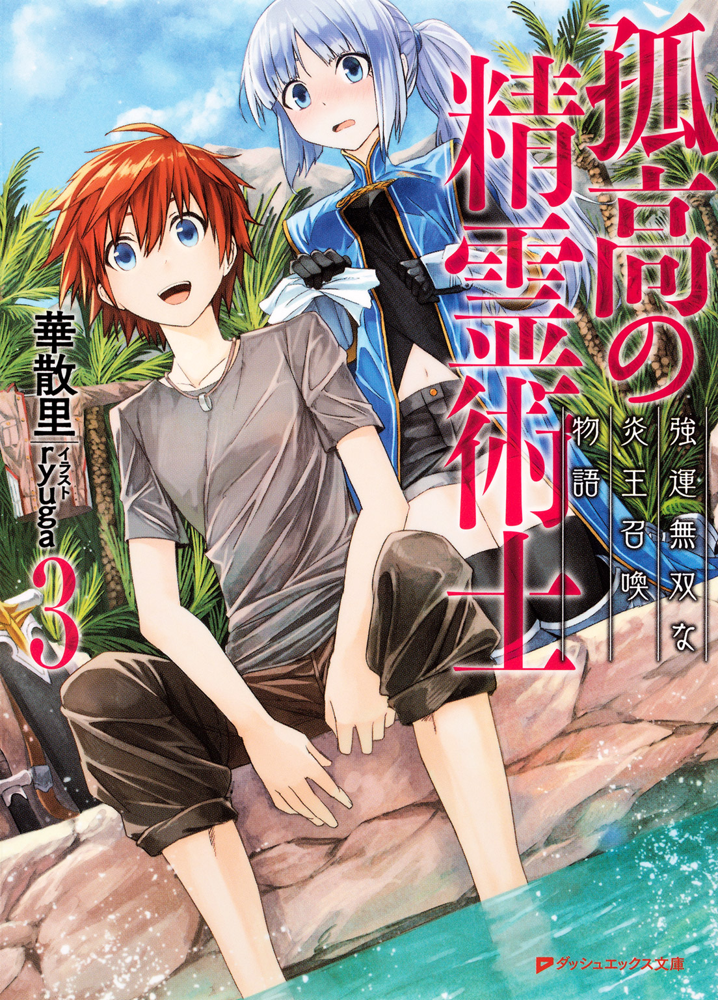

| 孤高の精霊術士 3 ―強運無双な炎王召喚物語― | |
| 華散里 | |

この本は縦書きでレイアウトされています。
また、ご覧になる機種により、表示の差が認められることがあります。
 ダッシュエックス文庫DIGITAL
ダッシュエックス文庫DIGITAL
孤高の精霊術士３
―強運無双な炎王召喚物語―
華散里
序章 封印の綻び
「気高き紅蓮の精霊よ......。我が呼び声に応えて跳べ!! 『鳳凰斬!!』」
親父の力強い声に呼応するかのように、剣先から出現した紅蓮の炎が地面すれすれの高さを滑るように駆け抜けていく。
「すっげぇ!! 親父すげぇぇっ!!」
目の前を一直線に突き進む炎は、正面に立つマクセヌが生み出した魔法陣へ垂直にぶち当たり、轟音と眩い輝きを辺りに撒き散らす。
同時に巻き起こる爆風に、まだ小さい俺の身体は煽られそのまま後ろに吹き飛ばされていた。
「う、わぁっ!?」
「ハルキさまッ!! きゃぅッ!?」
そんな俺の手を、隣に立つ小さな女の子が慌てて摑むんだけど、結局は二人まとめてその場に転がっていく。
「痛ってぇ............」
手を繫ぐ小さな俺達は、ゴロゴロとしばらく転がった後、大樹の幹にドンとぶつかりそこで止まった。
そんな俺の目に焼き付いていたのは、抜けるように高く青い空と、吹きつける風に乱れる銀の髪。
爆音に気がつき、慌てた顔で駆け寄るお袋。
遠くからは「畑が荒れるじゃろうがーっ!!」と叫ぶ、じいちゃんの怒声が聞こえていた。
突如としてプツリと途切れた映像と、訪れた暗闇にゆっくりと瞼を開ければ、視界に映るのは見慣れた天井。
そのまま視線を巡らせれば、窓から柔らかな月明かりが差し込み、涼やかな夜風が吹き込んでいた。
「――――夢、か」
深く息を吐き出し、ぽつりと呟く。
そりゃそうか。
親父もお袋も、とうの昔に死んでしまって墓の中だ。
夢の中でも「これは夢だな」と薄々感じ取っていたんだが、まるで物語の一部を覗いているような不思議な感覚で......。
なんていうか、過去の記憶の断片に迷い込んだっていう印象だった。
いや、多分。あれは俺の過去の一部なんだろう。
俺にはじいちゃんから受け継いだ精霊術士の力があるらしい。
それから昔の記憶の一部を封印という形で抑制されているって聞いている。
まぁ、その辺については俺自身に実感があまりないというか、知らないまま育ってきたってのもあって、他人事みたいな感覚だ。
なにせお袋がアイシャフ国の王女様だったとか、親父が昔は騎士団長をしてたとか。
それだけでも何の冗談だと言いたいくらいだっていうのに、俺を引き取って育ててくれたじいちゃんに至っては伝説の大賢者だっていうから驚きだ。
三人ともが死んだ後に、親父の親友だっていうゴウイのおっさんに聞かされたわけだが、頭で理解したって感情がついていけてないのが本音だったりする。
だから、だろうか。
本当に稀にだけど、こうして夢という形で昔の記憶を少しだけ見ることがある。
「あー......。駄目だ、完全に目が覚めた」
上体を起こして、寝癖のついた髪をがしがしとかく。
夢の中での小さな自分が興奮していたせいだろうか、妙な高揚感が抜け切らなくて眠気もすっかり失せていた。
寝台脇に置かれた時計にチラと目をやれば、空が白み始めるまでには小一時間もあるかないかという程度。
暇をつぶすには微妙な時間だと考えていると、不意に横で眠る存在がもぞりと寝がえりを打つ。
「お目覚めでございますか、我が君？」
「あ、悪い起こしたか？」
気配に敏感なレイジェはすっかり目が覚めた様子で身を起こすと、乱れた髪を手ぐしで撫でつけていた。
「いえ、大丈夫です。もともと、あと少しで起きる時間でしたので」
「え？ いつもそんなに早起きしてるのか？」
そういえば今日はレイジェが一緒に寝ていたんだったと、今になって思い出す。
いつもは隣の部屋で寝ているんだが、ゴウイのおっさんの画策で一緒に寝ざるを得なかったというべきか。
「ちょっと狭くて窮屈だっただろうけど、ちゃんと眠れたか？」
「は、はい。あの、その。昨夜は父が失礼を......」
「いやいや、おっさんの悪戯には慣れてきたから大丈夫。それよりもレイジェの方こそ、大変だな」
おっさんは昨夜、寝支度が整ったことを確認してから、俺の部屋にレイジェを放り込んだ上、外側からカギを掛けてきたのだ。
その前は確か、風呂場に二人で閉じ込められたんだったか。
死んだ親父とは古くからの悪友でもあるおっさんは、事あるごとに俺とレイジェをくっつけようとしてくる。
俺は別に気にしてないけど、レイジェにしたらいい迷惑に違いない。
「しっかし、おっさんも毎回毎回よく考えつくよなぁ。俺が本当に変な気でも起こしたらどうするつもりなんだか」
加えてどこからどこまでが本気なのか、全く読めないから困ったもんだ。
「わ、わたくしはっ。我が君のお側にいられるのでしたら、その............」
「まぁ、ほら。いくらレイジェが美人で気立てが良くてスタイル抜群でも、本人の意思を無視したりしないから安心しろ」
頰を赤らめて視線を左右に迷わせながら、何やら小声でブツブツ呟くレイジェを見ていると、逆にこっちが申し訳ない気持ちになってくる。
農村育ちの俺と違って、騎士とはいえ貴族社会で教育を受けたレイジェにとって、父親であるゴウイの言葉は絶対的な意味を持つのに違いない。
身分が高ければ、顔も知らない相手とある日突然結婚させられるなんてよくある話だってことくらい俺でも知っている。
今は色々あってレイジェは『俺の騎士』として傍に仕えてくれているけど、これから先のことなんてどうなるかはわからない。
「あ、あのあのあのっ............」
「............んー、どうした？」
寝台横に揃えて置かれていた靴を履いていると、少し慌てたような印象の声をレイジェが背後からかけてくる。
一旦手を止め、振り返ってみれば思った以上に距離が詰まっていて少しだけ驚いた。
そんな俺に向け、レイジェが更に身を乗り出してくる。
「わ、私の意思はその......っ。あっ、いえ、その、あの。......も、もうご起床なされますか？」
「折角だし、たまには早起きして騎士団の鍛錬に顔でも出そうかなと思ってるんだけど、逆に邪魔になるか？」
たまーに忘れてしまいそうになるんだが、どういうわけだか任命されてる俺の役職、まさかの騎士元帥。
いやいや確かに、この役職がなかったら正直言って俺は今頃ただの穀潰しの居候っていうか、ゴウイのおっさんの屋敷で下働きをするしかないんだけど。
名前だけ大層なこの騎士元帥って役職は、就ける身分に制限があるとかで席が空いていて、色々あって今は俺が収まっている。
アイシャフにある四色の騎士団をまとめるのが仕事らしいんだが、幸いなことに各色の騎士団長達が有能だから、俺がすることといえば毎朝の会議に顔を出すことと、時折各騎士団の修練場に顔を出す程度。
「とんでもございません。皆も良い励みになるかと............あっ!!」
「どうし............ぅわっ!!」
普段は起きてから一人で親父の剣で素振りはしてるんだけど、夢見のせいかしっかり身体を動かしたい気分。
そんなことを考えていると、レイジェが発した驚き混じりの声に誘われ、その視線を辿る。
するとそこには、薄暗い部屋の床に、仄紫色に発光する魔法陣が浮かび上がっていた。
その輝きは強さを増していき、床から数十センチ浮いた辺りに魔法陣からの力を吸い上げるかのようにして螺旋状の紫光が細い糸となって幾重にも伸びていく。
幻想的な光景に目を奪われていたのがまずかった。
「ふふ。妾がおらぬ間、ハルキも独り寝で寂しかろうて。男女よりも先に起こし、て............」
ポゥと柔らかな輝きを放った紫光の魔法陣。
中央に黒髪の少女がスゥと姿を現せば、口元に楽しげな笑みを浮かべてそう呟いていた。
「お、おかえり。ユナ」
「これは......どういうことじゃ、ハルキ？」
しかし床の魔法陣が光を失い、室内には元の月明かりのみが残される頃には、ユナの表情は一変。
眉根を深く寄せ、不機嫌さを露にしていた。
「どういうことって、一体何がだよ？」
言っている意味がわからなくて首をかしげてみせるんだけど、取りあえず物凄く機嫌が悪そうだということだけは俺にもわかる。
ただ、何でそんなに機嫌が悪いのかがわからないっていうだけで。
（皇魔国で何かあったのか？）
それにしちゃ、魔法陣から出てすぐの時には機嫌も良さそうに見えたんだけどなぁ。
うーん、と。声を漏らして考え込むんだが、心当たりが全く見当たらない。
皇魔国の王女でもあるユナは、神国ランカとの約定とやらがあるらしく、定期的に国元へ帰らなくちゃならないということだ。
本来なら人間の大陸と皇魔の住む孤島は『神の作りし結界』というので隔てられていて、ランカ国を通してこちら側に来なくちゃならないらしいんだが、ユナは俺と使い魔契約を交わしている関係で、移転の魔法陣を使いこうして直接帰ってくる。
まぁ、俺にはよくわからないんだけど、国同士の取り決めというか、何か難しいことが色々あるみたいだ。
「妾が居らぬからというて、何故そこの男女と同衾しておるのかということじゃっ!!」
「..................へ？」
床から数十センチという高さにフワフワと浮いたまま、ユナが人差し指をビシリと俺とレイジェへ突きつけてくる。
「あー、それがさ、聞いてくれよユナ。ゴウイのおっさんがまた、悪ふざけを............待て。ユナ、いくらなんでも、それは死ぬからっ。当たったら即死だから!!」
「言い訳は聞かぬのじゃっ」
「うあああああああああああ――――――ッ」
「我が君っ!!」
ユナの白い指先にパチパチと絡みつく紫電が弾け飛ぶのと、俺の断末魔のごとき絶叫が響き渡るのは、ほとんど同時のことだった。
その日の空は青くどこまでも澄み渡っていた。
まだ早朝と呼べる時間帯だったこともあってか、日差しもそれほど強くはない。
吹きつける風も心地よく、騎士達に交じって剣を振るには絶好の天気といえるだろう。
「うぅ。まだヒリヒリする」
「妾の目を盗んで浮気などをするからじゃ。いかに愛しいそなたとて、たまには灸を据えてやらねばのぅ」
俺の左腕に白い腕をからませて、優雅に微笑むユナは上機嫌でそうのたまった。
つい先刻、闇の魔法を俺にぶちかました時の怒りが噓のようだ。
（やっぱり俺には女の子の思考回路がよくわからない............）
そんなことを考えながら、手入れの行き届いた芝を歩いている。
アイシャフ城にいくつかある中庭のうちのひとつであるここは、普段から青の騎士団が護りを固める区画になっていて、もう少し進むと騎士達が日々の鍛錬に勤しむ修練場へと辿り着く。
ゴウイのおっさんが率いているのが青の騎士団であることや、親父が昔そこの団長をしていたということもあって、俺も普段からちょこちょこと顔を出している。
本当は城から繫がる専用の渡り廊下があるんだが、俺はこうやって外を歩く方が断然好きだ。
ユナは芝は靴が合わないと言って、地面から数センチばかり浮かんだ状態で、俺の動きに合わせてふよふよと漂っている。
「だーかーら。あれはゴウイのおっさんに無理やりされたんだってば」
「城にもそなた専用の部屋があるというのに、わざわざゴウイの屋敷に住むからじゃ」
「それ、お袋が使ってた離れだろ。あんな隅から隅まで乙女チックに改造された場所で生活できるわけないだろうが」
「愛らしくて良い部屋ではないか」
確かにアイシャフ城には俺用にあてがわれた部屋がある。
（でもなぁ、あそこはなぁ............）
その部屋の内部を思い返して、はぁと深い溜息をひとつ落とした。
親父と駆け落ちする前にお袋が使っていたという、こぢんまりした離れ。
そこはおとぎ話に出てくるみたいな妖精の隠れ家的造りになっていて、初めて見せられた時には流石の俺も目が点になったのを覚えている。
女の子だったら一度は夢見る感じ......なんだろうか？
その辺は正直よくわからないんだが、従妹のリチェルは手をたたいて喜んでいた。
まぁ。どうせ居候するなら堅苦しい城よりも、気さくなおっさんの屋敷が居心地良好っていうのが一番の理由なんだけど。
そしてふと、隣に並ぶユナを見る。
「ユナってさ............」
「な、なんじゃ」
「前から思っていたんだけど、可愛いものとかふわふわしてるものとか大好きだよなぁ」
普段はどちらかといえばクールな美人といった雰囲気のユナだけど、時折見せる思考回路や反応対象が『乙女』なのだ。
「ふん。小娘ならばまだしも、この妾にそのような趣味などあるはずがなかろう」
しかし美人のユナに対して可愛いと言うのは少々気に障ったのだろうか。
俺に絡めていた腕を離すと、形の良い胸元で両腕を組み直し不服だと言いたげな表情を浮かべていた。
「リチェル？ あぁー。確かにあいつもそうなんだけど、服装とかそういうのだけじゃなくて。ユナは、なんていうか。考え方が可愛いじゃないか」
「きゅ、急になにを申すのじゃ。ま、まぁ。愛しいそなたに褒められるのは妾も嫌いではない故、悪い気はせぬがのぅ」
ほんのりと目元を朱色に染めたユナは、その表情を隠すかのようにふぃと視線を外すと、艶やかな黒髪にサラリと触れる。
そうかと思えば、髪に触れていた白い指先が俺へと伸びてきて、首筋に絡みついてきていた。
いつの間にか反対側の腕も同じようにして、正面から抱きつくようにして首にぶら下がる。
ユナ自身は浮いているから重いわけじゃないんだけれど、何て言うかその............。
形が良い胸元が押しつけられていて、加えてユナの髪からはフローラルな香りがだな。
「うわわっ。こら、すぐそういうことをするんじゃない。あっ、ほら。修練場に到着したし!!」
「ふふ。相変わらず初心なことよのぅ、ハルキ」
ただでさえ綺麗な顔をしてるっていうのに、至近距離から視線を合わせられれば流石の俺もどうすればいいんだという感じというかっ。
慌てて話題を変えようとしたんだが、上機嫌で笑みを深めたユナの指が俺の髪を絡めるように蠢いて、どうにもくすぐったくてかなわない。
助けを求めるようにチラとレイジェを見れば、困ったように微笑み返されてしまった。
「レイジェ、適当な相手を見繕ってもらっても構わないか？」
「では、副団長などいかがでございましょう？」
こんな時。
ユナの悪乗りに対してリチェルがここにいたなら、一緒になって割り込んでくるところなんだろうが、レイジェは常に控えめで口を挟んでくることはあまりない。
たまーに、見かねて助け船をくれることはあるけれど。
っていうか、それよりも今は推薦された練習相手に口元が思わず引きつる。
「いやいやいや。副団長とかそれはちょっと強すぎないか？」
「ご謙遜を。父上以外となりますと、この〝青〟にて我が君のお相手が務まる者は他にございません。それに皆にも良い刺激になるかと存じます」
ブンブンと勢い良く頭を振った俺に、キョトンとした表情を浮かべたレイジェが、ふふっと微笑んでから恭しく頭を下げてきた。
いやいや、別に謙遜とかじゃなくて単なる事実なんだが。
初めて会った時から今に至るまで、レイジェの中で俺は相当な剣の使い手という誤認を受けているらしい。
「あー......。まぁ、相手がゴウイのおっさんじゃないだけマシか」
なにせおっさん相手だと、足腰立たなくなるまでしごいてくるから俺の身が持たない。
まぁ、どっちにしろ。
この時間はおっさんは城内にいて不在だし、そうかといってレイジェを相手にってなると俺の腰が引けちゃうんだよな。
「それじゃあ、ユナ。ちょっと行ってくるから。適当に木陰で休んでてくれ」
ガシガシと髪をかいてから、首筋にぶら下がるユナにそう言えば、その辺りは察しているらしく爪先をトンと地に着け俺から離れる。
「まぁ、久し振りにしっかり鍛錬してくるか」
手袋の端を引っ張りきちんと嵌めなおすと、騎士達の声で賑わう修練場へと足を踏み出した。
レイジェを伴いハルキが青騎士団の修練場へと立ち去った後、残されたユナのもとへ朝の風が優しく吹き抜ける。
そんな涼やかさとは対照的に、その背を眺めるユナの頰は一瞬にしてポンッと真っ赤に染まっていた。
「う、うぅぅぅぅぅぅ。あ、あれは......あれは、反則なのじゃ」
自分でも赤面している自覚があるのか、両手を頰に押し当てたユナはカクンと膝を折り、その場にへなへなと座り込んでしまう。
そうしてすぐ傍らにある太い樹の幹に上体を預けるようにして寄りかからせ、気を落ち着けようと深く息を吐き出していく。
「そ、そもそも何故、妾が......か、可愛いものが大好きと知っておるのじゃ」
目線をチラリチラリとハルキが向かった修練場と、足元の地面をいったりきたりさせながら、ふるふるふるっと朱色の顔を左右に振る。
艶やかな黒髪がサラサラと揺らめき、柔らかな木漏れ日の中、ユナはそろりと己の頭に触れた。
「た、たまには、違った髪飾りでもつけてみたなら、ハルキは気に入ってくれるかのぅ」
ぽつりと呟くも、すぐに頭から手を離しぎゅっと握り込み、そしてそのまま勢い良く、宙にふわりと浮き上がる。
染まった肌の赤味は次第に色を薄めていた。
「......う。だ、ダメじゃダメじゃダメじゃダメじゃ。それでは小娘と変わらぬではないかっ。妾は誇り高き皇魔の王族ぞ!!」
誰がいるわけでもなく、誰に告げるというわけでもなく。
しかし先ほどまでの気弱な表情は、いつもの気高さに払拭されて凜と背筋が伸びていた。
「妾としたことが、ハルキの鍛錬を見逃すところであったわ!!」
ハッとした表情を過らせたユナは、そのまま優雅に宙を泳ぐように進みつつ、ハルキがいる修練場を真っ直ぐに見据える。
「............す、好き、とは。なんと御し難い気持ちであることか」
ぽつり、と呟くその声は、穏やかな木々のざわめきの中へと消えていた。
「う、わわわっ!!」
「流石は殿下っ。これを避けられるとは、聞きしに勝る剣の腕前!!」
それで、だ。
あれからレイジェに紹介された青騎士団の副団長なんだが。
滅茶苦茶強い。しかも容赦がない。
いや、考えてみれば青の騎士団でおっさんの次に強いわけなんだから、当然と言っちゃ当然なんだけど。
おっさんみたいな豪快かつ重量級の攻撃とは違い、緻密に計算されてる速さとしなやかさを併せ持った攻撃っていうか。
「何故、打ち込んで参られぬのです!! 手前にはハルキリア殿下の剣撃に耐えうる力量なしとのご判断であられましょうか!?」
「いやいやいや、何その勘違い!! どうしてそうなるんだよ!?」
確かに副団長の攻撃は全部避けているけれど、それはアイシャフに来てからほとんど毎日、ゴウイのおっさんから激しい稽古をつけられている成果ってところだろうか。
おかげさまで避けるのだけはホント上達してると思う。
そう、避けることだけ。
だから理屈じゃない。よくわからんが結果的にどうにかギリギリ避けてる。
簡単に言ってしまえば、攻撃を仕掛けられるだけの隙が相手にないっていうか、俺にそれだけの技量がないっていうか。
それなのに何でだか俺よりも相手の副騎士団長の方が、よっぽど切羽詰まった表情で斬り込んでくるんだが一体どういうことだと訴えたい。
「............ふぅ。おああぁぁぁぁぁぁぁぁッ」
そしてやはりというべきか。
一旦動きを止めた上でふぅと息を吐きだした副騎士団長は、これまで小出しにしてきた剣撃とは明らかに違う、腰を深く落とした構えから流れるような一撃を繰り出してきた。
「ちょっ、と、待っ......どぁッ!?」
流石にもうこれ以上はどうにも避けられない!! そんな感じで腹をくくりながらも反射的に身を捩った刹那、地面にできていた窪みに足を取られてすっ転ぶ。
「なにっ!?」
それはもうあまりにも華麗な顔面からのスライディングというべきか。
いや、どうにかすれすれ前転の要領で受け身を取ることに成功したから、顔が潰れることは回避できたんだけど。
俺の身を追うように『ザンッ、ザンッ、ザンッ!!』と連打で副団長の剣が地面に突き刺さりながら迫ってくるとか、本気で勘弁してくれないだろうか。
「くっ。よもやこの技すら、かすりもしないとはッ!!」
「え？ いやいや、攻撃が凄すぎて身が竦むかと思ったから!!」
目の前で唇を嚙みしめる副団長には非常に申し訳ないが、単に躓いてコケただけだからな？
若干口元をヒクリとさせながら、チラリと辺りを見やって更に後悔。
周りの騎士達が凄い見てるよ!!
レイジェなんてキラキラの眼差しで、ガン見してきてるから!!
何て言うかこれはもう、収拾不能に近い状態って言うか、このまま避け続けても埒があかないのが目に見えている。
（かといって攻撃を仕掛けたとしても、俺のへなちょこな腕前じゃ絶対にかすりもしない気がするんだよなぁ）
今までヤバい局面でどうにかなってきたのは、俺の中に隠されているとかいうチカラのおかげだし。
ただ、大賢者といわれたじいちゃんから受け継いだチカラは封印されてるらしくて、自分で自由に使いこなせるわけじゃない。
「うーん............。あ、そうだ」
もう充分に身体も動かしたことだし。
周りからの間違った期待をこれ以上高めないためにもだな。
ここから逃亡しよう、そうしよう。
「これはヤバい。名案すぎる」
ナイスな思いつきに呟くと、心境がそのまま顔に滲みでたのか口の端がニヤリと上がる。
そんな俺の変化を見逃さなかった副団長は、再び腰を低く落とし剣を構えなおした。
いやいや、そんなに警戒しなくとも。
派手な攻撃をしかけたと見せかけて、ツルッと拍子抜けしたところでここから走って逃げるだけだから。
まぁ、見せかけるというよりは、そうなっちゃうという方が正しいんだけれど。
何せそんな大技、俺に放てるわけがない。
それでも周りが『俺ならできるハズ』と勘違いしてくれてる状況を、上手く使ってこの場を離れるとか我ながら天才的な発想すぎる。
「副団長。今から凄いのブチかますから............死ぬんじゃないぞ？」
「――――ッ!! 光栄の至りにて。お相手つとめさせて頂きます」
うああああああああああっ。
自分で言うのもなんだけど、ちょっと台詞が気障過ぎただろうか!?
動揺を押し隠しつつ辺りをチラチラ垣間見たけど、シンと静まり返ったその場の全員が、俺の一挙手一投足に対して固唾をのんで見守っているようだった。
問題がひとつあるとすれば、見せかけだけといったってどうやって技を繰り出すふりをしてみせるか、なんだよなぁ。
「あ、そうだ」
ヤバい、今日の俺。めちゃくちゃ冴えてるかもしれない、なんて思いつつ両手で剣を構えなおす。
『気高き紅蓮の精霊よ 我が呼び声に応えて跳べ............』
ゆっくり深く息を吸い込み、正面に立つ副団長を静かに見据えながら、俺は夢で見た親父の姿と自分とを重ね合わせていた。
「行けぇぇぇぇっ!! 『鳳凰斬!!』」
腹の底から声を張り上げ、勢いつけて愛剣を勢い良く振り下ろす。
ブンと低く空気を震わせながら、地面すれすれに停止する切っ先。
夢の中で見た親父の場合は、紅蓮の炎が爆風と共に地面を............。
まぁ。俺の場合は前ふりだけで、そんなことにならないんだけどな。
「って、ちょっと待ったぁぁぁぁぁぁぁぁ」
ズガガガガガガガガガガガガガ
と、地表をえぐる激しい音を伴わせ、俺の剣から生み出された爆風は這うようにして副団長目がけ凄い速度で迫りゆく。
親父と違うのは、炎が出てないということだけだ。
「ええええええええええええええええっ!?」
いやいやいやいやいやっ。
死ぬからっ。
これ直撃したら副団長死んじゃうからぁぁぁ!!
（いや待て本当にちょっと待てどうして俺の剣からこんなトンデモナイ技が飛び出したんだ誰か説明してくれ頼むからっ!!）
混乱のあまり脳内のネジがちょっと緩んでしまった自覚はあるが、これはマズい。
そうかといって技を止めることもできなければ、副団長を助けてやる力量もなくて。
――――――ドンッ
明らかな直撃音と共に、副団長の足元で爆ぜた土煙が辺りに飛び散る。
「うあぁぁぁぁぁぁ!!」
副団長ではなく俺の悲鳴が辺りに木霊し、吹き抜けた風に払われ消えた土煙の中。
無傷の副団長が、呆然とした表情で立ち尽くしていた。
紫色に淡く輝く魔法陣を浮かべ、妖艶に微笑むユナに護られながら――――。
「ユ、ユナ。............はぁぁぁ。よ、良かったぁぁぁぁ」
「ひと振りでこの威力。......ふふ。流石はハルキじゃのぅ」
どうやら俺の焦りを感じ取ったのか、ユナが闇の防御魔法で上手い具合に技を止めてくれたらしい。
「俺、てっきり副団長を......っていうか、これはこれでやべぇ!!」
間一髪、副団長を消し炭にする事態は回避できたものの、修練場の真ん中にはパックリと、深い深い溝が刻みこまれている。
どう考えても明らかに、ゴウイのおっさんから鉄拳制裁されてしまいかねないレベル。
「これはまた、派手に裂けてしまったのぅ」
「いやいや、そんな吞気な!! おっさんと兄貴に何て言われるか............」
防御の魔法陣を消し去ると、宙にふわと浮いて俺へと近づくユナが、くすくすと笑みを含ませ割れ目を眺める。
「こうなったら、仕方がない」
余程予想外の衝撃だったのか、未だ魂が抜けたように呆けている副団長へ心の中ですまないと謝りながら、同じように呆けていたレイジェの手首をガシッと握る。
「ユナ、レイジェ。ずらかるぞっ」
「わ、我が君!?」
「仕方がないのぅ」
慌てるレイジェを引っ張りながら、今だ笑いが収まらないらしいユナと共に、俺はその場を駆けだしていた。
「どうかしたのかい、マクセヌ？」
皇太子アレフの執務室。
机にうず高く積まれた書類の山に溜息をついていた皇太子は、弾かれた様子で窓の外を見たマクセヌに、何事かと眉をひそめる。
「いえ。今、ハルキリア殿下の精霊力を感じたように思いまして............」
「ハルキの奴に何かあったってことか？」
そこから一枚、ひょいと手に取り中身を確認しながらゴウイもマクセヌへと問いかける。
「わかりません。殿下は精霊術士としてはまだ幼く、意図的に力を振るうことはおできにならないはずなのですが」
「ラウルの封印も完全に解けちゃいねーんだろぉ？」
「はい。しかし幾度かの覚醒と殿下ご自身の成長で、封印に綻びが生じているのかもしれません」
「それはハルキが精霊術士として順調に育っているということかな？ それとも......想定外？」
僅かに困惑の色を滲ませ首を左右に振ったマクセヌへ対して、皇太子は何かを問いたげに双眸を細めた。
そんな皇太子の眼差しと、先ほど感じた精霊力に何か思うところでもあったのか。
深い深い溜息をつくマクセヌ。
「............念のため、聖女様に連絡を入れておくことに致します」
「なんにせよ、だ。目下の問題は、こっちだろ」
そんな二人のやり取りを横目で見つつ、ゴウイはソファにどかりと腰を落とすと手にしたままの書類を指でパンと弾いていた。
乾いた音につられたように、皇太子とマクセヌの視線が移る。
「本当に。ランカの司祭長もとんでもないことを言ってくれたものだよ」
「光の精霊王の妃は六人、ですか」
「どーすんだよこれ。全部結婚の申し込みだろ？」
皇太子の机にうず高く積まれた紙の山。
普段から要領よく仕事をこなす皇太子は、これほど書類が溜まることはない。
しかしよくよく見れば、その全てが年頃の少女達の紹介状なのだ。
所謂、お見合いの釣り書き、というものである。
才色兼備は勿論のこと、国内外問わず選りすぐりの家柄の娘達ばかり。
どれもこれもが、『黄金の獅子』として名高い『アイシャフ王国騎士元帥ハルキリア皇子』宛てである。
政治的にも非常に重要視される分野である以上、国王から全責任を丸投げされた皇太子は、予想外の事態にすっかり頭を抱えてしまっていた。
「申し上げます!! 青の修練場が大破致しました!!」
そんな中。慌てた様子で執務室に転がり込んできた騎士からの報告に三人が顔を見合わせる。
修練場を破壊した犯人が誰か、などと聞く者は一人もいない。
「............おいおい」
「あはははははっ。さっきの直感は大当たりだね、マクセヌ!!」
「ハルキリア殿下............」
ただ、ゴウイは呆れ果てた表情で呟きを漏らし、皇太子は楽しげに笑いだし、マクセヌは途方に暮れた様子でガクリと肩を落としていた。
第１章 波乱呼ぶ郷里の香
「はーっ。びっくりした。ここまでくればもう大丈夫か」
やってきたのは下街の一角。
その通りには露店がいくつも並んでいて、行き交う人たちも活気に満ちていた。
城の中にある修練場からここまで結構な距離があるからか、休まず走り抜いたせいで息が苦しい。
ユナは宙に浮いているから別として、レイジェの息が乱れてないのは、日頃の鍛え方の違いだろうか。
何にせよ、女の子に負けちゃう持久力ってどうなんだと少しだけ自己嫌悪。
たまには走り込みもするべきなんだろうか............。
「わ、わわわわわわ、我が君」
「ん？ どうしたんだ、レイジェ？」
そんなことを真剣に考えていると、隣のレイジェから困惑交じりの声をかけられる。
「そのあのそのっ......お手を」
言われてようやく、レイジェの手を握ったままだったことに気がつく。
「あぁ、そうだった。悪い悪い」
その手をパッと離して笑ってみせるが、頭の片隅に過る既視感に俺の動きは止まっていた。
朝に見た夢の影響、だろうか。
うーんと眉を寄せて考えようにも、実は夢の内容が少しずつ霧がかかったようになってきていてあまり思い出せなくなってるんだよなぁ。
親父が使っていた剣の技と、それを防いでいた見覚えのある誰かと............。
（って、そんなこと今考えてても時間の無駄だな）
自分の記憶力のなさに苦笑いしながら、ユナとレイジェに意識を向け直す。
「なぁ、昼飯まだだし。折角だから何か食べていかないか？」
元から折り合いのあまり良くないユナとレイジェだ。
何か目的を考えなくては、些細な理由で口喧嘩を始めかねない。
「............って、二人とも何を見てるんだ？」
一応俺なりに珍しく場の空気を考えて聞いてみたんだが、当の本人達は並んでしゃがみこみ、すぐ前の露店に広げられた商品を熱心に物色していた。
「へぇー。これは凄いな。全部髪飾りか？」
地面に直接敷かれた布は質素なものだが、そこに並べられている品はひとつひとつが丁寧に作りこまれていると一目でわかるものばかり。
シンプルなものから可愛らしいデザインのものまで、色も形も豊富に取り揃えられていた。
「いらっしゃい、お兄さん。恋人におひとついかが？ お安くしとくよー」
「え？ いや、俺は......」
こういうところは年相応っていうべきか、目を輝かせて楽しげに物色するユナとレイジェの頭上から覗き込む俺に、店番らしき女の子が元気な声をかけてくる。
「これなんかオススメだよ。って、あれれ？ もしかして、こっちの美人さん達。二人ともお兄さんのお連れさん？」
「ん、あぁ、まぁ、そうだけど......」
にっこり笑う表情が人懐っこくて、つい何か買ってやらなきゃという気になる感じの子だな。
そうかといっても、男の俺が必要な物は置いてないから見てるだけになるけれど。
「すごいすごいっ。両手に花だね!! わわっ、お姉さん、目が高い!! それは水の精霊の加護がついてる特別製だよーっ」
「ハルキの瞳と同じ色の石じゃのぅ。それになんと可憐で愛らしい細工であることか」
女の子特有の空間にうっかり足を踏み入れたものの身の置き所に困っています的な状況の俺を知ってか知らずか、髪飾りのひとつを手に取ると、中心にあしらわれた石を確認するかのように空へ翳してユナが眺める。
「うんうん、そうでしょそうでしょ!! 宝石職人シャロン作の写しだよ!!」
「シャロンといえば、あの、今流行りの!?」
光に透かして石を眺めるユナの横から、女の子の言葉に食いついたのは意外にもレイジェだった。
必要な魔道具は別としてあまり装飾品をつけないレイジェにしては珍しい。
それとも俺が知らないだけで、相当に有名な宝石職人なんだろうか。
「そうだよそうだよっ。でもこれは形を似せて作ったものだから、とってもお安くお譲りできるよ!!」
「そんな堂々と贋作を露店で売っても大丈夫なのか？」
ユナを挟んで並ぶようにしゃがんで、ひとつひとつを間近で眺めていく。
俺からすればどれも『すっげぇ綺麗な細工の髪飾り』にしか見えないんだが、女の子達からしたら流行りのデザインとかあるんだろうな。
「だいじょうぶだいじょうぶ。本人の許可を貰ってあるから!!」
「なんじゃと!?」
「ご本人のっ!?」
「ねぇねぇ、欲しくなってきちゃったでしょ？ どうどう？」
「ちなみにいくらするんだ？」
何だかもう横の二人が買う気満々なんだが。
露店とはいえ装飾品だし、贋作とはいえ有名な職人のデザインみたいだし、ありえない値段をふっかけられたらどうするつもりなんだ。
念のため探りを入れておいた方が良さそうだと、ユナの手元を指差しながら聞いてみることに。
「そうだねそうだねーっ。お姉さんの持ってる髪飾りは本当は、兄弟石の飾りもあって。こっちの三個も合わせて一セットなんだぁ。だからできれば四個まとめて買ってほしいな!!」
すると店番の女の子が口元に指を当てて、うーんと考え込んだ後で、横から何やら新しい箱をひとつ取り出した。
パカリと蓋を開けられた箱の中には、微妙にデザインの違う髪飾りが更に三個も並んでいる。
「いやいやいや。流石に四個も買えるほどの手持ちは............」
「おまけにおまけで、銅板十五枚!! いや、十三枚にしておくからさーっ」
「これが左様に安いと申すか!?」
「かかか、買いますっ。セットで買います!! なんならお店の物全部買い取ります!!」
「おい、待て。二人とも落ちつけ。レイジェは特に落ちつけ」
普段の冷静沈着なお前は何処に行ったんだ、レイジェ。
放っておいたら本当に全部買い占めそうな勢いに、俺の方が逆に驚いちゃったじゃないか。
「だめだよだめだよーっ。こういうのは、男の人が買わないと!!」
身を乗り出す二人に対し、顔の前で人差し指を使いバツ印を作ってみせる店の女の子。
その言葉に対して弾かれたように、ユナとレイジェが俺をガン見してくる。
ちょっと違うかもしれないが、目で殺すってこういうことを指して言うのかもしれない。
「う............ちょ、っと確認するから待て」
あまりの気迫にゴクリと生唾を飲み下した俺は、慌てて懐から財布を取り出した。
それにしても銅板十三枚かぁ。
この辺の相場で定食屋の昼飯が銅板一枚。もしくは銅貨五枚。
そう考えると高いんだか安いんだか、興味もないから全くもってヨクワカラナイ。
「一、二、三、四............ん？ おぉ、丁度ピッタリ十三枚!!」
「やったよやったよ、お買い上げーっ!!」
いや、偶然にも確かに持ち合わせはあったけど、今の全財産だからな？
飯以外にほとんど金を使わない俺は、かさばらないように銅貨は避けて、銅板主体で持ち歩いている。
だからこれを使っちゃうと昼飯が食えなく............なんて言える雰囲気じゃないですよね、わかります。
「あー............。わかった、四個まとめて、な」
「まーいどーありー!!」
まぁ。ユナにはさっき闇魔法で助けてもらった借りもあるし。
レイジェにはいつも世話になっているし。
日ごろの感謝をこめてと考えれば、悪くない買い物だった............かな。
店の女の子から受け取った箱には、青い石を中心に繊細な銀細工が施された髪飾りが並べられていた。
ひとつひとつはそれほど大きくないものの、蝶をモチーフにしたデザインのそれが四個となれば随分と華やかだ。
「ユナはこれだったな」
「ハルキからの贈り物、か。ふふ。たまには悪くないのぅ」
いやいや、買わざるを得ない雰囲気だったからな？
俺に拒否権なんてなかったからな？
一応ユナにはついさっき手にしていた髪飾りを手渡すと、目元を朱色に染めながら優しい眼差しで髪飾りをジッと見つめる。
「レイジェは............これなんてどうだ？」
「あ、ありがとうございます、我が君!!」
レイジェはシンプルなデザインの物が似合いそうだなと、ひとつを手に取り差し出せば、満面の笑みで受けとり大切そうにそっと胸元に抱いていた。
まぁ、何にせよ二人が嬉しそうで良かった。
うんうんと頷きながら箱に蓋をしたところで、物凄い衝撃が背中にズンと直撃する。
「見つけましたわっ!!」
「おわわっ―――ぶっふッ!!」
「わ、我が君っ!!」
不意を突かれ、その場に踏みとどまることができなかった俺の身体がグラリと前へ傾いていく。
ヤバいと感じた時にはもう遅い。
視界には地面があと少しの距離まで迫っていて、髪飾りの箱が落ちないように咄嗟に頭上に掲げるのが精一杯だった。
「ユナ殿とレイジェだけ連れて下街へ遊びに出られるなど、ずるいですわっ!!」
ズザザザッと見事に顔から地面に滑り込んだ俺の上から、リチェルの声が降ってくる。
舗装された大通りの石畳とは違い、この辺りの地面は土だから、顔面崩壊の大惨事は辛うじて免れたみたいだ。
「って、リチェル!? お前、いつもいつも俺の顔面を潰しにかかるのはナントカシテくれ。そして少しは兄ちゃんの顔を心配してっ!!」
箱を一旦地に置くと、肘をつきぐっと頭を持ち上げた。
見上げながらの俺の訴えに、地べたに転がる姿をしばらくじっと眺めてから、リチェルはキョトンとした表情を浮かべて隣にしゃがみ込むと、愛らしい仕草で小首を傾ける。
「............まぁ。ご無事でして、ハルキ様？」
これは絶対絶対絶対、自分が原因で俺が転んだということを自覚してないなというのだけは把握した。
リチェルの場合、こういうところは完全に天然なんだろうけど何だか悲しい、そしてちょっと切ない。
それでも可愛いので許してしまうあたり、兄馬鹿の自覚はあるけれど。
家族のいない俺にとって、リチェルは妹同然の大切な存在だ。
「オソイヨ。ところで、何で俺が下街にいるってわかったんだ？」
よっこいしょ、なんて呟きながら起き上がり、改めて箱を持ち直す。
両手がふさがっている俺を見て、すぐさまレイジェが服についてた泥を丁寧に払い落としてくれていた。
「アレフお兄様がすっごーくお怒りで、ハルキ様を捜してくるようにと近衛の者達に指示しているのを聞きましたの」
「うわー............。ヤバい俺、国から指名手配された」
台詞が棒読みなのはこの際仕方がない。
わざとらしく向けた俺の視線を受けたレイジェが、困った様子で眉尻を下げていた。
「まぁ、その髪飾り!! もしかしてシャロンの作ではありませんの!?」
よく考えたら小遣いの補給に兄貴のところへ戻れないじゃないか、なんて頭を悩ませているところに、ユナの髪飾りを目に留めたリチェルの興奮気味な声が飛び込んでくる。
「ふふふ。良かろう？ ハルキが愛しい妾に買うてくれたのじゃ」
その様子を物理的にも上から目線で眺めるユナは、形の良い胸元を張りながら優雅に笑ってみせた。
艶やかな黒髪に、銀細工の飾りがよく映えている。
「似せて作った写しらしいぞ。贋作にしちゃ、良くできているよなぁ」
「きっと工房の直弟子が、シャロンの物を習作として真似たか何かでしょう」
「ユナ殿ばかり、ずるいですわっ!! ねぇ、レイジェ......あぁっ!! もしかしてその髪飾りもっ!?」
上機嫌でふわふわと浮かぶユナをジッと眺めたリチェルが、同意を求めるように視線を移したその先で、やはりというべきか髪飾りが目に留まったらしい。
確認するようにぴょんと飛び跳ね、レイジェとの距離を詰めていた。
「あ、あのこれはそのっ」
慌てた様子で手で髪飾りを押さえるレイジェに苦笑いを浮かべつつ、手にしていた箱の蓋をパカリと開けて中からひとつ摘み出す。
「リチェルのもあるから安心しろ。ほら」
「まぁ!! 本当ですか!?」
途端にパッと表情を華やがせたリチェルを横目で見ながら、俺は何だかんだで余分に買うことになったのが幸いしたなと胸をなでおろしていた。
「ありがとうございますっ。なんて上品で可愛らしいっ。でもこれ、やっぱり本物にしか見えませんけれど............」
受け取った髪飾りを掌に載せ、いろんな角度から眺めまわしたリチェルが眉をひそめて首を傾ける様子を見ながら、手元の箱に蓋をする。
大体そんな有名な職人の作った本物なんて、俺の手持ちで買えるわけないだろうがと突っ込みを入れたいところ。
まぁ、厳密に言うならば。
騎士元帥として国から結構な金額が支払われているらしいんだけど、管理しきれないからその辺りのことはアレフ兄貴に丸投げだ。
金に興味がないわけじゃないし、寧ろかなり細かい方だとは思うんだけど............。
額がデカすぎてどうしていいのかわからないっていうのが正直なところなんだよな。
それよりも今みたいに、定期的にアレフ兄貴から当座の小遣いを貰ってユナ達と下街でちょいちょい遊んでいる方が気も楽だ。
「ここの露店で買ったんだ。なんだったら店主に確認してみたら良いだろ」
贋作かと疑うんじゃなくて、贋作だと知っている上で本物じゃないのかと聞くってことは、それだけこれが見事な出来だと誉めてるっていうことにもなるからな。
逆に店の奴も喜ぶんじゃないのかと軽い気持ちで言ってみたんだが............。
またもやキョトンとした表情で小首をかしげたリチェルが、俺と店とを交互に見比べ衝撃の事実を告げてきた。
「髪飾りなのに花屋で買いましたの？」
「............えっ？」
いやいやいやいや。
どういうことだ？と疑問に感じたのは俺だけじゃない。
ユナもレイジェも、一斉にバッと露店を見たが、リチェルの言う通りそこには色とりどりの花が所狭しと並べられていた。
小太りのおばちゃんが、いらっしゃいとかけてくる声に揃って一歩後退る。
「なん、じゃと!?」
「そんなっ!!」
思わずポカーンと眺めてしまったじゃないか。
ユナとレイジェも、これ以上ない程に目を見開いている。
「噓だろ......。さっきまで店の元気な女の子が、ここで............」
「わたくしこの通りは何度も来たことがありますけれど、いつもここは花屋でしてよ？」
思わず箱を抱え直し、プルプル震える指先で目の前の店を示してみせたが、リチェルが不思議そうな表情で俺達三人を順に眺めた。
「いやいやいや。そんな、馬鹿な............」
だって、さっき、確かに、ここでっ。
どどどどどどどど、どういうことだ!?
箱の存在を確認してから、バッと顔を上げてユナとレイジェを見たんだが、二人もふるふると首を左右に振るだけで何も答えない。
いや、答えられないが正解か。
「それよりも、ハルキ様。逃げなくてよろしいですの？ そろそろ近衛の者達が来るころかと思いますわ」
うーんと眉をひそめたところで、唯一冷静なリチェルの突っ込みが入り現実に引き戻される。
「って、あああああああっ。そうだった!! 捕まったら兄貴に凄ぇお仕置きされかねない!!」
考えてもわからないことに悩む暇があったら、こっちを何とかしないとかなりマズい。
「お兄様の場合、お仕事のお手伝いをさせられる程度かとは思いますけれど。こーんな感じの笑顔で」
「そっくりすぎて怖いからよしてくれ。大体、俺にデスクワークができるはずないだろ」
こーんなと言いながら、極上の笑顔を浮かべて見せたリチェルがあまりにも兄貴に似ていて思わずたじろいだ。
顔が笑っているはずなのに目が笑っていない感じとか、何もそんなところまで再現しなくても............。
「だったら、ほとぼりが冷めるまで遠くに逃げてしまえば良いのですわ」
「なるほどっ!! でもなぁ、近衛の能力半端ないからな。どうせやるなら国外逃亡しかないぞ」
何せ追手は皇太子の勅命を受けた国家権力だ。
下手したら騎士団まで使って国中くまなく捜索されかねない。
............そう考えると、極悪犯も真っ青のヤバい状態だな、俺。
いや、不可抗力とはいえ神聖なる騎士団の修練場を大破して逃亡してるんだから、当然と言えば当然か。
今になって思い返せば、素直に土下座しに行けば良かったなと反省してはいる。
「ほぅ。それはちょっとした旅行じゃのぅ。小娘にしては悪くない提案じゃ」
「すぐにご用意いたしましょう。行き先はいかがいたしますか？」
でもなー。何て言うか、こういう逃亡ごっこっていうの？
兄貴やおっさんには悪いんだけど、凄く楽しいんだよなぁ。
親父もお袋も死んでいなかったから、もっと餓鬼の頃は毎日必死で働いていたし。
なんだかんだで帰る場所があって、こうやって悪乗りしてくれる仲間もできた。
だから、だろうか。
「うーん。そうだな......。じゃぁ、久しぶりにイシュタへ。村に帰ってじいちゃんの墓参りだ」
俺は元気でやっているからなって報告したくてたまらない。
ぐるりと見回せば、ユナもリチェルもレイジェも、それぞれ優しい表情を浮かべ頷いていた。
「それにしても相変わらず凄いな、レイジェは。あの短時間でよくこれだけの準備を整えたもんだよ」
「お誉めにあずかり光栄でございます、我が君」
馬の背で揺られながら、しみじみ言えばレイジェがはにかんだように笑んで軽く頭を下げてくる。
アイシャフの首都を出てから数時間。
俺が育ったイシュタにある村まで、もうあと少しというところまで来ていた。
まぁ、本当なら馬でも数日かかるのだけど、村の近くの街にユナがたまたま行ったことがあったということで、首都からその街まで移転魔法で飛んだのも大きい。
じいちゃんが死んだ後、村からアイシャフまで何日もかけて漸く辿り着いたあの時が、噓みたいだ。
「ところでずっと気になっていたことがひとつあるんだけど............」
「いかがなさいました？」
神妙な顔つきになった俺を訝しそうに見つめたレイジェは、少し馬を寄せると声をひそめて問いかけてくる。
「俺は良いとして。リチェルを黙って連れて来たのはまずかったかなぁと思ってさ。一応、お姫様なんだし」
視線を一度チラとだけリチェルに向けてから、俺も同じように声のトーンを落としてそう答えた。
「まぁ。一応、だなんて酷いですわ!! でも、確かに......。城の女官長には言っておくべきだったかもしれません」
静まり返った森の中ということに加えて、すぐ隣とあっては、当然ながら俺達の会話は耳に届いていたらしい。
ほんの僅かに目元を赤らめ、怒るというよりは拗ねた感じの表情で言い返してくる。
だがしかし、そんな俺とリチェルの不安は無用のものだった。
「ご安心ください。路銀を取りに屋敷へ戻りました際に、執事長にそれとなく伝えておきました。今頃きっと上手く取り計らってくれていることかと思います」
「マジかっ。流石レイジェ、細かいところまで気がきくな!!」
穏やかな微笑みを湛えてそんなことを言うレイジェが、もう女神にしか見えないんだがっ。
「い、いえ。当然のことをしたまででございます」
「そうは言うけれど、馬だって旅支度だってあっという間に整えてくれたじゃないか。このままだと俺、レイジェがいなけりゃ何もできない人間になりそうで怖いほどだぞ」
しかしここで控え目に首を振る辺り、レイジェがレイジェたる所以なんだろう。
何が必要であり、己が何をするべきなのか。
一瞬で見極めて行動に移し、そうしてそれを鼻にかけることがないレイジェに、俺も思わず笑みがこぼれる。
真っ直ぐに視線を合わせていれば、何故だかじわじわとレイジェの顔が赤らみ始めていた。
「そ、そそそそ、それはっ、その。勿論、我が君のお世話はこれからもこのレイジェが喜んでさせていただ......」
急に落ち着きをなくしたレイジェが勢い良く首を振れば、長い銀の髪がサラサラ揺れる。
相変わらず綺麗な髪だなぁなんて思いながら眺めていたら、俺とレイジェの間にぬっとひとつの影が割り入ってきた。
「先ほどから聞いておれば男女のことばかりっ。気に入らぬのじゃ!!」
「ん？ もちろん、ユナにも感謝してるさ。本当だったらかなりの日数がかかるのに、あっという間に来られたのはユナのおかげだからな」
チラと視線を向ければ、頰をむくれさせているユナの様子に、相変わらずレイジェと仲が悪いなと苦笑するしかない。
「むぅっ......。ならばもっと、妾にも感謝の意を示さぬか」
「いろんな意味で感謝のしるしならさっき渡しただろ。有り金はたいて」
指の先でユナの髪でキラと輝く髪飾りを示してみたけれど、艶やかな黒髪をサラとかきあげたユナに、さも当然とばかりの視線を送られる。
「これはこれ、それはそれじゃ」
「えぇぇっ!? そこはまるっとまとめてくれるべきだろ!?」
加えて鼻でふふんと笑ってくるユナの居丈高な仕草が、流石皇魔国の王女というべきかあまりにも様になっていて、肩からガクリと力が抜けてしまう。
馬の歩みに揺られることで、ユナの黒髪がサラリサラリと波打てば、銀細工の蝶は木漏れ日を優しく反射しながら、ヒラリヒラリと舞っていた。
「でもまぁ、うん。凄ぇ似合っているから、買って良かったとは思っているけれどな」
「なっ、ぅ...............。そ、そなたは。そういう不意打ちをするのが、ズルいのじゃ」
それはユナだけじゃなく、他の二人にも言えることだけど、日頃から何かにつけて世話になっているからなぁ。
うんうんと独り頷いていた俺の視線の先に、懐かしい景色が見えてくる。
「あぁ、ほら。見えてきた!! あそこが俺の育った村だ!!」
アレは間違いない、俺が育った村の入口だ。
ランカより帰ってからしばらく、苦手を克服するべく乗馬の練習にいそしんだかいがあったとしみじみ思う。
久しぶりに見た懐かしい故郷についつい馬の足を速めながら、ユナを見る。
そういえば、何か言っていたような？
「............って、ユナ。今何か言ったか？」
「な、何もないっ。早ぅ案内をせよと申しただけじゃ!!」
「うわ、まてっ。俺の馬の腹を蹴るな!! あぁぁぁぁぁぁっ!?」
ヒールで足の甲を貫通されなかっただけマシというべきだろうか。
ユナの綺麗な足先は、俺の馬を見事に刺激する。
突如として猛スピードで走り始めた馬の鬣を、俺は必死で握りしめていた。
「我が君っ!!」
「まぁ、ハルキ様!!」
後ろからは慌てたレイジェとリチェルの叫び声。
馬は唯まっすぐに、小さな村の入口へと突っ込んでいった。
「うあああああああああああああっ!! ヤバいっ、止まってくれ、ほら、落ちつけってぇぇぇぇ!!」
猛烈な勢いで駆ける馬以上に俺自身が焦りで背中に冷たい汗を感じながら、必死になって手綱を引っ張る。
ちなみにこの馬、かなりの名馬のはずなんだけどっ。
凄い賢くて普段は温厚な奴なんだけど!!
神国ランカの王様がわざわざ贈ってくれたという超優秀な奴なんだけど!!
それにもかかわらず興奮しきっているのか、どうにも止まってくれる様子がないんだがユナの奴どんだけ強く刺激したんだっ!?
「それとも俺の技術がアレすぎて普段の練習じゃコイツの速度の数分の一も引き出せなかったってだけでこれが通常速度なのかぁあぁぁぁぁっ!?」
身体がガックンガックン揺れてるんだけど!!
どうにか必死で股を締めて落馬を防いでいるが、叫んでいる間に村の入口は目と鼻の先まで迫っていた。
規模の大きな街とは違い、俺の育った村は片田舎特有ののんびりとしたところで、幸いにも入口の門は日中ならば開け放たれている。
そんなわけで村の門に直撃なんていう大惨事に直面することなく、そのまま中へと突っ込んでいた。
「のああああああああああああっ ――――ッ、ぐぁふッ!!」
しかしこのままじゃ、それはそれで正面の民家にぶつかってしまうと肝を冷やしたところで、突然の減速。
え、いや、ちょっと。俺がどれだけお願いしても止まってくれなかったっていうのに、ここにきて急に止まるとか心の準備が!!
なんて考えているうちに、俺はピタと停止した馬の首に鼻をしたたか打ちつけ、それでも勢いは失われずに振り落とされていた。
いや、もう寧ろ吹き飛ばされていた。
「くひひっ。こんな寂れた村の割にゃ、意外と金を隠し持って......ほぐぁっ!?」
放物線を描きながら華麗に宙を舞う俺の耳に、そんな吞気な声が届いた瞬間、靴底に何かがぶち当たる衝撃音。
ゴキッという鈍い音と共に、俺の身体もまた地に打ちつけられていた。
「――――っ、痛ってぇ」
自分で言うのもなんだけど、見事な落馬っぷりだったと思う!!
したたかに打ちつけて痛む背中に眉根を寄せながら、ゆっくりと上体を起こして現実を目の当たりにする俺。
そこにはガタイの良さげな男が一人、どういうわけだか地面に座り込み顔面を押さえていた。
「..................これは、やべぇ」
おそらく、多分、考えたくないけれど。
ついさっき、馬から落ちる際に感じた靴底への衝撃の正体はこれか。
「ご無事でございますか、我が君!?」
どう声をかけるべきかで一瞬悩んでいた俺のもとへ、遅れて到着したらしいレイジェが慌てて駆け寄ってくる。
事の始終をしっかり目撃していたのだろう、俺の背へそっと手が当てられていた。
「あ、レイジェ。俺は大丈夫なんだが、こっちの人がっ」
「待てや、こそ泥がぁっ。逃がさねぇぞっ、ゴラァァァァ!! って......どういうことだ、こりゃぁ」
無関係の人に怪我をさせてしまったと焦る俺の前に、物凄い形相の男が走り込んできた。
手には棍棒のようなものを持ち、目が血走っている。
顔面を押さえている男を追いかけてきたのだろうか、蹲るそいつの傍に立って見下ろし、次いで視線を俺へと向けた。
「アンタがコイツのことを捕まえてくれたのか？ ......っていうか、お前っ!! ハルキじゃねぇか!!」
「..................へっ？」
え、なに。コイツ泥棒だったの？
ていうことは事故だけど結果オーライってことだろうか。
ただの通行人を蹴り飛ばしてしまったのかと思って滅茶苦茶焦っていたんだが。
「ひ、久しぶりだな、ガルガ!! ――――うぐあぁっ!!」
気を取り直し、立ち上がった俺が言葉を言い終わるよりも早く、そのむさ苦しい身体でがっしりと腹にタックルを仕掛けてくるガルガ。
感動の再会による抱擁というにはちょっとばかり荒々しい行動もガルガらしいんだけど、このままじゃ俺の内臓が魂と一緒に飛び出しかねないんだが。
胸元で油ギッシュな頭皮が陽の光を受けてキラリと光り、俺は酸欠で目の前にチカチカと星が舞って見えていた。
明らかに内臓を絞り出そうとしてるよな、これっ。
「うおぉぉっ。本物か!? 帰って早々泥棒退治とはやってくれるじゃねぇか!! しっかし、お前、今まで一体どこにいやがったんだ!?」
「うわわわわわわっ!! ちょ、ガルガ!! 頭もげるっ!! やめろ馬鹿力!!」
軽く命の危険を感じた俺が抗議をしようとした寸前、腹への圧力は解放されたものの、今度はそのデカくてゴツい手で頭を撫でくりまわされていた。
撫でているというより、頭を摑んでグリグリッと回すような荒々しさに、隣のレイジェが呆気にとられてポカンとしている。
そんなレイジェのすぐ後ろでは、更に遅れて到着したらしいユナとリチェルが馬から降りているところだった。
といってもユナの場合は地に足を着けるよりも前にフワリと浮いて、俺の傍まで漂ってきていたが。
「相変わらず見事な身のこなしよのぅ、ハルキ。知り合いが居るということは、そなたの村も近いということかぇ？」
物珍しそうに辺りを見回し、半ば伸びてるこそ泥らしき男の様子にうんうんと頷くユナに苦笑する。
きっとあまりにも何もなさすぎて、村の入口を通過していたということすら理解してないに違いない。
流石に森の中というわけじゃないけれど、村を囲う木の柵はあまりにも質素で、しかも民家がまばらにポツリポツリとある程度。
これが『村』だと判断するのは、温室育ちのユナにはちょっと無理かもしれない。
「いやもう既に到着してるから」
「なん、じゃと!?」
俺の言葉に大きく目を見開いてきょろきょろと辺りを見回すユナの更に半歩後ろで、同じ行動をしているリチェル。
「あははっ。まぁ、見ての通り何もないところだからなぁ。わからなくても仕方ない」
「うお!? なんだ、この別嬪さんは!?」
思わず噴き出した俺の肩をガッと摑んで、ガルガもまた目を見開いている。
っていうか、問題はこの三人をどうやって紹介するかなんだよなぁ。
レイジェは居候先のお嬢さんってことにするとして、リチェルはお袋にそっくりだし従妹っていえばそれまでなんだが、問題はユナだ。
正直に使い魔だなんて言えるはずもないしなぁ。
大体、俺が魔道具すらまともに扱えないことくらい、この村の誰もが知っているから、妄想癖でもついたのかと笑われかねない。
「あー、コイツはユナっていって............」
「ハルキの妻じゃ」
うーん、本当にどうするか。
なんて戸惑うせいで尻すぼみになった語尾に被せるように、高らかなユナの宣言が朗々と響いていた。
胸元に掌を押し抱いて、ふふんと鼻で笑ってすらいる。
「いやいやいやいやいやいやいやいやっ。待てユナっ、ここで、その手の冗談はぐぁあああああああああああ」
「なんだって!? お前、いつの間にこんな別嬪を嫁に貰ったんだ!!」
ここに来るなら事前に話し合っておくべき最重要事項だった!!なんて気がついても後の祭り。
俺の首にはガルガの野太い腕がガッシリと回され、ギリギリと締めあげられていく。
いやもう、締められてるだけならまだマシで、じわじわと吊り上げられてるからな!?
「誤解だから離せガルガっ、死ぬぅぅぅっ!!」
「誤解も何もお前...............って。サ、サリーナさん？」
やべぇ、このままじゃ墓参りに来て俺までその墓に入ることになりかねない!!なんて命の危険を感じた辺りで、不意に首を絞める腕から力が抜けていく。
一体どうしたと首をひねってガルガを見れば、その視線は真っ直ぐリチェルへと向けられていた。
「従妹のリチェルだよ。お袋の兄貴の娘。そっくりだろ？」
「こいつぁ、驚いた......。ハルキもサリーナさんによく似てるけど、この子ぁ......瓜二つじゃねぇか」
「色々あって今はそっちで引き取ってもらってるんだよ。連絡入れなくて、その。ゴメン」
何だかんだでこうして迎え入れてくれているガルガ。
餓鬼の頃から知るこの禿げたオッサンは、きっと何だかんだで俺のことを案じていてくれていたんだってわかっているから。
最後に零れた謝罪の呟きは、胸につっかえていたモヤリとしたものをすっきりと溶かし落としてくれていた。
「いやぁ、気にすんな!! お前がなかなか帰らねぇから、皆で心配してたけど、元気にしてんならそれでいい」
「うん。あ、今日はさ。元気にやってるって、じいちゃんに報告に来たんだ」
「あー、墓参りか!! そりゃいい。お前が顔を出せば、死んだじーさんも大喜びだ!! しかも嫁まで連れ......ん？ そっちの美人は......」
「こっちはレイジェ。あ、そうだ。このおっさんはガルガな。親父の古くからの連れなんだよ」
だから嫁じゃないんだと訂正したところで、きっと無駄に大げさな冷やかしが入るだけで聞き入れてはくれないだろうガルガに半ば諦めながら、レイジェについてはさらりと名前だけ告げておく。
下手に何か言えばそれだけ誤解が膨らみそうで怖い。そしてこんな小さな村だ、小一時間で噂は全村民に広がるだろう。
妙な背びれや尾ひれが付かないといいんだけどなぁ............。
何せ辺鄙な田舎の小さな村だ。ちょっとした噂話でもすぐに飛びつかれてしまうのは仕方がないか。
「んじゃぁ、折角ここまで来たことだし。じいちゃんところに行こうかな」
「しっかり挨拶してくるといい。俺はコイツを村長のところに引き渡してくる」
「ありがとう、ガルガ。後でまた顔をだすよ」
「おぅ。楽しみにしとく!!」
じゃーなと互いに手を振り、俺はユナ達を連れてじいちゃんの墓がある神殿へと足を踏み出した。
「お久しぶりですっ、キッシュ司祭様!!」
村の端に位置する古ぼけた小さな神殿の扉を勢い良く開ければ、中にいた初老の男が動きを止めて俺を見る。
黒い司祭服に身を包むその男の目が僅かに見開かれ、そうしてからゆっくりと笑みを広げていた。
「良く帰って来ましたね、ハルキ。元気そうでなによりです」
穏やかなその声を聞きながら、スンと鼻を鳴らして深く息を吸い込めば、胸の奥まで懐かしい香りが染み込んでいく。
俺の後ろではユナ達三人が興味深そうな眼差しで辺りを見回していた。
「はい。司祭様もお元気そうで......今まで便りの一つも出さずに、申し訳ありません」
「はは。構わないですよ。息災だったのであればそれでいいのですから。......ところで、後ろの綺麗な方々は？」
挨拶がすめば、キッシュ司祭の興味は後ろの三人へ向かうのは自然の流れというべきか。
背後で「ハ、ハルキが爽やかに笑っておるじゃと!?」とか「こんなに礼儀正しいハルキ様は初めて見ました!!」とか全部まる聞こえだからな!!
いつもならツッコミのひとつも入れたいところなんだけど、今は司祭様の前だからそこらへんはグッと言葉を飲み込んだ。
「この三人は、えぇと。ユナとリチェルとレイジェっていって、その......俺の大事な奴らです」
そう紹介すれば、どういうわけだか三人が三人とも顔を真っ赤に染め上げる。
いや、待て。今の言葉で何故頰を赤らめた？
恥ずかしがるような単語を出した覚えはないんだが............。
単に連れというには曖昧で軽すぎるような気がするし、友達というのは何か違う。
色々考えて出した結論が『大事な奴ら』なわけなんだが、他にこれだっていう言葉が思い浮かばなかったんだから仕方がない。
他に何か上手い言い方でもあるだろうかなんて軽く悩んだところで、不意に左右から腕が引っ張られた。
「な、なんと愛いことを申すのじゃ。それよりもハルキ、妾を故郷の神殿に連れてきたということは、漸く祝言を挙げる気になったのかぇ？」
「抜け駆けはずるいですわっ!! 先ほどの言葉、絶対にわたくしのことも含まれておりますもの!!」
「うわっ、まてっ。まだ挨拶が最後まで終わってないっていうのに、両側から引っ張るんじゃないっ」
しかも毎度のことながら腕はユナの胸の谷間にしっかりフィットというか完全に埋没というか、司祭様の表情は一切変わっていないんだが俺としては妙にバツが悪い。
リチェルに抱えられてる側については、まぁ、うん、なんだその。何がとは言えないけれど、そのうち育つに違いない。
「あの、我が君。それでこの方は......？」
「............へ？ あ、あぁ。こちらはキッシュ司祭様といって、俺の育ての親みたいな人なんだ」
「成程のぅ。どうりでそなたが、いつになく生真面目に丁寧な態度を取っておるはずじゃ」
しみじみと言って頷くユナに、普段の俺のイメージってどうなっているんだと非常に気になるところだが、ここでそれを突っ込むと話が長くなってしまいかねないのでやめておこう。
「それで今日は急にどうしたのですか？ この村に住むために帰ってきた、というわけではなさそうですが......」
「じいちゃんの墓参りに。アイシャフに出てから、一度も来れていなかったので」
俺の言葉に司祭様の笑みが一層深まり、元から細い目が一層細まる。
そうして奥へ続く扉へ歩み寄ると、俺達のために開けてくれていた。
村の人々が眠る墓地は、この神殿の裏手にあるから、ここを通って行くのが一番早い。
本来なら一旦外に出て神殿を迂回しなくてはいけないのだけれども、抜けていって構わないということなんだろう。
「それはお祖父様もお喜びになることでしょう。あぁ、そうだ。ハルキ」
後ろの三人を手招きながら奥へ進もうとしたところで呼ばれて足を止める。
変わらず穏やかな笑みを浮かべる司祭様を間近で見て、俺は僅かに首を傾けた。
「入れ違いになってしまったのですが......先日、君のお祖母様がここにいらっしゃいましたよ」
「..................え？ お祖母様って............俺のばあちゃんって、生きてたの!?」
いやいやいやいや、初耳なんだけど、ばあちゃんの存在!!
そりゃ、ばあちゃんがいなけりゃ親父が生まれないから存在はしてるんだろうけど、一度も会ったことがないからてっきり死んでいるかと思ってたっていうか。
「どこからかお祖父様のことをお聞きになったらしく、君を引き取りにいらしたのですが、既にアイシャフに発った後ということでそのまま帰っていかれたのです」
「帰ったって......今、どこに住んでいるとかわかりますか!?」
正直、じいちゃんからも親父からもお袋からも、ばあちゃんについて話を聞いた覚えなんか一切ないんだけどっ。
それとも俺が忘れているだけなんだろうか？
どっちにしろ生きていることを知ったからには、是非とも会ってみたい。
「詳しいことは私にもわかりかねますが。ハルキのお祖父様が存命だった頃に、『聖女様』にお仕えする巫女をなさっていると聞いた覚えが.........」
「............聖女様？」
耳慣れない言葉に首を傾ける俺の隣で、リチェルがパチンと手を合わせ身を乗り出した。
「まぁ、それって『白き幻影の塔』に住まうといわれている、あの聖女様ですか!?」
「知っているのか、リチェル？」
「この世のどこかに存在すると言われている幻の塔がありますの。聖女様はそこに住み、全ての司祭と全ての巫女の長だと言われている存在ですわ」
「この世のどこかって............」
捜索範囲が気の遠くなるほど広いな、おい。
せめてどの国にあるのかもう少し具体的にわかっていたなら何とかなりそうなんだけど、ここまで抽象的だと捜す前から挫折しそうだ。
「あの、司祭様。その塔の場所はご存じではないのですか？」
俺の心情を読み取ったのかはわからないが、半歩後ろで控えていたレイジェが問いかける。
それに対して司祭様は困ったように眉尻を下げて首を左右に振っていた。
「それが存在自体謎に包まれているので、私にもわからないのです。ただ............」
「ただ？」
そりゃ、こんな辺境の村にある司祭ですら場所を把握していたら、『幻の塔』なんて呼ばれるはずがない。
苦笑を滲ませた俺から視線を外した司祭様は、不意に顔を開け放たれた扉の奥へと移す。
「いずれハルキが墓参りに来たらわかるように、目印を残しておくとおっしゃっていまし............ハルキッ!?」
その先にあるだろう、じいちゃんの墓を脳裏に浮かべながらだろうか、顎を指で撫でるようにしながら続けられたその言葉に、俺の足は既に駆け出していた。
「ありがとう、司祭様っ。墓、見てくる!!」
「あっ、待つのじゃ、ハルキ!!」
薄暗い廊下を駆け抜ければ、墓地へはほんの目と鼻の先。
振り返った先には、穏やかに微笑む司祭様がそのまま手を組み祈りを捧げてくれていた。
「ハルキ様っ」
小さな神殿の裏口を開ければ、目の前に広がるのは村の人々が眠る墓地。
ここから先は駆け抜けることを躊躇われて、足早ではあるけれど静かにじいちゃんの墓へと進んでいく。
すぐに追いついた後ろの三人に、チラリとだけ視線を向けて肩をすくめてみせた。
「あぁ、ゴメン。俺にばあちゃんがいるって聞いて、何だか妙に気が高ぶっちゃってさ。っと、到着」
小さな村の小さな神殿の小さな墓地の片隅にある、小さな墓標。
まさか誰もこれが、伝説の『大賢者ラウル』が眠る墓だとは思うまい。
ただいま、とだけ小さく呟くとその墓石の前に膝を折る。そうして微かに目を見開いた。
「どうしたのじゃ、ハルキ？」
祈りを捧げるわけでもなく、動きを止めた俺を心配そうに覗きこむユナに指先で墓石の一部を指し示す。
「いやぁ。本当にばあちゃんが来たんだなと思って。俺が村を出た時は、こんな文字なかったから」
そこには『偉大なる光の賢者ラウル 我が永久なる愛と共に』と、刻まれている。
どうやらばあちゃんは、ちゃんとじいちゃんが『大賢者ラウル』だということを知っていたらしい。
「それで何かおわかり――――こ、れはっ」
「な、んだこれ!? 指、離れないんだけどっ!!」
一体どんな人なんだろうかとぼんやり考えながら、指先でその文字に触れた途端。
辺りにザァと風が駆け抜け、接触した俺の指先と墓石との間から目を覆う程の輝きが溢れだしてくる。
咄嗟に手を引こうとして、驚いた。
指先が墓石にピッタリフィットしすぎているなんてもんじゃない。
吸いつけられるような感覚と共に、どうにも離れてくれないというか完全にくっついてるよなコレ!? と、脳内は若干の混乱状態に陥っていた。
眩いほどの輝きはすぐに収束を迎えるも、今度は淡く輝く文字が墓石に浮かび上がっていく。
全ての文字が浮き上がり淡い光が収まる頃には、俺の指先は墓石から解放されていた。
「精霊文字、か。随分と古めかしい文言じゃのぅ」
「読めるか、ユナ？」
「これは精霊文字でも特に古い型になる故、全ては無理じゃが......継ぎし血の覚醒......これは、剣と玉、かのぅ。この地で祈り捧げよ......？」
「わかるようなわかんないような......っていうか、アレだな。墓石の前でこうやって精霊文字を読んでもらっていると、アイシャフ城に潜入した時のことを思い出すよなぁ」
あの時は確か、受け継いだ短剣が鍵になっていたんだっけ。
とすると、だ。
「玉はわからんが、剣ってもしかして............」
俺の呟きにユナもリチェルもレイジェも神妙な顔でひとつ頷く。
どうやら皆、考えていることは同じらしい。
背負う親父の剣をぐっと強く握りしめ、そうしてゆっくりと刀身を引き抜いた。
「よし、当たり、だ!!」
「移転魔法じゃ!!」
墓石の前に立つ俺を中心に、地面から蒼く輝く魔法陣が滲み出す。
その形を見たユナは咄嗟に叫ぶと、俺の左腕にぐいと抱きついてきた。
「三人とも離れるなよ!?」
リチェルとレイジェもタイミングを逃すはずがない。
じいちゃんの墓参りにちょっと来るだけのつもりが、ばあちゃんの存在を知るきっかけになるとは思わなかったけど。
対面したらなんて声をかけようなんて、ちょっと胸を弾ませながら、俺は移転魔法の光の渦に飲み込まれていった。
第２章 無限の砂漠と黒いアレ
果てなく広がる砂漠の中に、陽炎のようにゆらりゆらりと揺らめく塔が建っていた。
真下から見上げてみたならば、天まで届いているのではないかと思えるほどの高さのそれは、壁一面が白銀色に輝いている。
照りつける陽の光を浴びながら、それを反射するでもなく優しく受け止め、ただ静かにそこに在るのだ。
その塔の最上部。
広い広いその一室には、最奥に祭壇らしき台がある他には何もない。
白く太い柱が数本、並ぶのみ。
「ふぅん。やっと来たね、ハルキリア」
どこもかしこも白で統一された空間を、背の高い女が一人歩いていた。
長く伸ばした真紅の髪がゆらゆらと揺れ、金と赤を基調に整えられた衣裳もふわりと揺れる。
「なんだい、遅いじゃないか。待ちくたびれちまったよ」
女は掌に握る乳白色の宝玉をチラとだけ一瞥し微笑むと、そのまま祭壇まで悠然とした足取りで歩を進めていた。
――――チリチリンッ。
そこに置かれている小さな鈴を指先でひょいと摘みあげ、左右に振れば涼やかな音と共に眼前にフワと光の粒子が寄り集まり、次第に形を成していく。
何もなかったはずの空間に、現れ出たソレは、人影のように見えなくもない。
「お呼びで、聖女様」
「予定を変更しようかと思ってねぇ。アンタ今からちょっとランカに行って、姫巫女をつれておいで」
「若様の方はよろしいので？」
「本当は連れてくるつもりだったんだけどねぇ。あの子がグズグズしているもんだから、闇のアレが先におイタを始めちまったよ」
身体の前で弧を描くようにして、優美にスィと泳がせた指先からは、ジリリと赤い炎の絡まりが躍り出る。
聖女と呼ばれた紅い髪の女が指先をパチンと鳴らせば、呼応した炎はパンと弾けて霧散した。
と、同時に目の前の人影もまた、空気に溶けるようにして消えている。
何もなくなったその空間へ、掌を差し伸べるように手を持ち上げた女は、そこに乗る乳白色の宝玉を再び覗き込んでいた。
「本当に、行き当たりばったりというか。まったく誰に似たんだか............」
指先で宝玉をひと撫でし、ふっと息を吹きかければそれはフワと浮き上がる。
ふよふよと辺りへ漂いはじめた球体が何処かへ消えた頃、肩を落とした女の姿もまた、何処へともなくかき消えていた。
「............で、だ。俺としては言いたいことがひとつある」
「ほぅ、奇遇じゃのぅ。妾もなのじゃが、先に申すことを許そうぞ、ハルキ」
じいちゃんの墓地で発生した移転魔法の光の渦に取りこまれるようにして場所を移した俺達。
そのあまりに強い輝きが徐々に弱まり、反射で閉じていた目をゆっくりと開けた先に広がる光景に、俺は思わず喉をひくつかせて固まった。
いやまぁ、固まったままじゃどうにもならないんで気を取り直してどうにか言葉を吐きだしたわけなんだけど。
この状況に敢えて突っ込むとするならば、だ。
「なんっだよ、ここはぁぁぁぁぁぁぁぁぁぁっ」
辺り一面、見渡す限りの砂、砂、砂。
『白き幻影の塔』はおろか、全くもって何もない。
広大な砂漠の真ん中に、俺達は放り出されていた。
「どどどど、どういうことなのでしょう!?」
「落ちつけ、リチェル。俺も現実逃避してしまいたいけれど、落ちつ......けるかこれはぁぁぁぁぁッ!!」
うがーッ!!とばかり、両手で頭を押さえてその場に座り込む。
余りの勢いに、リチェルが半歩下がったけれど構っている余裕などあるはずもない。
だって、だって砂漠の真ん中なんだぞ。
一体どこをどうしてこうなったんだ!?
確かじいちゃんの墓参りをしようとしてそこにばあちゃんからの『目印』らしきものを発生させて、だな。
そこまでは良かった。
移転魔法が出現したときは、そのまま『白き幻影の塔』とやらにビューンと飛んで行けるものだと思っていた。
いや、信じて疑わなかった!!
「............っていうのに、現実はどういうことだこれは。砂しかねぇよ、どうするんだよ、これ。っていうか何処なんだよココ」
まぁ、錯乱していても事態が好転するわけじゃないから、一旦深呼吸して気を落ち着けるしかない。
ガックリと肩を落としながらも、抜いたままだった剣を背中へと差し戻していく。
「おそらく、じゃが。ここは皇魔国の何処かに相違あるまい」
「皇魔国って......間違いないのか、ユナ？」
あまりの暑さに剣を背負うための革のベルトを一旦外し、剣ごと砂の地面に横たえ上着のボタンへと手をかける。
リチェルは俺の意図に気がついたらしく、そっと視線をそらしてソワソワとした様子で俯いていた。
「妾も驚いておる。本来ならばランカ国を通さねば、人間の大陸からこの地へは渡れぬハズなのじゃが......空を見てみよ、ハルキ」
下を向くリチェルとは逆に、ユナに促されるまま空を見上げて、浮かぶ月の存在に驚いた。
「紅い、月？」
「そうじゃ。紅い月が出ておるであろう？ 我が故郷、皇魔国では日中は陽の光と紅き月、夜中は蒼き月が地を照らす。人間の大陸からは見えないはずのものじゃ」
なるほど、だからここは大陸ではなく皇魔国だと判断したというわけか。
皇魔国が何処に存在するかは俺も知らないんだけど、どうやら相当規格外な飛び方をして、こんな場所へ出現してしまったらしいっていうことは把握した。
「まぁ、何にせよだ。司祭様に聞いた、ばあちゃんからの目印が原因でここに飛ばされたってことは、この辺りを探せば『聖女様』とやらが住む塔を見つけられるってことだろう？」
もう見渡す限り遙か彼方まで全然全く何も見当たりませんが、そういうことなんだろうか。
うーんと唸りながら上着を脱ぎ去り、長い袖を腰にまわしてきゅっと結ぶことで留めておく。
いっそ中に着ているシャツも脱いでしまいたかったが、それはそれで照りつける陽の光で全身がこんがり焼けすぎてしまいかねないので、あとは手袋を外すのみで踏みとどまった。
「じゃが、探すと言うてものぅ............」
「ほんっと砂しかないよなぁ」
「このままでは塔を探す前にひからびてどうにかなってしまいますわ!!」
「問題はそこなんだよなぁ」
幸いなことに、というべきかはよくわからんが。
アイシャフから故郷の村まで、想定していた時間よりもずっと早く辿りつけたことや、レイジェが事前にしっかりと旅支度を整えていてくれたおかげで、多少の水と食料は持っている。
まぁ、着替えなんかのデカい荷物は馬に提げたまま置いてきてしまったが、その辺はご愛嬌というものだろう。
普通ならすぐにどうこうなってしまう心配なんてこれっぽっちもない状態なのだが、いかんせん今は照りつける陽の光があんまりにも強烈すぎるのだ。
塔を探そうとして歩きまわれば、それだけ体力を奪われてしまいかねない。
「そうじゃ。もし仮に『白き幻影の塔』とやらが本当に皇魔国にあるのなら、父上に聞けば何かわかるやも知れぬ」
「なるほど。ユナがいれば皇魔王に直接尋ねることもできるだろうし、名案だな」
地面に置いた剣を手に取り、再び背負いながらひとつ頷く。
気がつけばいつの間にやらリチェルも上着のケープを脱いで、俺の真似でもしたのか腰にくくりつけていた。
「それで。ポンと放り出されたわけだが、ユナの親父さんの居場所はわかるのか？」
「父上の強い魔力ならば、多少離れていようと捜すことは可能じゃ。皇魔城には力の強い者達も多い故、尚の事。後は妾の移転魔法でそのまま飛べばよい」
砂漠の熱い風に舞いあげられた黒髪を指先で整えながら、ふふと妖艶に微笑むユナ。
余裕と自信に満ちたその笑みに、心が不意に落ち着きを取り戻していくのが自分でも感じられていた。
そりゃまぁ、俺も心臓が鉄でできてるわけじゃないから。落ちつけたつもりでも実はいつもよりかなり焦っていたわけで。
かといってリチェルやレイジェの手前、ずっと取り乱したまんまってわけにもいかないし。
自己暗示的大丈夫状態だったことを見透かされていたのだろうか？
今度こそは本当に落ち着きを取り戻したことで、深く息を吐き出してからユナにだけ聞こえる声音で「ありがとうな」と、囁いておく。
それと同時に、ポンッと音がするんじゃないだろうかという勢いで、一瞬にしてユナの頰が赤く染まっていた。
「ハ、ハルキ」
「ん？」
「わ、妾に惚れなおしても構わぬのじゃぞ？」
「............ん？」
いや、待てユナ。
今の展開でどうしてその結論に辿りついたし。
ありがとうか？ ありがとうの何処が進化して惚れ言葉になったんだ!?
一瞬考え込んでいた隙に、意識を集中しはじめ皇魔王の所在を探し始めたユナへ、その問いかけをすることは無理というもので、空気を読んだ俺は深く溜息をついてから視線をゆっくりとレイジェに向けていた。
「それよりも、レイジェは脱がなくて大丈夫なのか？ 見ているだけでも暑そうなんだが............」
照りつける太陽の下で、銀の甲冑がギラリと光る。
いやもう、反射がな、キラリなんて可愛らしい照りつけ方じゃないから。
もう陽の光がギラッギラで殺人的だから、それを着用したままのレイジェは蒸さるくらいの暑さに襲われているに違いない。
「確かに、我が君のおっしゃる通りなのですが、万一の場合に備え脱ぐわけには............」
一歩、俺が歩み寄れば、どういうわけだか焦った表情のレイジェが一歩後ろに退る。
「馬鹿、その万一が来た時に熱中症でパタリと倒れる方が問題だろうが」
「で、ですが............。それに、ユナ殿の移転魔法で場所を移すのであれば、このままでも問題はないかと存じます」
もう一歩踏み込んでみたんだが、やっぱり同じように一歩後ろに逃げられた。
眉尻をへにゃりと下げて困った様子のレイジェは、胸元で祈るように両手を組んで握り、俺に真っ直ぐな視線を送っている。
脱ぐこと自体が恥ずかしいとかいうよりも、真面目なレイジェのことだから、お役目的に脱ぐわけにはいかないという信念と、主である俺からの申し出という優先事項に板挟みされている感じかもしれない。
「皇魔国自体が何処もかしこも暑かったらどうするんだよ。いいから、蒸さって昇天する前に脱いでおけ」
「し、しかし」
気持ちはわからなくもないんだが、ここは本当に暑い。
日陰なんて勿論ないし、あまりの暑さで空気がユラユラ揺れているような錯覚までしてくるこの状況で、身体の至る箇所をあんな鎧で覆っていたら真っ先に倒れてしまいかねない。
「この手はあんまり使いたくないけれど......これはお願いじゃなくて、命令だからな？」
「............うっ」
だからこそ、更に一歩足を進めてからほんの僅かに腰を曲げ、敢えて斜め下からレイジェの顔を覗き込むような体勢で視線を重ね合わせる。
「いいな？」
「は、ははは、はい。我が君」
いつもより随分と近い距離で、言い聞かせるようにゆっくりと告げれば案の定、ビクリと肩を震わせレイジェは動きを止めていた。
俺もレイジェに対して『命令』という単語はあまり使いたくない、というか使うことに対して気が引けるんだが、今ばかりは仕方ないかと自分で自分に言い聞かせているんだから。
「男女に顔を近づけすぎじゃ、ハルキ!!」
「痛い痛い痛い痛い痛いっ!!」
ちゃんと頷いたレイジェにホッと胸をなでおろしていたら、突如として耳がちぎれんばかりに引っ張られていく。
「ならば早ぅ顔を離さぬか!!」
「もう離れてる!! もう離れてるっ!!」
漸く解放され、まだジンジンと痺れるように痛む耳を手で押さえこむ。
そんな俺の隣で胸元に腕を組み、ふんと鼻を鳴らすユナだが、その表情はいつもよりも何だか冴えない。
と、いうか。視線がいつもよりブレているとでもいうのだろうか。
大抵こうした流れの後は、睨みつけてくる場合が多いんだけど今はその視線が飛んでこない。
「それで、どうしたんだ、ユナ。難しそうな顔をして」
「相変わらずそなたは......飄々としているようで、よく見ておるのぅ。何とも食えぬ男じゃ」
「いやいや、流石にそんな顔をしていればわかるから。んで、何か言いたいことがあるんじゃないのか？」
しかもきっと、あまり良くないことというか、言い辛いことでもあるんじゃないかと思いながら問いかけた。
「理由はわからぬのじゃが............。妾の魔力が『何か』に阻まれたのじゃ」
「阻まれたって............」
百聞は一見にしかず、とでもいうかのように。
ユナは人差し指を立ててみせると、その先に魔力を集中させていく。
仄紫に輝くチカラが密度を増した頃合いを見計らったのか、その指先でスィと頭上に円を描けばあっという間に見慣れた魔法陣が形成されていく。
それは度々、ユナが皇魔国からアイシャフへ戻ってくる際に俺の部屋に浮かび上がるそれとまったく同じで、つまり移転用の魔法陣と考えて問題ないだろう。
今度はユナが掌を開き、ゆっくりとその魔法陣へと向けて力を更に注げば............。
――――――パンッ
と、乾いた音を響かせながら、淡い飛沫をまき散らし、薄紫色の魔法陣は跡形もなく熱砂の風に吹かれて消えた。
「父上の魔力をたどることはできた。なれどそこへ魔力を飛ばすことができなんだ。こんなことは初めてじゃ。いや......これは、ランカでそなたのもとへ飛べなんだあの時と、よう似ておる」
「しかしながら、ユナ殿。あの折はランカ国の結界が......」
俺の言いつけどおり、手際よく甲冑の胸当てを外したらしいレイジェが、すっかり身軽になった装いで一歩前へと進み出た。
甲冑自体は脱いでいく都合で留め具も外してパーツごとにバラけたのか、思いの外かさばっていない状態で腕に抱えている。
「父上の居られる皇魔城にも結界は巡らされておる。その内側から滲み出す『何か』が妾の魔力を弾き返したのじゃ。似ておると申したのは、ソレの方じゃ」
「おい、ユナ。それってまさか、闇の精霊王の......ってこと、か？」
思った以上に出した声が震えていたことに、自分で自分に苦笑する。
いやまさか、流石に闇の精霊王でも皇魔国をどうこうすることなんて無理だろうと思いたい気持ちと、もしも皇魔王がランカ王や司祭長のように洗脳されたりしたら一体どうなってしまうんだという焦り。
その両方がせめぎあった結果、焦りと不安が声に滲んで出たらしい。
「確信は持てぬ。なれど、この地のモノではない闇の力が浸食しておるのは間違いない。まぁ、ランカでの時のように魔力の暴走がないだけマシというべきかのぅ」
「それじゃ、皇魔城までどうやっ――――っ、何だ、この音は？」
移転ができないとなれば、歩いて皇魔城をめざすか、それとも賭けに出て幻影の塔を探してみるか。
どう転んでも絶対的にキャパオーバーしそうな結末しか思い浮かばなくて、軽い眩暈を感じたその刹那。
ガサガサガサと、砂地のずっと下から耳慣れない籠もった音が次第に近づいてくることに気がつき、咄嗟に辺りへ視線を巡らせる。
徐々に微量な振動を伴わせ、ズルズルズルと黒っぽい棒か何かが砂の中から一本飛び出す。
反射的に俺とレイジェは剣を抜き、ユナは地表から数十センチふわと宙に浮いていた。
「さがってろよ、リチェル」
これまで終始、俺とユナのやり取りを大人しく聞いていたリチェルは不安げに手を胸元で握り合わせ、一瞬だけ俺の顔をジッと見上げてきたものの、素直に半歩後ろへと退がる。
そうこうする間にも、砂はボコリと浮き上がり、そして中から巨大な何かが這い出してきた。
「って、うわ、これは。ぅ、うわー............」
目の前のソイツが体半分出たところで、俺は盛大に顔を歪めながら両手で剣を握りしめる。
そこにはテリッテリのツヤッツヤの黒光りする一体の節足動物が鎮座していた。
まぁ、いわゆるアレだ。
何処のご家庭にでも生息している、アイツのことだ。しかも見上げる程にデカい。
「しかし......標準サイズでもヤベぇのにこれだけデカいとグロさが加わって凶悪だな、このゴキブ......」
「いやぁぁぁぁぁぁぁぁ!!」
「言うでないっ、言うでないぃぃぃぃぃ!!」
「え、リチェルはわかるけどユナもダメなのか？」
現段階で砂から飛び出している四本の足をウネウネと蠢かせ、身体の後ろ半分を引きずり出そうとでもしているのか。
全身を覆う殻はかなりの硬さで苦戦しそうではあるけれど、かと言って巨体だということを除けばあまり攻撃力があるとも思えない。
ここで飛び出してきたのが、カマキリっぽい奴だとか見るからに獰猛な獣タイプだとかだったら俺ももっと焦るんだけど、コイツなら俺でも何とかなりそうな気がしないでもない。
だから余裕というわけじゃないけど、いつになくレアな反応をしているユナについつい声をあげて笑ってしまい、涙目で睨まれた。
「ば、馬鹿者っ。これは女子の敵じゃ!! 妾とて例外ではないわっ!!」
「レイジェ、レイジェッ!! 気をしっかり持つのです!! レイジェ!!」
それにしても、だ。
俺はここにきて重大なことに気がついてしまい、愕然とする。
いつもは女王様然とした上から目線のユナが涙目でへたり込んでいるだとか。
じゃじゃ馬のはねっ返りで何処か天然なくせに、ここ一番ではしっかり者のリチェルがそれに身を寄せてるだとか。
常に凜として眼前の敵に立ち向かう白銀の騎士であるレイジェが、プルプル震えて言葉も出ないとか。
何だこの可愛い集団は!? という一角が形成されているんだが。
「俺としてはこんな緊急事態じゃなくて、もっとこうなんていうか平和な日常の中で発生してほしい空間だな」
「な、何を悠長なことを言うておるのじゃ!! そなたの力をもってすれば、アレを討ち取るなど造作もないことであろうが!!」
「レイジェ、レイジェ!! 大丈夫ですよ、すぐにハルキ様がアレを何とかしてくださいますから!!」
「つまりコレの相手は俺一人でなんとかしろと............」
まさかここにきてレイジェが戦闘不能に陥っちゃうのは、流石の俺も予想外なんだよなぁ。
地面にへたり込んでカタカタと震える様子が、普段とのギャップで凄ぇ可愛いのはいいんだがそんなことに和んでいる場合でもない。
実はこの巨大ゴキもどき。よく見てみると、前半分はゴキでしかないんだが、後ろ半分はケツから先が長く伸びていて、鋭く尖りユラリユラリと揺れていた。
そうしてお待たせしましたとばかりに、鞭のようにしならせた尻尾はブンと空気を低く振動させながら、俺めがけて鋭い先を突き立ててくる。
「うぉっ!? やべぇ、正面からのインパクトで誤魔化されてたっ。何だよコイツ、戦闘能力あるのかよ!?」
慌てて地を蹴り横に飛んでどうにか避けるが、足場が砂地だからかホントにギリギリ。
もうあと少しで身体のどこか、ザクリとやられていたかもしれない。
正直、ただのゴキだと思ってちょっとだけナメていた。
見た目が凶悪にキモチワルイという精神攻撃だけかと思っていたんだが、しっかりと物理攻撃を仕掛けてくるらしい。
「サソリの尻尾が附属されました......って感じか。それはダメだろ、ゴキとサソリとか明らかに混ぜたら危険だろ......っと」
二撃目も転がるようにして何とか避けながら、じわじわ迫り上がる焦りをどうにか抑え込む。
いつもであれば、俺が対処を考える前に既にレイジェあたりがさっくり片をつけていてくれるところなんだが、今に限ってはそれも望めない。
ユナからの魔法援護も無理だろう。なにせアイツ自体を視界に入れようとすらしていない。
「おい、ユナ!! コイツに弱点とかそういうのないのか!?」
「み、みみみ、水じゃ!! ソレは水の魔法に弱いのじゃ!!」
「いやいや、水の魔法なんて誰も使えないからな。まぁ、アウトということで把握した」
仮に魔道具があったとしても、そもそも俺は魔道具が使えない。
使おうとしても、どういうわけだか稼働すらせずに砂になって消えてしまうのだ。
ちょっと気になってマクセヌに聞いてみたところ、俺の場合は魔力ではなく精霊力を流してしまうために適応できる魔道具が限られてくるんじゃないかと言っていたなぁ。
「ってことは、物凄い気が乗らないけれど物理的に潰すしかないってことか............」
もっと俺が育てば上手く調整できるようになるとは言われたけれど、その領域へ辿り着く前に現在進行形で緊急事態発生なわけで。
三度目の攻撃をこれまたどうにか避けながら、うーんと眉を寄せていた。
俺って攻撃技がほとんどないからなぁ。
じいちゃんから受け継いでるとかいうチカラは、まだ自分の意思で使うことができないし。
唯一浮かぶのが、朝方使った親父の技だ。
ゴキの殻は固そうだけど、修練場を大破できたのだからコイツもどうにかなるだろう。
「三人とも目ぇ瞑ってろ。多分色々飛び出すから!!」
「いやぁぁぁぁぁぁぁぁぁ」
「ばばばばばばば、馬鹿者っ!! 一体何をする気じゃ!!」
改めて剣を両手で構えなおし、ふぅと深く息を吐き出しながら真っ直ぐ巨大ゴキを見据えることに集中する。
リチェルの悲鳴だとか、慌てふためくユナの声だとかが耳に飛び込んでくるけれど、いちいち反応していたら逆にこっちがやられてしまう。
なにしろこの暑さだ。
もう既にかなりの体力がジリジリとそぎ落とされている。
「水の魔法なんてどうにもならないとなれば、だな。朝やった鳳凰斬でグチャッとやるしかないだろ!?」
「いやぁぁぁぁぁぁぁぁぁ」
四度目となる尻尾の攻撃に、地面と水平にして体の前で弧を描くように横へ一閃薙ぎながらソレを打ち払えば、カンと高い音を立てて弾き返された。
「だからどう考えてもグロいから目をつぶってろってば!!」
予想はしていたけど、馬鹿みたいに硬い。
手首がビリと痺れる鈍い痛みに、奥歯をギリと嚙みしめる。
「気高き紅蓮の精霊よ 我が呼び声に応えて跳べ!! 鳳凰――――うっわ!!」
俺にしては唸るように低く、焦る気持ちを抑えながら紡ぐ力ある言葉と共に、上から下へ剣を一気に振り下ろす。
つもりが............。
実際は振り抜く途中で汗で滑ってスポンと抜けた。
「やっべぇぇぇぇぇッ!!」
いや、まさか、ここにきて、そんな馬鹿な。
『斬』の言葉と共に振り抜くはずだった俺の剣が!!
本来ならば目の前の巨大ゴキを切り裂くはずだった斬撃がっ!!
砂漠の暑さでじっとりと汗ばむ俺の手から華麗にサヨナラしていき、ブンブン回転しながら飛んでいく。
そして気がつけばゴキの目にザンッと深々突き刺さり、漸く動きを止めていた。
ついでとばかり、詠唱は未完成だったとはいえ半ば振り下ろした鳳凰斬の関係か、尻尾の部分がスパンと切れて宙を舞う。
「ギュアアアアアアアアアアアアアアアア」
片目を潰され痛みで絶叫する巨大ゴキは羽をぶんぶん震わせながら悶えていた。
「う......。割れて中身が飛びださなかったから結果オーライ......なの、か？」
上着と一緒に、普段から嵌めている手袋まで外したのが間違いだったと言えばそうなるんだけど、上手いこと眼球にヒットしたんだからよしとするべきだろうか。
他の部分じゃ硬くて弾かれていただろうし、俺の腕じゃピンポイントであそこを狙うのは不可能だし。
「問題は、あそこからどうやって剣を引き抜くか、なんだよなぁ」
幸い、唯一攻撃してくる尻尾も今は無い。
一気に距離を詰めてひっぱり抜くか............。
しかし色々考え込むうちに、その動きが不意にピタリと止まったかと思えば、ケツからズブズブと砂の中へと埋まり始めていく。
「くっそ、親父の剣がっ!!」
ダメージは与えたけれども、目と尻尾を潰したぐらいじゃ致命傷とまではいかなかったのだろう。
このまま砂の中へ逃げ込まれるのは構わないんだけど、剣まで持っていかれるとなれば話は別だ。
砂を踏みしめ駆けだすけれど、巨大ゴキがズブズブと沈む影響もあるのか、一歩一歩がやけに重い。
そんな俺のすぐ目の前に、銀色の風がすり抜けていく。
「――――レイジェっ!?」
長い銀糸を靡かせたレイジェは、ついさっきまで涙目で震えていたのが噓のような速さで巨大なゴキへと駆け寄ると、身体のほとんどが砂に埋まるそいつに突き立つ俺の剣をグッと握りしめていた。
視界に入れるだけでも生理的嫌悪が半端ないだろうそいつの頭に靴底を押しつけ、両目をギュッと閉じてそれを一気に引き抜くレイジェに、リチェルも驚きの眼差しを向けている。
「レイジェ!!」
予想外の展開に停止してしまった頭が、そんなリチェルの叫びにハッとする。
「戻れ、レイジェ!! お前まで吞み込まれるぞ!!」
ズブズブと沈んでいく砂と巨大なソイツ。
固い大地とは違い、窪んだその場所を埋めるべく周囲の砂はサラサラと集まり、まるでアリ地獄のような錯覚を覚える。
実際レイジェの身体もグラリとバランスを崩してよろけ、両足は既に足首まで砂に沈み込んでいた。
「我が君、剣を!!」
「馬鹿、投げるんじゃなくて走って渡しに来い!!」
レイジェが投げてよこした剣は目測通りというべきか、俺の前にザンッと突き立つ。
柄を握って一気に引き抜き、一旦振り払ってから背中に戻すうちにも、レイジェの身体は砂の中へと引き摺りこまれていた。
「ユナッ、お前はリチェルを連れてもっと下がってろ!!」
「しかしハルキ!!」
チラと視界にとらえたユナとリチェルは、さっきと同じ体勢のままに身を寄り添わせている。
距離的に視て多分大丈夫、だと思いたい。
それだけ確認すると、すり鉢状にくぼみ始めた中心で、もうすっかり胸の辺りまで砂に埋まったレイジェ目がけて一気に距離を詰めていた。
「なりません、我が君っ!!」
「そりゃ、俺の台詞だって」
着地と同時にズブブと俺の身体も腰まで沈む感覚に眉をひそめながら、レイジェの手首をグッと握った。
「何故いらしたのですっ!!」
「だからそれは俺の台詞だって。まぁ、あれだ。死にそうになったら逆に何とかなるんじゃないか？」
死にたくないけど。
死ぬ気もないけど。
レイジェをこのまま見殺しにするくらいなら、俺は俺の中に流れるチカラに望みをかけるしかない。
「まぁ、頭より先に身体が動いてたっていうのが正しいんだけどな」
自分の力だっていうのに、それは確かに俺の底にあるはずなのに、肝心な時に自由にできないことがもどかしい。
「ハルキ!!」
「ゴウイのおっさんも言ってただろ？ 覚醒のきっかけは『命の危機』だって!! 絶対レイジェと戻るから、ユナはリチェルを頼んだからな!!」
言ってる間にも身体は砂へ吞み込まれていく。
ズズズと顔まで迫り上がる砂で視界が遮られていく中、その先ではユナが泣きそうに顔を歪めて俺を見ている姿が目に焼き付いていた。
そうして二人が吞み込まれた砂の窪みであった場所は、サラサラと周囲の砂が埋めていく。
ガクガクと身を震わせながらその一部始終を眺めたリチェルの隣では、持ち主のいなくなった銀の胸当てがコロンと転がっていた。
「そんな、そんなそんな............」
目尻に涙を溢れんばかりに溜め、震える指先でレイジェの残した甲冑へ触れながらリチェルは同じ単語ばかりを繰り返している。
そんな様子に軽く溜息をついたユナは、たった今、ハルキ達の吞みこまれた砂を宙に浮いたまま見下ろしていた。
そうしてふと、黒っぽい何かを発見してユナは指先で摘み上げる。
サラサラと砂を落としながら持ち上げられたそれは、いつもハルキが手に嵌めている愛用品だった。
「まったく、こういうときは心根の何と熱いことじゃ」
不安半分、呆れ半分といった声音で呟くと、拾い上げたそれを胸にギュッと押し抱く。
（ハルキの申す通り、差し迫って命に危険があるとなれば既に覚醒していてもおかしくはない。なれば............）
そのまま豊かな胸の谷間にそれを差し込んだユナは、フワリと優美な動きで宙を泳ぎリチェルへと身を進めた。
「参るぞ、小娘」
「参るって............一体、何処に？」
「先へ進むということじゃ。妾の力を弾いたモノは気になるが、ただここに座り込んでいては犬死にするだけ故のぅ」
爪先から静かにサクリと砂の上に降り立ったユナは、頰にかかる黒絹のごとき髪をそっとかきあげる。
陽の光を受けて、銀細工の蝶もまたユラと揺れていた。
「で、ですが。レイジェとハルキ様がっ!!」
「何を申しておるのじゃ、小娘」
軽く曲げた人差し指を顎に添え、小首をかしげながら微笑むユナは、唇の端をきゅっと吊り上げリチェルを見据える。
視線に少し気圧されたのか、ヒクと喉を鳴らしながらもリチェルはグッと立ち上がり、その手はハルキ達の消えた辺りを示していた。
「あのっ、二人を置いてはいけませんっ!!」
「じゃから、何を馬鹿なことを申しておる。あのハルキが自ら身を投じたのじゃぞ？ 大丈夫にきまっておるではないか」
それに、と。
言葉を切ったユナは、傍らに転がる銀の甲冑へと手を伸ばす。
「あ............」
「そなた、ランカで妾に何と言うたのじゃ。〝相手を案じて振り返るより、信じて前に進まなくてはいけない〟と意気込んでおったあれは何処へ消え失せたのかのぅ」
拾い上げた甲冑をひょいと持ち上げると角度を変えて眺め始め、指でトンと軽く打てば、涼やかな音がカンと響いた。
「あれの本質は雄々しき戦神にして、遍く精霊達を統べし光の精霊王が化身たる男じゃぞ。真に命の危機であるならば、この辺り一帯の砂が天まで吹き飛んでおるわ」
静かな空間に発されるユナのその声は、かなり、多分に、もうそのほとんどが呆れの感情で彩られている。
眉をひそめるユナの正面まで砂を踏みしめ歩いたリチェルは、両手を差し出しながら、背筋をすぃと伸ばした。
その表情にも、瞳にも、先刻までの不安げな感情は何処にもない。
「その甲冑、わたくしがお持ちします。後でレイジェに、渡してあげなくてはなりませんので」
ジッっとユナがリチェルを見据えれば、暫時視線は絡み合い、そうしてそれはリチェルの手に銀の甲冑が置かれたことで途切れた。
「その、ユナ殿。ありがとうございます」
目が覚めましたと、はにかんだように笑うリチェルに対し、嫌そうに眉をひそめてみせたユナは、トンと地を蹴り僅かに浮いた。
「ふん。妾とてそなたを連れて歩きたくなどないわ。なれどそれがハルキの願いである以上、致し方あるまい」
「あ、いえ。このことも勿論そうなのですが......ハルキ様の本質を思い出させて頂きました」
「何が言いたいのじゃ」
熱い風が吹きつけ、二人の髪をユラリと揺らす。
髪に留まる銀の蝶。その中心にある青い石が、共鳴し合うように仄かな輝きを滲ませ始めたことを、二人はまだ気がつかない。
「わたくし本当は、ハルキ様がお祖母様のお住まいになる『白き幻影の塔』を探したいと仰られたとき、とっても嫌な気分だったのです」
弱々しい輝きは、次第に強弱をつけてさながら呼吸のように繰り返される。
「わ、わたくし達を置いて、お祖母様と一緒に暮らしたいと仰ったらどうしようかって。不安で............」
続くはずのリチェルの言葉を手で制したユナは、流れる金の髪で輝き始めた銀の蝶の変化に漸く気がつく。
白い指先を、仄青い輝きの手前までそっと近づけ、鮮やかな紫の瞳を軽く見開かせた。
「これは......一体？」
「わ、わたくしの髪が、何か？ ............あっ!!」
不思議そうに首を傾けたリチェルの視線が、今度はユナの黒髪で光を放ち始めた銀の蝶へと注がれる。
「青く光って............って、えぇっ!?」
小さな呟きに誘われるかのように。
銀の蝶はその繊細な作りの羽を、不意に震わせ、そうして元々生あるものであったかの如くに、髪から離れフワフワフワと飛び始めていた。
それを見たリチェルの緑の瞳が限界まで見開かれる。
「なんじゃ、これはっ!?」
そうしてユナもまた、零れんばかりに大きく瞳を見開かせ、突如として命を得たかのように動き始めた銀の蝶を呆然と目で追う。
しかしふと何かに気がついたのか、戯れながら何処かへと向かいはじめた二匹の蝶に続いてフワと宙を進み行く。
「ユナ殿!?」
思考も動きも止まっていたリチェルが、甲冑をしっかりと抱き直し慌ててその後を追いかける。
「探しておるのじゃ」
「あの、一体............」
「あの銀細工の蝶は元々四羽でひとつ。故に買う際、ハルキはあれらをまとめて引き受けた」
ヒラヒラと舞う銀の蝶は、仲が良さげに戯れながらも真っ直ぐ進む。
青い輝きは、未だ強く弱くを繰り返していた。
「ではもしや、進む先に............」
「残りの一羽はハルキが。もう一羽は男女が持つ故、向こうも探しに出向くに違いない」
それを手にしたのは、偶然か、必然か。はたまたそれこそが定められた運であるのか。
降ってわいた青き導きに、ユナとリチェルは誘われるが如く。
ハルキ達が吞み込まれたその場所を、リチェルが振り返ることはもうなかった。
第３章 夢と現の境界線
吞みこまれた砂になすがまま流されて、もう流石に意識がヤバいと感じた瞬間、ポンと吐き出されるようにして漸く砂の中から脱出できた。
空気の薄さと四方八方からの圧力が突如として軽くなり、ブレる視界が映す辺りは薄暗い。
「――――っ、うッ!!」
ドンッと背中に痛いほどの衝撃を受け、カハリと乾いた息が肺から飛び出す。
引き摺りこまれた瞬間に、咄嗟に腕の中に囲み入れたレイジェはぐったりと肢体を投げ出していた。
「おい、レイジェ!!」
肩を揺すり名を呼んでみても、意識が浮上する様子はない。
「生きてる......よな？」
ぽつりと呟いただけのはずの声が、思ったよりも辺りに響いて息を吞む。
ゆっくりと右から左へと視線を巡らせ、ふとあることに気がついた。
砂に吞み込まれた先にしちゃ、真っ暗闇というわけじゃない。
つまり何処かに光源があるってことだろうか？
座り込んでいる地面を手で触れ確認してみるが、砂とは比べ物にならない程の硬さだ。
表面はザラザラとしていて、岩盤に近い印象を覚える。
人工物にはない凹凸の不規則さ。
さっき声が反響したことから考えて、それなりの広さもあるに違いない。
「おい、レイジェ!!」
再度同じように呼びかけてみるけれど、反応は返ってこなかった。
多分、頭は打っていないハズ。
恐る恐る、レイジェの首筋に指先で触れ、そこからトクリトクリと脈打つ振動にホッと胸をなでおろす。
ていうか、何処だ、ここは？
まさかさっきのアイツの巣穴とかだと洒落にならないんだが............。
逃げ込んだ先に巻き込まれて落ちたのだから、可能性がないわけじゃない。
「流石にヤバいなぁ............」
静かな暗闇の中、呟く声だけが響いて消えた。
別にのんびりしてるわけじゃない。
どちらかといえば、途方にくれているわけで、かといって良い打開策が浮かぶわけでもない。
不意に、ザラザラザラと乾いた音が聞こえて顔を上げた。
「砂自体が発光しているのか？」
視線の先、天井の高さはよくわからないけれど、斜めになってサラサラと零れ落ちる砂は、それ自体が薄い光を放っている。
つまりこれのおかげで、何故真っ暗闇ではなかったかという謎は解けた。
それよりも問題は、まだ意識を失ったままのレイジェだ。
「おい、レイジェ。おい」
ゆさりと揺らしても、長い銀の髪が波打つだけで、青い瞳が開かれることはない。
砂の傾斜がある側は行き止まり、か。
反対側は真っ暗だけど、声が響くっていうことはあの先に空洞がある可能性は高いな。
目が覚めるまで待つか、それとも抱えて進むか、なんだけど......。
うーん、と頭を悩ませたところで、レイジェの指先がピクリと跳ねた。
深く、浅く。
赤子の揺りかごに乗っているかのような感覚に、レイジェの思考はユラユラと漂っていた。
（誰かに、呼ばれているような............？）
それは懐かしい声。
張りつめたその声が、レイジェの名を繰り返し呼んでいる。
返事をしたいのに、少しも自分の身体を動かすことができないことに、レイジェは戸惑いを覚えていた。
代わりとばかり、ふと目の前に懐かしい姿が浮かび上がる。
「............は？ 騎士になりたい、だと？」
「はい、父上」
一人は父であるゴウイ。
もう一人は、幼い頃の自分に違いない。
認識はできているはずなのに、意識はやはりぼんやりと漂っているばかりだ。
「馬鹿言ってるんじゃねぇよ。可愛い一人娘にそんな危険なことをさせられるわけねぇだろうが」
「ですが父上っ。私も父上のようになりたいのです!!」
「駄目だ駄目だ」
あぁ、そうだ。
幼い頃の自分は、父に大切に大切に育てられていた。
いや、勿論それは今でも変わることなく深い愛情で包まれているのだが、公私はしっかりと分けている。
しかし視界に映る幼い自分は、柔らかな生地にふんだんなレースをあしらう少女らしい服に身を包み、髪にも青い大きなリボンが飾られていた。
これはきっと、夢に違いない、と。
レイジェが認識した途端、目の前の景色がグニャリと曲がる。
突然のことに驚いて目を瞬かせるが、父が立っていたはずの場所にはマクセヌが立っていた。
「騎士になりたい、ですか」
「はい、マクセヌ小父様」
まだ幼いレイジェを前に、困惑した様子で眉を寄せるマクセヌ。
顎に指を添えて、どうしたものかといった風情でうーんと低く唸っていた。
「ゴウイはこのことは？」
「大反対されました。ですからマクセヌ小父様にお願いしようと」
目の前でしゅんと肩を落とす幼いレイジェに、こればかりはどうしようもしてやれないといった表情で、片方の膝をつきマクセヌが目の高さを合わせて青い瞳を覗き込む。
「ゴウイが反対しているのでは、どうにもならないことはわかるだろう？」
「お願いします。守ってあげたい方がいるんです。私は父上みたいな騎士になって、ハルキリア殿下をお守りしたいんです!!」
大きく首を左右に振れば、長い銀の髪と共に青いリボンがフワと波打つ。
はじめは困った様子のマクセヌが、レイジェの発した言葉に息を吞み目を見開いていた。
「レイジェ。今、何と？」
「守ってあげたい子がいるのです」
大きな手が、小さな肩をグッと握り込む。
その勢いにか、眼力の強さにか、切迫した声音にか。
ビクッと身体を跳ねさせた幼いレイジェだが、おずおずとした小さな声で、先刻発した言葉を復唱していた。
「その後。誰を、守りたい、と？」
しかしそれはマクセヌの聞きたかった答えとは違っていたらしい。
しずかに首を左右に振ると、今度はゆっくりとした口調で再び問いかける。
「ハ、ハルキリア殿下です。赤い髪の男の子です」
そうして得た幼いレイジェからの返答に、しばし思考を巡らせ、「ふむ」と低く唸るマクセヌ。
幼いレイジェはその様子を、不安げな眼差しで眺めていた。
ついつい力の入ってしまった手をレイジェから遠ざけたマクセヌは、ゆったりとした動きで立ち上がる。
「成程。良いでしょう、レイジェ。私からの条件がひとつ吞めるのであれば、君が騎士になれるように力を貸してあげるとしよう」
人差し指を青い瞳の前にツィと立てると、それでも良いかと首を傾けていた。
「............殿、下？」
「レイジェ!? よかった、気がついたか」
やばかった、もう目を開けなかったらどうしようかって本気で焦った。
どれだけ揺らしても呼びかけても、なかなか起きないし、悠長に構えていられる場合じゃないし、そもそもここがどういう場所だかわからないし。
とまぁ、一気にまくしたてたいところだけれど、どうにか言葉は腹の中へと吞み込んだ。
抱えたままのレイジェは意識がなかなかはっきりしないのか、寝起きの微睡に似た様子で視線を辺りへ巡らせている。
「夢を............」
「ん？」
まだぼんやりとした声でそう呟いたレイジェは、そっと瞼を閉じてから、すぅと深く息を吸いこんでいた。
レイジェにしては珍しく、目が覚めたからといってすぐに起き出す気配はない。
「幼いころの夢を見ていました」
「そっか。良い夢だったか？」
それともまだ意識は半分夢と混濁してるんだろうか？
いや、俺としてはかなりレアな様子を見ることができて得した気分ではあるんだけど。
もっと意識がはっきりした時の反応もそれはそれで楽しみだ、なんて頭の片隅で考える。
「父上を困らせた夢です」
「そりゃぁ、随分とイイ夢だな」
是非とも俺も覗かせてほしかったなんて同調しつつ、うんうんと頷けば、瞼を開けたレイジェがもぞりと身をよじらせた。
「ところで、ここは............っ、で、でででででで、殿、殿下!!」
「どうしたんだ、レイジェ」
起き上がりたいのかと察して背中に添えた手に力を加えてやると、薄暗がりの中でもはっきりわかる程に大きく目を見開いている。
まぁ、至近距離というのもあるんだが、成り行きとはいえ俺に抱えられていることにやっと気がついたみたいだ。
慌てた様子で俺の肩に手を添えると、物凄い勢いで俺の腕から転がり落ちるようにして離れていく様子に苦笑が漏れた。
いやいや、何もそこまで嫌がらなくたって。
「し、しししし、失礼いたしま、しましたっ!!」
「い、言っておくけれど、意識のないレイジェに変なことなんか何もしてないからな？」
「え、えぇぇぇっ!?」
雰囲気につられてしまったのか、俺まで慌てて顔の前でぶんぶんと両手を振ってみせたんだけど、どういうわけだか更に慌てられてしまう。
しかも先刻までとは打って変わった俊敏な動きで、更に距離を開けられたし。
一体何故だ。
「いや、だから。してないからな、って............何もそんなに離れていかなくても」
「は、は、はいっ」
あまり離れると、ほとんど姿が見えないんだよなぁ。
幸いにして薄ぼんやりと、砂の発光によって至近距離ならどうにか見えなくもないといった程度の状況だ。
これ以上離れてしまうと、近くにいるにもかかわらず互いを見失いかねない。
光源は斜めに流れ落ちてくる砂からの僅かな光と、その砂が混じっているのか、ところどころ壁が薄く発する光のみ。
だからといって、これ以上この場所にいてもどうにもならないしなぁ。
仕方がない、と気持ちを切り替えて立ち上がる俺の動きにハッとしたのだろうか。
表情は薄暗くてよく見えないけれども、レイジェが短く息を吞んだ気がした。
「何故あのような無茶を!! 流砂の中に身を投じるなど!!」
「いやいや、だからそれ俺の台詞」
立ち上がる気配と共に、離れていた距離が詰められる。
まぁ、ほんの一歩程度のことなんだけど。
「私はっ。あのままでは我が君の剣がと思うと、身体が動いていました」
「そりゃ確かにこの剣は大切なものだけどさ。それが原因でレイジェがどうにかなっちゃう方が問題だろうが」
「わ、私はっ」
「それにほら、俺はレイジェがいないとまともに何もできないダメな人間に育ってるから、いてくれないと。な？」
「そ、そそそ、それはっ」
この話はこれでお終い、の意図を込めて手をパンと鳴らすと、レイジェが「うぐっ」と言葉を吞み込んだのがわかる。
いや実際問題、俺の素行に対してレイジェのフォローがなければ、ただのダメな奴になり下がってるのは事実だし。
そう考えるとレイジェは凄いと改めて実感するわけで、そのうちまた何かお礼でもしなきゃなぁ。
それ以前にここから脱出できなければ、どうにもならんが。
「そ、それで。その、ここは............」
「あー、それな。俺にもよくわからないんだけど、さっき砂に巻き込まれて、最終的に辿りついた場所なんだよ。あそこの砂からの光がなけりゃ、真っ暗闇だ」
仄かに発光しながら斜めに降っている砂を指で示し、軽く肩をすくめてみせる。
すると「成程」と呟いたレイジェが、またもや何かに気がついて左右をキョロキョロ眺め始めた。
「あの、それで。我が君。アレは......」
「あー、あのゴキ......いや、黒いアレな。あいつそういえば一緒に落ちてはこなかったな」
今のところ不審な気配は何処からも感じられず、俺とレイジェの声以外は物音ひとつない。
慎重な足取りで、砂の傾斜とは反対側。
暗くて確証はないんだが、洞窟らしきものがありそうな方へと、数歩踏み出す。
背後では何やらごそごそとした衣ずれの気配と共に、ガチャガチャと硬い物が擦れ合う音がした。
「わ、私としたことがっ。すぐに明かりを!!」
「何か持ってるのか？」
「野営用の魔道具を念のため携帯しておりました」
備えあれば憂いなしというべきか。
アイシャフから俺の住んでいた村までの距離を考えると、数日の予定で準備をしてあったに違いない。
大半は馬にくくりつけて置いてきちゃったけど、手持ちの荷物で何か良い物があったってことか。
「相変わらず、準備良いな」
「いえ、これも私の務めですので............」
言葉が終わらないうちに、俺達の間へ直径で五センチ程度の光の球体が発生する。
小さいながらも、それがあるのとないのとでは大違いで、レイジェの顔もはっきりと捕えることができていた。
次いで周辺を改めて見回すと、予想通りゴツゴツした岩肌で囲まれている。
奥へと延びる空洞は、思ったよりも天井までの高さがあって広く感じられていた。
「なぁ、レイジェ。ここってさ、人間が手を加えた感じがしないか？」
「自然の産物ではない、と？」
「うーん、確信はないんだけれどさ。普通は砂の中にこんな通路なんて、勝手にできるようなことあり得ないだろ」
話しながらも、奥へ奥へと歩きはじめる。
いつまでここに立ち止まっていても、どうにかなるわけじゃないってことを、言わなくたってレイジェも理解しているのだろう。
特に何か疑問を向けてくることもなく、俺の隣を歩調を合わせて歩いていた。
「例のアレ以外にも、皇魔族が潜んでいる可能性があるかもしれないということですね？」
正直なところ、知性の高い皇魔の遺跡とか何かの方が、こっちとしては都合が良いんだけど、そうそう上手くいくとも思えないしなぁ。
一応、曲がりなりにも、多分本当に、ユナは俺の使い魔ということになっているから、冷静に対話ができる皇魔が相手の方が何とかなる気がする。
それよりも困るのが、さっきのように本能だけで突き進んでくる魔獣タイプ。
出会いがしらに戦闘発生なんてことになりかねない。
「用心するに越したことない、ってね。そういえば、夢で思いだしたんだけど、俺も朝方にすげぇ懐かしい夢を見てさぁ。親父がまだ生きてる頃のなんだけど」
「バルロ様が？」
明かりは小さなものが一つしかないから、どうにも足元がはっきりしない。
できるだけ慎重に一歩一歩を踏みしめながら、俺よりも先に出て辺りを探ろうとしているレイジェを何度か手で制していた。
「そう。ほら、俺ってじいちゃんに封印とかいうのをされてる関係かよくわからないんだけど、昔の記憶があいまいだから夢もあんまり見ないんだ。なのに今朝はそれが見れて......」
朝見た夢の内容を思い出すようにして、広がる闇と、レイジェの銀の髪と、そうして足元を順番に眺めていく。
「あー。起きてすぐに半分近く忘れちゃったんだけどさ、それでも覚えてるのが、レイジェみたいな銀の髪の女の子と一緒にいたんだよなぁ」
あははと小さく笑い声を立てるも、レイジェの足がふと止まったことに気がついた。
「しかも親父とマクセヌが手合わせしてるんだ。おっさんじゃなくて。あれがおっさんだったら、女の子はレイジェかなとも思ったんだけど、マクセヌだったしなぁ」
どうした？と意味を込めて視線を向けてみたけれど、固まったように動かない。
本当にどうしたんだろう。いつだって打てば響くような反応を返すレイジェにしては珍しい。
「覚えて......おられるの、ですか？」
「ん？」
そうして漸く発せられた言葉は、どこか震えているような感じに思えた。
いや、本当に、どうしたんだレイジェ。
「もう随分、昔のことになりますので、すっかり忘れてしまわれているのかと」
「って............どういうことだ？」
滅多に見ることができないレイジェの様子に驚いて、かけられた言葉の意味を理解するのが僅かに遅れる。
数秒遅れてやっとのことで、レイジェが言いたいことの意味に辿りつく。
「マクセヌ魔導師長に連れられて、幼いころの殿下に何度かお目にかかったことがあるのです」
「そうなのか!?」
いやいやいや。俺はてっきり、アイシャフへ向かう途中の森でが初対面だと思っていたぞ。
なにせレイジェの雰囲気からしてそんな感じだったし、一体どういうことなんだ？
「はい。私がお願いして連れて行って頂いておりました」
「うわー。全然、覚えてない」
つまり夢の中で手をつないでいたあの女の子はレイジェだったということか？
もしかしなくても、そんな餓鬼の時分からレイジェの世話になっていたんだろうか。
「それは仕方のないことです。随分と幼い頃のことですし、大賢者の封印もございますし」
「まぁ、それを言えばそうなんだけどさ。ところで、一緒に来たのがおっさんじゃなくて、何でまたマクセヌだったんだ？」
だけどひとつだけ、腑に落ちない点がある。
夢の中で親父と対峙していたのは確かにマクセヌであって、ゴウイのおっさんではなかった。
あれがレイジェだというのなら、おっさんと一緒に来ていたんじゃないのだろうか。
それとも俺の記憶があいまい過ぎて、夢の中身がちょっとばかり事実とは違っているってことなのか。
「父は昔、私が騎士になることを反対しておられたのです。それで当時魔導騎士をされていたマクセヌ魔導師長に頼み込んで、剣を教えて頂いておりました」
「マジか。うわ、全然想像できない!!」
だから剣の師はマクセヌ魔導師長なのです、なんて。懐かしそうな声で告げるレイジェの知られざる真実に正直かなりビックリだ。
てっきり家が代々騎士だとかそういう理由で、女の子なのにもかかわらず騎士の道を進まざるを得なかったんじゃないかってずっと思っていたんだが。
どうやら少し、いや、かなり事実は違うらしい。
「当時はそれはもうすごい剣幕で反対されたものです。でも私には幼いなりに、どうしても守りたい方がおりましたので............」
「そうなのか？」
そこまで告げたレイジェが、ふと言葉を切って俺を見る。
青い瞳は相変わらず透き通る程に綺麗で、吸いこまれてしまいそうだ。
「はい。母が亡くなった日に、泣いてばかりだった幼い私の心に光を与えてくださった、赤い髪の若君を」
「............赤い、髪、の？」
俺の髪へと視線を移し、狙ったように綺麗に笑ったレイジェが発した爆弾発言に、俺の思考が停止する。
え、それって、まさか。
そんなはずはない、と思う自分と、もしかしてと期待してしまう自分。
双方がせめぎ合う中で、気づけばレイジェの肩へ向け手を伸ばしていた。
「あ、我が君。いかがいたしましょう。分かれ道です」
「え、いやいやいやいやいやっ。ちょっと待った、レイジェ!! それって、え!?」
しかし俺の反応は既に予想済みだったのか、それともこれ以上は話すつもりがないことの意思表示か。
いや、きっとその両方に違いないだろうけど、触れる寸前に話題をスルリと変えられてしまう。
とにかくレイジェは何がそんなに楽しいんだか、珍しいほどにクスクスと笑い声を立てながら、掌をスィと前に翳して数歩先の闇へと注意を促した。
そこには右と左、どっちでもかかってこいよとばかり、ポカリと別れた二つの穴が口を開けている。
「どちらへ進みましょう、我が君？」
「いやちょっと、えっ。もしかして敢えてスルー!?」
レイジェが俺の言葉をすり抜けること自体、かなり珍しい、というか初めてなんじゃないだろうか。
もう話の内容以上に、そっちのほうが驚きなんだが。
「これ以上は、どうかご勘弁ください」
「いや寧ろ物凄く気になる終わり方なんだけど............って、ん？」
聞き出したいけど無理強いするわけにもなと心の中で葛藤してると、ふと視界の端にそれまでなかった微量な光を感じて目を移す。
「髪飾り............？」
視線の先には、レイジェの髪に留まる蝶を模した銀細工の髪飾りが、そこから離れてフワと浮き上がるその瞬間だった。
「............なんだ、これっ。一体どういう!?」
中央に配された小さな青い石を中心に、青い輝きを滲ませながら誘うようにヒラヒラと宙を舞う。
ハッとして腰から引っさげた上着を手繰り寄せ、落ちつけ落ちつけと自分自身に心の中で言い聞かせながら、胸元のポケットを塞ぐボタンを手早く外す。
するとやはりというべきか。中に入れてあった一羽も顔を覗かせ、もう一羽の元へとヒラリヒラリと泳ぐようにして近づいた。
「シャロンの作品は、大半が魔道具であると聞きますが、これはまさか......本物？」
身を寄り添わせ、戯れ合うようにしてヒラヒラ舞う二羽の姿は、幻想的というには余りにも見事で、かといって呆けて眺めているには余裕がない。
なにせ早くここから脱出しなくちゃならないのだ。
ユナとリチェルも心配しているだろうし、それよりも何よりも。
背後からズルルッ、ズルルッと砂を這うような奇妙な音が、次第に近づいてきているのに耳を澄ませる。
最初は気のせいかと思っていたけれど、目の前のレイジェが大げさな程の動きで後ろを振り返った時点で確信した。
何か来ている。いや、きっと。かなりの可能性でアレが来ているんじゃないだろうか。
だとすると、かなりマズい。
右か、左か。もうどちらでも構わないから運まかせ、と思い足を踏み出したその時。
青い輝きを放つ二羽の銀蝶は、右の道へと進み始めた。
まるで俺とレイジェを誘うかの如く。
あれは四羽でセットのおまとめ買いだ。そして残りはユナとリチェルが持っている。
と、なれば......。
「レイジェ、あの髪飾りを追うぞ!!」
「え？ あ、あのっ」
返事を聞くよりも早く、俺は咄嗟にレイジェの手を取り右の穴へと走り出す。
「我が君っ、後ろから何かが!!」
「わかっている!! 追いつかれたら、それでアウトだ!!」
ハルキに手を引かれ、暗い洞窟内をただひたすら走るレイジェは、ちらりちらりと後方に視線を向けながらも、赤くなる頰の熱を抑えきれないでいた。
（明るい場所ではなくて良かった............）
聞こえるのはハルキとレイジェの荒い息遣いに、二人分の足音のみ。
はるか後方からはおそらく黒光りするおぞましい〝アレ〟が迫りくる気配はするものの、砂漠で目撃した際とは打って変わって妙な安堵感に駆られていた。
繫がる手をぎゅっと握れば、大丈夫だと言わんばかりに握り返される。
いつもならば、この主の傍らには必ずと言っていいほど黒髪の少女が寄り添い、この手の先も誰に憚ることなく独占しているのだ。
その、手が。今は自分と繫がっているということに、胸の奥から愛しさという熱が溢れ出す。
先を駆ける背を眺めながら、ふと懐かしい記憶が脳裏をよぎっていた。
「流石だね、レイジェ。心技体、どれをとっても騎士となるに不足はないよ。きっと陛下もお認めくださるに違いない」
「ありがとうございます、マクセヌ様!!」
騎士とは剣の腕前や家柄のみで受け継がれていくわけではない。
臣たる礼節を。
揺るがぬ魂を。
己という存在がそれに値するかを、王に認められなくてはならないのだ。
「ところで、レイジェ。前に聞いた話なんだけれど。まだ、今でもあの男の子を守りたいと思っているかい？」
「勿論です。できることならば、あの方の騎士になりたいと思っています」
師の問いかけに、改めて背筋を伸ばしたレイジェは、己の心臓の上に掌を押し当てながらしっかりと頷いた。
そんなレイジェの様子に満足そうに頷きで返したマクセヌは、僅かに腰を折ることで顔の高さを合わせて青い目を見る。
「............あの時の約束、覚えてるかい？」
「〝私からの条件がひとつ吞めるのであれば、君が騎士になれるように力を貸してあげるとしよう〟という、あれですか？」
「そうそう。それなんだけれど、レイジェの本気を試させてほしいんだよ。まぁ、条件も何もここまですっかり育ってしまえば、レイジェが騎士になれることは決まったようなものだけど」
喉を鳴らして緩く笑いながら、まるでその時のことを再現するかのように、人差し指を顔の前でツィと立てるマクセヌ。
「私の、本気？」
「ハルキリア殿下はいずれ、この大陸の命運を分ける鍵になる方なんだ。それはもう抗えない事実として、あの方の身に流れる血により決まってしまっている」
師の言葉を一字一句聞き逃すまいと、真っ直ぐ見据えるレイジェの髪に、幼いころのように青いリボンはもう揺れてはいない。
ただ、見事なまでの銀の髪が動きに合わせて波打つのみ。
「だからレイジェ。君が六精妃のうちの一人として相応しいのかどうか、試させてほしい」
「六精妃？」
「あぁ、気にしないで。君が本物なら、そのうちわかることだから」
人差し指だけを立てていた手が、今度はぱっと開かれ、そのままレイジェの頭にポスリと乗せられた。
ぽんぽんと軽く撫でてから離れていく手に、レイジェの形の良い眉が寄る。
「私はもう幼い子供ではありません。それでその、試すとおっしゃいますが、具体的にはどうすれば？」
「なに、簡単なことだよ。しかも結果が良ければ、ご褒美もつけてあげよう。今からレイジェの記憶に蓋をする。殿下への思い。殿下との記憶。それらを封じた上でも尚、レイジェがあの子の騎士になりたいと、そう心が渇望したのなら――――......」
「............水？ 地底湖、ってやつか？」
二羽の青い蝶に導かれるまま、ひたすら走ったその先には、ぽっかりと開けた空間が広がっていた。
しかも壁の至る所が、例の砂の成分を含んでいるのか淡い光を孕んでいる。
それだけじゃない。目の前に広がっている、地底湖らしきそれ自体が、青緑色の輝きを惜しげもなく放っていた。
俺が突然足を止めたからだろうか、レイジェが驚いて息を吞むのが伝わってくる。
一応耳を澄ませてみたけれど、どうやらアレの気配は何処かに行ってしまったみたいだ。
別の道を進んで行ったか、追いかけてくることをやめたのか。
どっちにしろ接触しなかったことは、幸いだとしか言いようがない。
「こんな所になんでまた、こんな場所が」
繫いでいた手を離した俺は、あまりにも神秘的なその水際へと歩みを寄せていた。
すぐ湖岸で膝をつき、そこから湖面を眺めてみる。
奥へいくごとに、光源が強まっているようにも感じられ、水はとても澄んでいた。
そっと指先を浸せば、ひんやりとした感覚に思わず笑みがこぼれる。
「危険です、我が君!! もし有害な成分でも含まれていたら!!」
「心配しすぎだって。それよりも、凄ぇなこの水。どうなってるんだろうな？」
掌に掬いあげてみたけれど、なんの変哲もない水にしか見えない。
水自体が光を帯びているのではなく、湖の底になにか原因があるのだろうか。
「まぁ。考えるというよりも、選択の余地なしってやつだな。よし、潜るぞ。レイジェ」
「し、しかしっ」
何となく、直感でしかないのだけれども。
この先へ進んでも大丈夫なんじゃないかという気がしていた。
俺の気持ちを象徴するかのように、二羽の銀蝶もまた湖面にフワと着地し、俺達が潜るのを待っているかのように思える。
「戻れないなら進むしかないだろー。それにほら、アイツは水が苦手らしいからこの中に入れば襲ってくる心配もなくなるんじゃないのか？」
「で、では私が先に行って中の様子をっ」
「馬鹿、女の子にそんなことさせられるわけないだろ」
前を見て、後ろを振り返り、そうしてまた前を見る。
水へ対する不安というよりも、レイジェの瞳に映るのは俺が危険にさらされないかどうかに対する心配なんだろう。
「じゃ、そういうことで」
「我が君っ!!」
もうここまで来たなら、なるようにしかならないじゃないか。
出たとこ勝負っていうわけじゃないけど、何事もやってみなけりゃどうにもならない。
「案外なんとかなるもんだって」
顔を真っ青にして焦るレイジェにチラとだけ視線と笑顔を向けてから、俺はひょいと地を蹴り湖の中へと身を躍りこませた。
ザプンという音と水しぶきを残し、冷たい水へと沈みこんでいく。
そうすれば不思議なことに、銀細工でできた蝶が一羽、水の抵抗など全く関係ない様子で俺のもとへと近づいてきた。
おい、相方は残して来て大丈夫なのか？
そう問いかけたいのは山々だけど、生憎と水の中ってことで声を出すわけにもいかない。
そいつは俺の周囲を一周すると、ついてこいとばかりに先へと進む。
すぐ傍らには、当然とでもいうべきだろうか。
水音と共にレイジェが水中に身を沈めるのが見えていた。
それにしても、だ。
どう考えてもあの銀の髪飾り。かなり特殊な魔道具ってことになるんだけど、まさかあの値段で本物だったとか？
もしくはそういうことも含めての、習作というか贋作というかってところ？
何にせよあの時にあれをまとめて買っておいて良かった。
でなけりゃ今頃どうなっていたかわからない。
そんなことを考えながら泳いでいると、不意にすぐ傍らのレイジェが俺の腰に巻いてる服の端を引っ張っているのを感じて動きを止めた。
両手で胸元や首元を触れているレイジェ。
何か言いたそうなんだけど、一体何が言いたいんだかがわからなくて首をかしげることしかできない。
更に鼻先やら口元に触れてから、再び胸元へ手を押し当てている。
（一体どうしたっていうんだ？）
言葉で伝えることができないっていうのは、相当不便だっていうこと以外、俺のお粗末な脳味噌じゃわからないんだが。
うーんと悩んだところで、ハッとして口元と鼻先に自分でも触れていた。
目の前のレイジェがコクリと頷く。
（そうか......どういうわけか、息が苦しくなってこないんだ）
この水自体が原因なのか。それとも時折、思い出したようにして俺達の周囲をくるりと回る蝶の髪飾りが――――。
『お姉さん、目が高い!! それは水の精霊の加護がついてる特別製だよーっ』
考えを巡らしていると、不意に露店で店番をしていた女の子の言葉が脳裏をよぎる。
蝶を模した銀細工の髪飾りは、いつの間にかレイジェの髪へ羽を休めるかの如くに留まっていた。
ということは、これがその『水の精霊の加護』ということなのか？
でなけりゃ、水の中で苦しくないなんてことはありえない。
まぁ、今は深く考えてもどうしようもないんだけどな。
原因がわかることの必要性よりも、今はこの先どうするかを考える方が大切だ。
細かいことは後で考えることにしておこう。
それよりも............。
レイジェはレイジェで驚いてはいるものの、息苦しさがないということもありゆったりとした動きで泳いでいる。
長い長い銀の髪が辺りに漂って、あんまりにも綺麗で見惚れてしまう。
しかも時折、髪から離れた髪飾りの蝶と指先で戯れてみたりする様子は、水に棲む高貴な精霊みたいだ。
（って、ヤバい。レイジェに気を取られているうちに、あっちの蝶がっ）
おいおい、片割れを置いていっても大丈夫なのか!?
そう突っ込みを入れたい程に、いつの間にやらもう一羽の蝶は随分と先まで進んでいる。
慌ててレイジェの腕を摑み、そのまま一気に泳ぎ始めた。
一瞬驚いた様子を見せたレイジェだが、俺と同じく離れた蝶を目に留め慌てて泳ぎを再開する。
どのくらい泳いだだろうか、先を進む蝶が俺のもとへと戻る頃、水面の上から光が差し込んでいるのに気がついた。
とうとう外に出られるっていうことだろうか!?
どちらからともなく、俺とレイジェは顔を見合わせ、互いにひとつ頷き合っていた。
容赦なく照りつける太陽の下。
広がる砂漠の真ん中で、ユナとリチェルは黙々と歩みを進めていた。
いや、正確には歩いているのはリチェルで、ユナに関しては地表から数十センチの場所を泳ぐように浮いているわけだが。
「あの髪飾り、やっぱり本物だったのですわ」
「それに関しては否定できぬのぅ」
それまで無言で歩いていたリチェルが足を止めて、腕の中の甲冑を抱え直す。
「そうでなければ、この日差しの中なのにこの程度の暑さで済むだなんてありえませんもの」
足元が砂だという点で体力はじりじりと奪われ続けていくものの、不思議なことにリチェルはさほど汗をかいてはいなかった。
「アレにはどうやら『水の精霊の加護』とやらが施されておるらしい故、そのせいであろう」
なにせつい先刻まで髪飾りでしかなかった銀細工の蝶が、ヒラヒラと近寄って来たかと思えば、二人の髪に留まって羽を休める。
そうすれば不思議なことに、涼やかな風が吹き抜けていくのだ。
先を促すように導き飛んでは、戻ってきてユナとリチェルを涼ませる。
ハルキとレイジェが砂に吞み込まれた場所からここまで、二羽の蝶は幾度もそんなことを繰り返していた。
「一度止まるが良い、小娘」
「どうかなさいましたの？」
言われたとおり素直に足を止めたリチェルを一瞥し、ユナはそっと瞳を閉じた。
途端に、それまでの涼やかな風とは異なる、熱い風が渦を巻くようにして二人へ向けて吹きつけてくる。
「ユナ殿!?」
「やはり、のう。そろそろかと思うておったのじゃ」
その風が瞬く間に色を帯び、紫の渦と化してユナの翳した掌に集約されていく。
圧縮されたそれは、深い紫色の球体へと姿を変え、そして――――。
凄まじい速度で真っ直ぐに飛び進み、遙か前方でドンッ!! と爆発音を立てながら、弾けて霧散した。
「ユ、ユユユ、ユナ殿!?」
「あそこから先は、進めぬように壁が張られておる。父上の巡らせた結界に相違あるまい」
「では、そこを抜ければ皇魔城に!?」
「すぐにとは言わぬが、目と鼻の先じゃ。ついて参れ」
冷静さを保っているように見せてはいても、ユナ自身逸る気持ちを抑えきれないのであろう。
速度を上げて紫の球体が破裂した辺り、僅かな煙を立ち昇らせているそこへと一気に距離を詰めていた。
「お、お待ちになってくださいっ!!」
目算ではそれほど遠くは感じられない距離ではあるが、砂にどうしても足がとられてしまう。
かといって今は自分に手を差し伸べてくれるハルキもレイジェもいないという状況で、リチェルは懸命にユナを追いかけていた。
「ここじゃ............」
そんなリチェルを知ってか知らずか。
いや、おそらく知っていたとしても気に留めることはないだろうユナは、何もないはずの宙に発生している『割れ目』に細い指先を伸ばし、そのまま押し広げていた。
「ユナ殿？」
「見よ、小娘」
ピシピシピシと紫色の静電気をまき散らしながら、次第に大きさを増す空間の裂け目。
漸く追いついたリチェルは、上がる息を落ち着かせる余裕もないまま、おずおずと隙間へ視線を覗かせていた。
「ここは......オア、シス？」
「皇魔城に辿り着く前に、力のない者は自滅するよう、父上の結界から外側は砂漠になっておると聞いたことがある。本当であったのじゃのぅ」
人一人が優に通れる大きさまで裂け目を広げ終えたユナが、躊躇うことなく中へと身を滑り込ませる。
それに続いてリチェルもまた、中へと足を踏み入れていた。
目の前には、砂地というにもかかわらず緑豊かに生い茂る木々と、美しい湖が広がっている。
髪から再び銀細工の蝶が飛び立ち、その水面に二羽が並んで降り立った。
吹き抜ける風は優しく、そしてひんやりと心地良い。
「素敵............」
眼前に広がる光景に笑みを浮かべ、吸い寄せられるようにして足を踏み出すリチェル。
しかしその細い腕は、ユナによって摑まれ動きを止められていた。
「ユナ殿？」
「水の中からなにやら気配がする」
「えっ？」
緊張感からか眉をひそめるユナ。
リチェルの不安げな声音は、ザパンという水音にかき消される。
湖面から伸びる手に続き、水の中からは勢い良く、赤い髪と銀の髪が飛び出していた。
「うっわ、良かった!! 外だ!!」
「本当に、どうなることかと思いました」
緑豊かなオアシスで、湖面の上では四羽になった銀細工の蝶が再会を喜び舞い踊る。
「............ハ、ルキ？」
「ん？ って、ユナ!! リチェル!!」
そうしてユナとリチェルが目にしたものは、安堵で弾けんばかりに輝くハルキの笑顔だった。
「やっぱりさ、あの髪飾りって本物だったってことなのか？」
「ですから、わたくしは初めからそのように申し上げておりましたわ!!」
俺の言葉を受け、湖岸に座り膝から下を水に浸して涼むリチェルが、語気を強めながら指先で水を弾いていた。
でもなぁ、何せ買った時の値段が値段だし。
もしも本物だったら物凄い金額になるんじゃないかと思うんだけど。
あの銀細工の蝶は、しばらく四羽で戯れていた後、気づけば再びただの髪飾りになっていた。
試しにリチェルが光に透かしてみたり、水に浸してみたりと色々やったが、一向に動く気配はない。
「まぁ。なんでそんな大層なものが、あんなところで売りに出されていたかは別としてだ。本当、運が良かったよなぁ」
結局、水の中があまりにも心地よくて俺はそのまま体を浮かせて涼んでいる。
「なぁ、レイジェ。別にわざわざ乾かさなくたって大丈夫だぞ？ 歩いているうちに勝手に乾くって」
「いいえ、そういうわけには参りません」
水際まで泳ぎ寄ると、岸に腕を置いて顎を乗せる。水に浸っているからか、身体の浮遊感が心地良い。
俺の視線の先では、俺から外した上着やら武具やらを、乾かしたり手入れしたりと忙しそうにしているレイジェがいた。
ここに着いてすぐ、靴やら手荷物やらを始め、余分なものは全て取り払われた。
その上で乾くまでの間は休憩しようと提案したのはレイジェなんだが、あれじゃレイジェ自身は少しも休憩になっていないんじゃないだろうかと心配になってくる。
言ったとしても手を止めないだろうから、敢えて言わないことにしてるけど。
「それにこちらの剣も、短剣も。どれほどの価値がおありか、ご自身でもおわかりのはずでございましょう？」
「そっちの短剣については、目が飛び出すほどの値段を更に超越しているということは聞かされてるけど............」
親父の形見の剣の方はなぁ。
何せあれは、村で出会った親父の連れであるガルガが造った試作品だったか、そんな記憶があるようなないような。
短剣については、何度も何度も何度も伯父貴に返そうとしたんだけれど、その度に朝になるとちゃっかり枕元に戻されていたのは記憶に新しい。
あまりにも鼬ごっこだからと、俺の方が折れた形でそのまま持たせてもらっている。
一応というかしっかり国宝のはずなんだが、それで本当に大丈夫なんだろうか。
「それよりも、ハルキ」
「ん？ どうしたんだ、ユナ」
「男女にばかり話しかけず、妾のことをもっと構わぬかっ!!」
「って、うあああっ!? ふがごぼッ!!」
いつの間にやら靴を脱ぎ、素足になったユナの身体が宙に浮いたなと思った瞬間。
その身体はみるみる俺に近づいて、いや、真上から完全に覆いかぶさって来て――――。
ザバッと派手な水しぶきをまき散らしながら、俺もろとも水の中へ沈み込んでいた。
「ふはっ!! ちょ、いきなりはビックリするだろうが!!」
とはいえ沈んだと言っても大したことはなく、すぐに湖面に顔を出す。
首筋には絡まるようにしてユナの細い腕が巻きついていた。
「そなたは妾をもっと見るべきなのじゃ」
「お前なぁ......。っていうか今更なんだけど、ユナって水を嫌がったりしないよなぁ」
風呂もそうだし、今だって平気で飛び込んでくるし。
ユナは泳ぐ気がないのか、俺に丸投げなのかはよくわからんが、首筋にくっついたままクスクス笑うもんだから息がかかってどうにもくすぐったくてたまらない。
「何故この妾が、水などを怖れる必要があるのじゃ」
「ん？ だって猫だし」
少し前、ランカで目撃した猫耳姿を思い出す。
なにしろ元々、魔獣姿のユナは艶やかな毛並みの子猫なんだし。
猫といえば水が苦手って気がするが、魔獣に至ってはそういったことは関係ないのだろうか。
「な、なんじゃとッ!? 妾の何処が猫だと申すのじゃ!! あまり無礼なことを申すのであれば、いかに愛しいそなたであれど許さぬぞ!!」
「うわ、やめろユナっ。沈む沈む沈む沈むっ!! ごふっ!!」
「ハ、ハルキ様ッ!!」
うーんと眉を寄せた俺に対し、ギラと紫の瞳の奥へ獰猛な輝きを孕ませたユナが、首筋から腕をほどいたかと思えば両手を俺の肩に乗せ............。
力いっぱい水中へと押しこんできた。
予想外の展開に、あっという間に俺は頭の先まで水の中だ。
しかもユナの奴、俺が水から出られないようにと正面から頭をがっちり抱え込んでくる。
っていうか、ユナ!!
完全に俺の顔がっ、ユナの胸の谷間にフィットしてるんだが!!
怒りは羞恥を超えたのか!?
お前はそれでいいかもしれないんだけど、逆に俺の方が恥ずかしいんだからな!?
「ごぼごぼっ!!」
それにしても例の蝶がただの髪飾りに戻ったせいか、水中を導かれていた時は少しも息苦しさなんてなかったはずなのに、今は打って変わって窒息しそうでこのままだと本気で昇天しかねない。
辛うじて飛び出した手を水の上で蠢かせてみたところで息ができるわけでもない。
背に腹は代えられないってことで、ユナの腰をがっちり摑むとそのまま湖岸へ泳ぎ寄る。
腰を摑まれたことに驚いたのだろうか、頭を抱えるユナの腕から力が緩んだ隙をついて、その身体をリチェルの隣に無理やり座らせた。
「ぶっは!! 馬鹿っ、本気で死ぬところだっただろうが!!」
「ハ、ハルキが悪いのじゃ。中途半端な魔獣の姿を晒すなど、恥辱でしかないのじゃぞ。軽々しく口に出すでない」
どうにか水から顔を出すことに成功した俺に、追加攻撃のつもりかパシャリと水をかけてくるユナを見上げれば、不満な気持ちを隠すことなく頰をむくれさせていた。
「そういうものなのか？」
「一部だけ残るということは、魔力の扱いがなっておらぬ証でしかない故。思い出すだけでも腹立たしいっ」
ザバリと水音を立てながら岸に手をかけ、湖から這いだすと、リチェルとユナの丁度間に腰を落ち着ける。
「凄い可愛かったんだから良いじゃないか」
「か、かかかか、可愛いなどと!!」
身体の後ろに手をつくと、足でバシャリと水を弾きあげる。
なんていうかこう、泳いだおかげか身体もさっぱりしているし、砂漠で感じた程には陽の光もギラギラとはしていなかった。
「まぁ、あの耳が生えてなくたって、ユナはそのままでも十分美人だし可愛いけどなぁ」
「な、なななな、何をきゅう、急に申すのじゃ」
欲を言うなら、このまま何事もなく皇魔城に辿りついて、ユナの親父さんから『白き幻影の塔』だとかいう場所を聞き出せたならありがたい。
しっかし。じいちゃんの墓参りをするだけのつもりが、いつの間にやらとんだ大事になってるなぁ。
「ユナ殿ばかり誉めてずるいですわっ、ハルキ様!!」
どうしてこうなったんだかと苦笑を浮かべる俺に、隣のリチェルが詰め寄ってくる。
一瞬何を言われたのかよくわからなかったんだけど、見上げてくる目元をジッと見てたら思わず笑いで喉が鳴っていた。
「もちろんリチェルも可愛いぞ。あんまり可愛いから変な虫が寄ってきたら、兄ちゃんが跡形もなく切り刻んでやるからな。ところでリチェルはいつになったら俺のことを、お兄様と呼んでくれるんだ？」
「ハ、ハルキ様の馬鹿っ!!」
「ふぐぁっ!? 靴を投げるな、靴を!!」
傍らにあった小さな靴をひっつかんだリチェルに顔面目がけて投げつけられたのを、すんでのところでキャッチする。
俺としては精いっぱいにほめたつもりなのに何故だ!!
もう知りません!!とか言いながら自ら足を出し、レイジェを呼んでタオルを受け取るリチェルを眺めていると、さっきまでの出来事が噓のように思えてくる。
主に巨大なゴキとかゴキとかゴキとか。
アレは流石にヤバかった。主に視覚的なダメージが。
網膜に焼き付くほどのインパクトだったから、夢にでも出たらどうしようと本気で思う。
「我が君」
「もうそろそろ出発？」
むーんと唸ったところでレイジェが控え目に声をかけてきた。
「はい。ですがその前に、髪をお拭き致します」
「あー、俺は大丈夫。歩いてるうちに乾くだろ」
「ですがっ」
ひらりと手を振ってみせたんだけど、手にしたタオルをギュッと握り直したレイジェは、諦めるつもりはないらしい。
いや、ほんと。このままだと、俺ってばレイジェのお世話がなければまともに生きていけない身体になりかねないからな。
ある種の危機感を振り払うように、レイジェへ向かって手を伸ばす。
「それよりレイジェの方が濡れたままなんじゃないのか？ 拭いてやるから、それを貸してくれ」
「え、ええええっ、いえあのそのっ、私のことはっ」
良く考えてみたら、だ。
髪が短い俺とは違い、レイジェこそしっかり水気を拭く必要があるんじゃないだろうかと思うわけで。
催促するように手をヒラリと振ってみせた、その刹那。
「――――――ッ!?」
「この感じは......もしや!?」
ザワザワザワと背筋を這いあがる不快感と共に、ランカで感じた覚えのある闇の瘴気とでもいう空気が、オアシスの中へと這いずり込んできた。
弾かれるようにして立ち上がり、顔を真っ青にするユナ。
準備を整えたところだったのか、素足だったそこにはしっかりと靴も履き終えている。
「これは皇魔城の方角からではないかっ。......父上!!」
「待て、ユナっ!!」
胸の前でぎゅっと拳を握りしめ、唇を嚙みしめたユナは、そのまま止めるのも聞かず走り始めていた。
俺の制止も今は聞く気はないらしい。
「待てぬっ。ランカのように父上のおられる城がアレに落ちるとは思えぬが、それでもこれは......あまりにも、密度が濃すぎじゃ!!」
「おい、ユナ!!」
辛うじて一度立ち止まり、振り返りざまにそれだけ叫ぶ。
俺は俺で手早く靴を履くと、立てかけてあった剣と短剣をひっつかんで肩と腰に慌てて提げた。
「ユナ!!」
見ればもう、ユナの背中は随分と先にある。
足元にはうねるように広がりを見せていく闇の瘴気。
「くそっ。追うぞ!!」
これはどう考えても嫌な気しかしないなと、そんな言葉は腹の底へと吞み下し、俺達はユナの背を追い駆けだした。
第４章 精霊魔法と形見の剣
ユナの後を追いひたすら駆け抜けた先に、大きな建物が見えてきた。
恐らくあれが皇魔城なのだろう。
見た目は大陸の建造物とそれほど変わらないけれど、随分と荘厳な雰囲気を醸し出している。
それだけならば、さっきのオアシスから思った以上に近かったんだな、ラッキー！程度の感想で終わったんだが、城の周辺では異様な光景が繰り広げられていた。
皇魔族と思われる奴らが互いに剣を交え、闇の魔法を撃ち合っているのだ。
「な、んだ......コレ............」
「まさか、同士討ちでしょうか？」
俺より少し遅れて追いついてきたレイジェとリチェルも、隣に並んで足を止め、呆然とした表情でそう呟きを零す。
よくよく目を凝らして見たなら、辺りには霧というか靄というか、黒く濁った空気が地表を這うようにしてうねっている。
「くそっ。これも闇のチカラか!? ランカの時より酷いじゃないか」
闇の欠片ならランカでの一件で封じたはずなのに、一体何だってこんなことになってるんだ。
「レイジェ」
「はい、我が君」
「絶対にリチェルの傍から離れるな。ヤバそうだったら隠れてろ」
いや、正直。ヤバそうだったらっていうか、既にかなりヤバい。
何せ目の前で同士討ちに精を出しているのは皇魔族だ。
俺達人間と皇魔族じゃ、根本的に身体的にも魔力的にも差があり過ぎる。
本当だったらリチェルとレイジェにはここから逃げてオアシス辺りで待機していてもらえるとありがたいんだけど、言ったところで絶対に聞き入れそうもないしなぁ。
こういう場合において、特にはねっ返りの妹の方が。
小声で話しつつ、争い合う皇魔達に見つからないように物陰へ身を隠しながらも、どうにかこうにか足を進める。
漸く建物の入口と思われる場所から身を滑り込ませれば、一息つく間もなく鉄臭い血の匂いに眉をひそめた。
「ユナ......ッ!!」
闇の力の侵食は、皇魔城の中から外へと広がっていったのだろうか。
既に中は、争う声は遠くでいくつか聞き取ることができるものの、入口付近のホールは静寂と血の香りで支配されていた。
その光景を目の当たりにし、己の身を抱くようにしながら佇むユナへと歩み寄る。
「ユナ............」
二度その名前を読んだけれど、人形のようにただ真っ直ぐ立ったままのユナから返る言葉はない。
そりゃ、そうか。
凄惨な光景を前にして、気を失わないだけでも凄いものだと思う。
現にリチェルは顔色を真っ青にしてふらつき、レイジェに支えられている。
リチェルがせめて血の色を見ることがないようにと、腰に巻きつけていた上着を頭からかぶせられた。
「ユナ............」
三度目は、名前を呼ぶと同時に細いユナの腕をグッと握る。
覗きこんで見たユナの顔は、紫水晶の瞳を怒りに染めて、きつく唇を嚙みしめていた。
急に腕を摑まれたことで驚いたのだろうか。
ピクリと肩を震わせたユナがハッと息を吞むのが感じられた。
麻痺しかけた意識が急激に引き戻され、悲しんでいるような、怒っているような、きっとその両方の気持ちを抱え込んでいるだろう表情へと変わっていく。
「ハルキ............」
掠れた声音で俺の名前を呼んだユナが、顔を俯かせて再び小さく俺の名を呼んだ。
「ハルキ............。つい先日、妾がここを出た際には、おかしなところなど何処にもなかったというに。これは一体、どうしたことかのぅ」
絞り出すようにして出されたユナの声は、嗚咽を堪えるように震えている。
ユナはゆっくりゆっくりと確認するかのようにして、赤く染まる無残な同胞たちへと視線を彷徨わせていく。
本当は泣きだしてしまいたいのだろうか、己の身を抱くようにして自分自身の腕をぎゅっと握りしめていた。
白く細い肩が小刻みに震えている。
「見よ。闇の瘴気が、城を這いまわっておる。父上の魔力で護られておるはずの、この城の中をじゃ」
横に立つ俺を見上げたユナは紫の瞳を幾度か瞬かせると、困ったのぅと小さく呟きへにゃりと眉尻を下げてみせた。
そのまま一歩、二歩、前へと進み出ると背筋を伸ばし、ゆったりとした仕草で再び周囲を見回しはじめる。
「そなたの手を、煩わせることになるかも知れぬ。ハルキ............」
「ユナ？」
ゆらりとまるで陽炎のように、いつの間にかユナの身体から淡紫色の魔力が滲みだしているのが見て取れた。
それを皮切りにしてユナの足元からは微量ながら風が湧き出し、衣装の裾をゆらゆらとはためかせる。
「父上のもとへ行かねばならぬ。力を貸してもらえぬか？」
そうしてそのまま振り返り、俺に対して甘さを孕んだ艶やかな笑みを浮かべてみせた。
「あ、当たり前だろっ。いまさら何を言ってるんだよ。ていうか、こんなところで止まっていないで急がないと。案内してくれ、ユナ」
その笑みがあんまりにも綺麗で。儚くて。悲しげで。
細められた紫の瞳が、いろんな感情を押し殺しているのが痛いほどに伝わってくる。
顔は笑っているのに目は全く笑っていない表情に、ユナの怒りがまざまざと感じられて肌を刺してくるかのようだ。
「なぁ、ユナ」
「何じゃ、ハルキ？」
ついさっきまでの声の震えは消えていて、いつも以上にユナの全身からは覇気が漂う。
何か色々吹っ切ったのだろうか。
「あんまり、その。無理はするなよ？」
「いつも最後は無茶ばかりのそなたに言われるとは思わなんだ」
その言葉に目を丸くしたユナは、怒りや覇気をポトリと落とし、キョトンとした顔つきで俺を見る。
次いで今まできつく握っていた自分自身の腕から力を抜くと、両手をだらりと下げていた。
「妾は誇り高き皇魔王の娘である故、無様な姿をさらすわけにはゆかぬだけじゃ。それに............」
一度言葉を切ったユナは、視線は俺、ではなくさらに数歩後ろにいたリチェルへ向けて真っ直ぐに飛ばす。
「この瘴気は過日ランカを犯した闇の精霊王のチカラに相違あるまい」
振り返ればリチェルもまた、視線を真っ向から受け止め顔色一つ変えずに足を止めている。
「城ひとつ落とされたくらいで狼狽えて、そこの小娘にも劣る愚行など、妾の王女としてのプライドが許さぬわ」
自信たっぷりの微笑みを滲ませ、いつもの調子で言い切ったユナは、艶やかな黒髪を指先でサラとかきあげる。
顔の横に留められた銀細工の髪飾りが、同時にゆらりと揺れていた。
しかしリチェルは何も答えない。
ただただ無言で、ユナと視線をぶつけあうままだ。
「........................」
「........................」
え、なんだこの空気。
ユナの言いたいことはわかる。
随分前に、闇の精霊王の差し金で起きた、アイシャフ国でのクーデター。
あの時のリチェルは周りの助けを請いはしたものの、王女として国のためにとでき得る限りに動いていた。
だからユナは、ここで泣きごとの一つも言ってしまったなら、皇魔国の王女として自分で自分が許せないとか、そんなことを考えているのに違いない。
出会ってからの月日はまだ長くはないけれど、濃い時間を共に過ごしているせいか何となくだがそんな気がする。
でも、だ。お互いに何だかもう仁王立ちで凄い勢いで睨み合っているんだが。
今はこんなことをしている場合じゃないから先を急ごう、だなんて突っ込みをできるだけの勇気を誰か俺に恵んではくれないだろうか。
当然ながら、こういう時にレイジェは余分な口を挟まない。
結局訪れたのは、しばらくの沈黙。
「まぁ、良い。父上のおられるであろう謁見の間は、このすぐ先じゃ」
ついて参れ、と。
痛いほどの静寂を打ち破ったのは結局、ユナだった。
城の奥へと続く廊下を進んでいけば、入口付近よりは争い合った形跡は少なくなっていく。
外での乱闘が激しいことを考えると、多少なりとも残った理性で城自体を破壊せぬように、皇魔達は外へと移動していったのだろうか。
背後に続く三人の足音を聞きながら、ユナはハルキの言葉を思い起こしていた。
『あんまり、その。無理はするなよ？』
そこに込められたハルキの優しさと気遣いに、ユナは胸の奥から込み上げてくる感情に、きゅっと唇を嚙みしめて抱きつきたい衝動を抑え込む。
（つい、縋りつきたくなってしまうではないか）
何故こういった事態に陥っているのか経緯はわからないが、闇の精霊王のチカラが皇魔城に浸食を始めていることは事実。
アイシャフ国もランカ国も闇の力に狙われた。
今回は単に皇魔国にその手が伸びた、というだけのことなのかもしれない。
理由はさておき、ここが全て闇に覆い尽くされれば、皇魔国全土が闇の瘴気に吞み込まれるのも時間の問題だろうとユナは奥歯を嚙みしめる。
兆候は感じられなかった。
言わば突如として突きつけられた不測の事態に、流石のユナも戸惑いを隠せない。
それでも前を向いて、身を正して、足を進めなくてはならないのは王族としての意地と尊厳があるからだ。
だからハルキもそれ以上は言わぬのだろうとユナはわかっていた。
なのになのになのにそれなのに、だ。
（何故......あのように甘やかな笑みで妾を見るのじゃ!!）
まるで自分のことも、闇に侵されたこの国のことも、まるっと全部任せておけと言わんばかりの、迷いなく穏やかな笑み。
ユナは自分の頰が熱く真っ赤に色づいていることを感じていた。
先頭を歩いているからこそ、幸いにも顔を見られることはなかったが、それでも白い指先で己の頰を覆い隠さずにはいられない。
ハルキは基本、女に甘い。
一度己の懐に入れた女であれば、尚の事だ。
それは皇魔族の中でも上位に位置する魔力を誇るユナであれ、人間の中では卓越した剣技を持つレイジェであれ、変わりはない。
個体的な強さは関係ないのだ。
護ると決めれば、心も体もいつの間にやら包んでしまう。
それはハルキ本人にとって当然のことであるのだろう。
（それでもそれでもそれでもそれでもっ。好いた男の笑みがこれ程までに、強烈だとは......。ふ、不覚にも蕩けてしまいそうなどと思うたではないかっ）
本当はその場にへたりこんでしまいたいユナだったが、どうにか自分を奮い立たせる。
（い、いかん。つい気を乱してしもうた。確かにハルキの力をもってすれば、皇魔王である父上が万一あの闇の力に捕らわれたとしても、上手く封じてくれるに違いない。なれど......それでも。父上は皇魔の王であられる）
その力は絶大にして絶対。
巨大なチカラとチカラがぶつかり合えば、多大な被害が出るかもしれないことを、ユナも経験上わかっている。
（もしも父上とハルキが命をぶつけ合わねばならぬことになったのならば......妾は............）
無意識のうちに、ユナは胸元で掌をキュッと握りしめていた。
「妾はハルキを守りたい............」
「ん？ 何か言ったか、ユナ？」
小さな小さな呟きは、幸いなことに本人の耳へと届く前に空気に溶けた。
名を呼んだだけじゃ、と。笑んだユナの胸の内を、ハルキが知り得ることはない。
長い廊下の最奥で、辿りついた壮麗華美な扉を前に足を止める。
「ここじゃ」
扉を開けようと手を伸ばすユナを見ながら、後ろに続く三人はゴクリと唾を飲み込んでいた。
「――――まったく。もどかしいったらありゃしない」
何処もかしこも白一色で埋め尽くされた空間で、掌に浮かべた乳白色の宝玉を覗きこみながら、長い紅色の髪をした女が深い溜息をひとつ吐き出した。
「それにしても思った以上に、闇のチカラが広がっちまってるじゃないか。ハルキリアはまだまだヒヨコ以下の幼体のまんまだし、どれもこれも頭の痛いことばっかりだよ」
その言葉に応えるかのように、チリンチリンと涼やかな鈴の音が鳴り響く。
すると赤い髪の女の前に、ゆらりと人影らしき形が現れ出ていた。
その背後には姫巫女の装束を身に着けたリヤドが、驚きの表情で立ち尽くしている。
「ちょいと。聞いているのかい、マクセヌ？」
「............ランカの姫巫女をお連れしました」
二人が言葉を交わす間もリヤドは忙しそうに右を見て、左を見て、そうしてまた右を見てから、ハッとした表情を浮かべてその場に跪いていた。
チラとだけその様子をとらえた赤い髪の女は、クッと喉を鳴らして楽しげな笑みを僅かに漏らす。
「ふん。都合の悪いところは、だんまりかい。まぁ、いいさ。城に帰ることを許してやるよ」
そして視線を再び揺らめく人影へと移した後に、クィと顎でこの場を離れることを促した。
すると人影は深く深く頭を下げると、白銀色の空間に溶けるようにして霧散していく。
「さてと。よく来たね、ランカの姫巫女」
「お、お初にお目にかかります。白き幻影の守護者にて、尊き炎の聖女様」
目の前にあった人影が幻であったかの如く消え去ったことに、恐怖を胸の内に湧きあがらせながらも、粗相があってはならないといった風情で、リヤドは丁寧に深く頭を下げていた。
「顔を上げな、ランカの姫巫女。あたしゃ堅苦しいのはどうにも苦手でね」
「は、はい。――――えっ？ ハル、キ殿？」
女に促され、ことさらゆっくりと顔を上げたリヤド。
しかし表面上の平静を取りつくろっていられたのはその時点までのことで、目の前に立つ女の姿を視界に入れた瞬間、これでもかという程に瞳を限界まで見開き息を吞む。
「おや、そんなにもそっくりかい？」
「し、失礼いたしましたっ。その、お顔立ちといいますか、雰囲気がっ。あ、あの、その。お髪の色ですとか、瞳の色ですとか......」
女は楽しげに口の端をクッと吊りあげて笑い、長い赤髪をひと房その指先に絡めるようにして摘みあげていた。
青い瞳は細められ、顔の横では摘んだ髪先をゆるゆる揺らして遊んでいる。
「あの子は顔の造りは母親似だからねぇ。まぁ、それはいいとして。あんたにちょいと、お使いをお願いしようかと思ってね」
「お使い、ですか？」
絡めた髪を指先からサラサラと零れ落とさせた女は、掌を虚空でパンと打ち鳴らす。
すると何もなかったはずのリヤドの眼前には、透明な瓶がフヨフヨと浮いていた。
「そうさ。あの子にその聖水を渡して来ておくれ」
咄嗟にそれへ両手を伸ばせば、吸い寄せられるようにして手の内に収まる小瓶。
大きさはリヤドの両手にちょこんと乗る程度で、それほど大きくないものの、角度が変わるごとに放たれている色彩が微妙に変化する。
「使い方は追って知らせるよ。それじゃ、宜しく頼んだからね」
言い終えるや否や。パチン、と。
赤い髪の女が指を鳴らすと同時に、リヤドの周囲の景色がぐにゃりと曲がる。
そして不意に襲いかかる浮遊感。
「ふぇっ？ ふぇええええええええええええええええっ!?」
あったはずの白い空間はきれいさっぱり消えていて、リヤドは遙か上空から地上へと。
凄まじい勢いで落下を始めていた。
ギギィッ――――......。
重厚な音を響かせながら、ユナの手により開けられていく扉の奥へ意識を集中させていく。
既に背中の剣は抜いていた。
柄を握り締めている手に、じわりと汗が滲みだすけど、今はもうちゃんと手袋はしているからスッポリ剣が抜け去るなんてことはない。
きっと、多分、絶対。
「うおおおおおおおおおおおおおッ」
そうして後もう少しで人一人通り抜けられる程度まで押し開かれようとした刹那。
部屋の中から気迫に満ちた雄叫びが木霊する。
息を吞む俺の頭上を銀の風が飛び越えたのは、ほんの一瞬の出来事。
「お下がりください!!」
「――――ッ!! あ、こらっ。待て、レイジェッ!!」
何か魔道具でも使用したのだろうか、普通ならばあり得ない高さを跳んだレイジェが、ストンと華麗な着地を俺の前で決めている。
俺より先に中へ突っ込むなとあれほど言っておいたのに、一体どういうことだと小一時間ほど説教してやりたいところだが、生憎そんな空気じゃないらしい。
身体の前で剣を構えたレイジェの横から中を覗けば、大柄な皇魔とそれを取り囲む数人の皇魔達が見て取れた。
幸いなことに、さっきの雄叫びは俺達へ向けてではなく、そこで口論している皇魔同士の諍いごとの場で発せられていた模様。
「危なかったぁぁぁぁぁ」
だからこそホッと胸をなでおろし、そんな言葉を零してしまう。
俺は危機回避による安堵感でコロッと忘れていたんだ。
ココが一体どういう部屋で、誰に会うために来たのかを。
「そなた達っ、王へ対し刃を向けるなど何のつもりじゃ!!」
開け放った扉の前、俺の隣に並んで立つユナが張り上げた声に誘われ、大柄な皇魔もそれを囲んでいた数人の皇魔達も、ジロリと冷えた目線を俺達へと打ちつける。
「ご無事でございましょうか、父上!!」
ユナの声が耳に届いたのだろう。
父上と言われた瞬間、大柄な皇魔はビクンと大きく痙攣し、荒い息を吐き出しながら片側の掌でその顔を覆い隠した。
同時に反対の掌を身体の前に翳したかと認識した瞬間に、掌のすぐ上方には深い紫色の球体がみるみるうちに形成されていく。臨戦態勢継続中、ということだろう。
「............ユ、ナ。............な、ぜ、ココ......に............」
「聞かずともおわかりでしょうに」
向かい合う父と娘の会話を聞きながら、室内の惨状に俺もレイジェもリチェルも息を吞んでいた。
なんだこれはぁぁぁぁぁっ!! と、そんな叫びをあげてしまいたい程の惨状。
壁際にでも飾られていたらしい甲冑やら槍やらがあちらこちらに散乱し、カーテンや絨毯は一部が焼け焦げたりビリビリに裂けていたり。
それだけならまだマシな方で............。
「なんつーか、空が青いな............」
見上げれば、あるはずの天井には大きな穴がポッカリあいて目にも眩しい陽の光が差し込んでいる。
いやいやいやいや。穴開けちゃったの？
魔法でバーンと開けちゃったのか!?
そりゃ確かに天井全部が無くなっているわけじゃないけどっ。
ちょっと穴があいてるなぁって程度だけど............。
それでもなかなか衝撃的な光景だ。
突っ込みなんてするつもりはなかったのに、口に出しちゃったじゃないか。
まぁ。そんな悠長なことを考えている暇はなく、皇魔王に迫っていたらしい数人の皇魔達が、こちらへと武器を構えて襲いかかってくる。
「レイジェ!! リチェルと部屋の隅にでも隠れていろ!!」
「し、しかしながらっ!!」
「いやいや、俺だってできることなら戦いたくないけど!! ここまで来ちゃったらもう仕方がないだろうがっ」
何せ襲い来る皇魔達は瞳孔がクァッって感じで開いちまってる。
これは、あれか。もう完全に闇の力に取り込まれてるってやつだろうか。
「ユナ、闇魔法で援護を頼――――どぅわっ!?」
リチェルへの被害が及ばないように少しでも距離を開けようと、俺からも皇魔へ向かって距離を詰めていたその時。
床に転がっていた槍に気づけず、思いっきり踏みつけていた。
絨毯が裂け硬い床がむき出しだったせいもあるのか、カランッと乾いた音をさせながら転がった槍。
俺の身体も不意にバランスを崩して、尻もちをつく格好でその場に転ぶ。
ビュッ――――......。
したたかに尻を打ちつけ、その痛みに眉をひそめた俺の頭のすぐ上を、皇魔の一人が放ったらしい闇の魔法が風を斬って突き抜け、少し離れた太い柱にぶつかりドガンと爆音を巻き起こしていた。
「ハルキ!!」
「えっ............うわぁぁッ!!」
木っ端微塵に弾け飛んだ柱を見ながら呆気にとられる。
そんな隙を皇魔達が見逃すはずもなく、全員まとめて俺の正面から斬りかかってきた。
俺の人生、終了のお知らせ。
いやまさかちょっと家出がてら国外旅行も兼ねた故郷の墓参りから、気がつけばばあちゃん捜しに砂漠を渡って、どういうわけだかこんなすっかり大陸から隔絶されてる皇魔城で串刺しになるとは流石の俺も予想できなかったんだが、っていうかおいいいいいいいいいいいい
流石にこれはもうダメだ!!と、動くこともできずに固まっていた俺のまん前に。
ドガシャァァァァァァッ
なんて盛大な音を立てながら、柱という支えを失った天井の一部が崩落し、襲いかかって来ていた皇魔達をきれいさっぱりまるごとグシャッと押しつぶしていた。
「..................あ、危ねぇ」
これ少しずれていたら俺までぺしゃんこだったなと、爪先から数センチしか隙間のない、天井だった残骸に冷や汗が流れ落ちる。
見上げれば、ぽっかり開いていた例の穴の大きさが三割増しで拡張されていた。
「な、なんと!! ハルキそなた、そこまで計算の上で先ほどの闇魔法は、弾き返さず後ろへと流したのじゃな!! まったく妾まで肝が冷えたではないかぇっ」
「流石でございますっ。我が君!!」
「えぇぇぇっ!?」
いやいやいやいやっ!!
ユナはどうしてそう考えた!?
そしてレイジェはどうしてそれを真に受けた!?
どう考えても俺は転んだだけで後は身体が動いてくれなかったんだが、リチェルなんて俺を見ながら手を叩いて喜んでいるのはどういうことだ。
「ほぅ。どうやら......ただの子供では、ないようだ、な」
「皇魔王？」
中央に玉座が置かれる広い室内には、俺達と皇魔王だけが立っている。
これがユナの父親かと、感慨にふける余裕は勿論なくて。
よろめくように俺へ数歩近づいた皇魔王が、不意に胸元へ手を押し当てグゥと低く苦悶の唸り声を吐きだした。
「父上!?」
「逃げ、ろ............ユナ。まだ、意識がある、うち......に、ここを、離れ............グッ!!」
呻くようにそれだけ告げると、皇魔王は掌を玉座の奥に向けて振りかざす。
するとそこにある扉が勢い良く開くと同時、床から数十センチの高さにフワリと身を浮かび上がらせていた。
そして瞬きする間もなく、凄まじい速さで皇魔王の身体は扉の奥へと飛び退り、呼応するようにして扉はパタンと閉じてしまう。
「父上っ!!」
「ユナ!!」
そんな皇魔王と同じ動きで宙に浮き、滑るように後を追いかけたユナだが、奥へ続く扉に阻まれる。
開けようにも鍵がかかっているのかびくともせず、拳でドンドン叩くがそれが開くことはない。
「父上!! 父上!!」
「落ちつけっ。他に奥へ行く道はないのか、ユナ!!」
「他に？ ............そ、うじゃ。魔剣の間ならば奥へ続いておるはずじゃ!!」
ハッとしたことで心の動揺も上手く散ったのか、一度深く息を吸い込んだユナは、玉座を挟んだ反対側にある、先ほどの扉と見た目はそっくりな扉の前へと迷いなく足を進める。
「魔剣の間？」
「初代皇魔王陛下が愛用していたとされる、魔剣が置かれておるのじゃ」
「なんていうか、魔剣だなんてヤバそうな響きだな」
「扱える者が存在せぬ故、安心致すがよい。魔剣を抜けるのは初代皇魔王陛下に匹敵するかそれ以上の逸材でなければならぬと文献に記されておる。皇魔王襲名の儀式で代々の王が試してきたが、一度も抜けたことがないといわれる伝説の剣じゃ」
大きな水晶とおぼしき台座に、深々と突き立てられた一振りの剣。
古文書の通り初代皇魔王が愛用していたというのであれば、気の遠くなるほどの年月を存在しているはずのソレだが、すこしも古びた様子はない。
ちょっと見た限りでは、何の変哲もない剣にしか見えないが、俺の持っている短剣の前例もあることだし。
やはり秘められた何かがあったりするのだろう。
「それよりも急がねば!! 取り返しのつかぬことになってしまいかねぬ!!」
「奥に何かあるのか？」
初めて見る魔剣に俺の足が一旦止まるが、そんな俺をせかすようにしてユナが腕を引っ張ってくる。
腕を引かれながら、この部屋にでも隠れていろと意図してチラとレイジェへ目配せをすれば、わかっているとばかりに頷きで返された。
ホント相変わらずレイジェは察しが良い。俺には勿体ないくらい。
リチェルを頼んだという代わり、笑みを浮かべてみせたところで、本日最大の爆弾発言をユナが見事に投下した。
「この先にあるのは、闇の精霊王が『本体』を封印せし祠じゃ!!」
「なんだってぇぇぇぇぇっ!?」
魔剣の部屋にリチェルとレイジェを残し、今は闇の精霊王が祀られているという祠へ向けて走っている。
いや、実際に走ってるのは俺だけで、ユナは床から数十センチの高さに浮いて滑るように飛んでいた。
「ランカで一度、話したことを覚えておるか？」
「光の精霊王により闇の精霊王が封印された場所、ってやつか？」
向かう先が闇の精霊王を祀る祠ってのを考えてアタリをつけてみたなら案の定、そのとおりじゃと言ってユナが頷く。
「皇魔族とは闇の精霊王を祀ることで『神の作りし結界』の外側から大陸を護る存在。その楔となるのが、皇魔王と魔剣とされておる」
「つまりその祠の封印が解けて、闇のチカラが広がっているっていうことか？」
欠片だけでもランカ王や司祭長の身体を乗っ取ってしまったくらいなのだ。
本体ともなれば、皇魔王ですら太刀打ちできない甚大なものかもしれない。
そう思って言葉を続けたんだが、それについては違うらしくユナが首を左右に振る。
「いや。もしそうであれば、あの部屋に魔剣があるのはおかしいのじゃ」
あぁ、そういえば。
楔となるのは『皇魔王と魔剣』て言っていたな。
つまり両方揃わなくてはいけないということか。
「だったら、これは一体どういう............あぁ、そうか」
「ハルキ？」
少し考え、ふとあることに気がつき、俺は思わずポンと手を打った。
「欠片だ。『神が作りし結界』の内側にあった闇の精霊王の欠片がこっち側に来て、本体の封印とやらを解こうとしてるんだったら？」
「馬鹿なっ。『神の作りし結界』はランカ王と司祭長によって護りは盤石のはず」
そうだよ、つまりだ。
『神の作りし結界』ってやつが絶対で万能だっていう考え方を、一旦捨てちまえば良いんじゃないだろうか。
ただでさえトンデモナイことが起きてしまってるんだから、この際だから固定概念ってやつもポイッと放棄するべきなんだ。
結界を越えられないから、こちら側に存在するもの限定で何かが起きてるんだと考えちゃうだけで。
別にそうじゃないってことなら、他の可能性だって視野に入れるべきだろう。
それに、だ。
「そのランカ王と司祭長はつい最近、一時的にとはいえ闇の欠片に乗っ取られた」
「まさか............しかし......」
『神の作りし結界』の管理方法なんて知るわけもないし必要もないけれど、とにかくそれを司ってるランカ王と司祭長が乗っ取られているのは事実。
「お前、言ってたよな。大陸に欠片を封じる七神殿が存在するって。つまり欠片は七つ。一つが派手に暴れて、もうひとつがその隙に......ってな」
闇の精霊王のチカラに侵された時に、結界のチカラが弱まったのか。
もしくはあの時、乗っ取ったランカ王か司祭長の力を行使して別の闇の欠片をこっち側に送り込んでおいたのか。
まぁ、他にも色々仮定はできるが、大体そんなところなんじゃないかと考えてみる。
「陽......動？」
「どうだろうな。可能性の問題だ。だけどまぁ、今は原因がわかったからって事態が好転するわけじゃないだろ。お前の親父さんを何とかして止める。今はそれだけを考えるしかねぇよ」
動揺しているのか、口元を手で覆うユナを視界に捕らえながら、ひょいと小さく肩をすくめてみせた。
あれこれ悩んだって仕方がない。
過程はどうあれ、目的は至ってシンプルなのだから。
「ここじゃ!! この先に祠があるっ。魔剣の間を抜けてきた故、父上よりも先に辿りつけたようじゃ」
物事なんてなるようにしかならないだろうと苦笑したところでユナが動きをピタリと止めた。
見れば目の前には、祠というよりは小さな神殿といった風情の建物が鎮座している。
扉が開けられた形跡は見当たらず、ユナの言う通り皇魔王よりも俺達の方が先に到着したらしい。
残る理性が働いて皇魔王が敢えて時間のかかる扉を選んだのか、それとも単なる偶然なのか。
「そうか、それは良かっ............ん？」
まぁ、いくら先に着いていたからって力負けして押し通られたら全部意味なくなっちゃうんだけどな。
自分の考えに笑えないと心の中で突っ込みながら、耳に感じた違和感にふと空を仰ぎ見る。
「どうかしたのかぇ？」
「いや、何か声が...............」
もしこれが正面からの違和感だとすれば皇魔王がやってきやがったかとなるんだろうが、どうもそれとは違う気がする。
どっちかってーと、空から何か............っていうか、どう見ても人が落ちてきてる気がするんだが!?
「きゃぁぁぁぁぁぁぁぁあっぁぁぁぁ」
「って、えええええええええええええッ!? ちょっ、おい、待て。あれってまさかっ」
いやいやいやいやいやっ。
ここ、皇魔城だからな!?
しかも最深部で普通ならきっとホイホイ足を踏み入れられるような場所じゃないからな!?
っていうか、どう考えてもあの高さから地上に激突したら跡形もなく潰れちゃう気がするんだが!!
俺の脳内が絶賛動揺中の札をブチ立ててる間にも、黒い人影はみるみるうちに近づいてくる。
距離が縮むにつれて、人影の容姿をはっきりと捕らえることができていた。
「あぁ、もうっ。失敗しても責任取れないからな!!」
それが誰だかわかった瞬間、俺の身体は既に地を蹴り走り出している。
間に合ってくれという気持ちと、受け止めきれるのかという不安。
それが脳裏を駆けたのは一瞬のことで、落下する人影が地面に衝突する前にどうにか間へと身を滑り込ませていた。
「ぐっ!!」
「きゃぅっ!!」
俺が受け止める僅か数秒前。
フワと柔らかな風が地表から噴き上がり、そしてどういうわけだか人影の落下による勢いをそぎ落とすかのように止めてしまう。
それに驚きで目を見開く俺と人影の反応を楽しんでいるとでも言いたげに、ほんの一瞬宙で停止していた人影はドサリと再び落ちていた。
いやまぁ。その停止が一瞬でもなければ落ちてきた方も受け止めた方も衝撃がデカすぎて大惨事になってたハズだから、不思議だが、ありがたいっちゃ、ありがたい。
「そなたっ。ランカの鈍感小娘ではないか!!」
それでまぁ、腕の中に落ちてきた人影っていうのはリヤドだった。
気がついたユナの眉がみるみる吊り上がっていき、違う意味で全身から高ぶる魔力が漏れ出している。
「あぁ、やっぱり。っていうか何でここに、リヤドが!? しかもどうして空から!?」
「お久しぶりです、ハルキ殿!!」
色々と聞きたいことが多すぎて感情のまま質問を言い連ねていくけれども、リヤドの満面の笑顔によってプシュリと緊張感が抜けてしまう。
いやいやいや。悠長に挨拶を交わしている場合じゃないからな？
やっとリチェルをレイジェに任せて例の部屋に残してきたっていうのに、違うお姫様が増えちゃうとかどういうことだ。
しかもリヤドはリチェルと違って人の話を全く聞かない。
いや、聞いてはいるんだけれどかみ合わないと言うべきか、おっとりが度を越していると言うべきか。話しかける側は一生懸命なだけに......まぁ、うん。
「妾のハルキから離れぬか、鈍感小娘っ!!」
「うわっ、待て、ユナ!!」
それはよしとして、笑顔と共に俺の首筋にぎゅむっと抱きついてきたリヤドをユナが引き剝がしにかかる。
横抱きしていた腕を引っ張られてしまい、バランスを崩して転ぶ前にリヤドを腕から降ろしておいた。
「あ、そうでした。炎の聖女様のお使いでここに来たのです。ハルキ殿にこれを渡すようにと」
トンと地に降り立ったリヤドは、忘れてましたと言いながら何故か自分の胸元へ指を突っ込んで......そこから小瓶を引っぱり出す。
いやいやいや。確かにその衣装の何処かに小瓶を入れておける場所はなさそうではあるけれども、だからといってどうして胸元を選んだ。
あぁ、でも俺の手袋、実はユナの胸の谷間に挟まっていたなと思い起こして、知らず肩がガクリと落ちる。
女の子の考えることっていうのは、俺にはまだやっぱりよくわからない。
「......って、炎の聖女様？」
「はい。『白き幻影の塔』に住まう、聖女様です」
とてもお綺麗な方でした、とか言いながら脳内にぽやぽやぽや～と花でも咲かせているだろうリヤドの両肩をガシッと摑む。
「お前っ。行ったのか!?」
「ふぇっ？」
無意識のうちに顔を近づける俺の表情は、かなり怖いことになっているに違いない。
まさかここにきて、当初の目的場所の情報が降って湧いてくるとは思わなかったから、流石の俺もちょっとテンパッてる。
「その『白き幻影の塔』だよ!!」
「はい。えぇと、マクセヌ様とおっしゃる方に連れられて............」
俺の鬼気迫る様子に驚きながらも、リヤドはコクコクと頷き、そして指先を口元へ添えると小首を傾けた。
告げられた覚えのあり過ぎる名前に、俺の思考が一瞬だけピシッと固まる。
「マクセヌだとぉぉぉぉぉっ!! なに、あいつもしかして、ばあちゃんのことを知ってるってことか!?」
「ハルキ殿のお祖母様？」
「そーだよ。ばあちゃんがそこに住んでるって言うから、元々は捜しに来て......そんでまぁ、色々あってだな」
色々のあたりで頭の中に例のゴキサソリがチラつき、はぁぁぁっと深く溜息を吐き出す。
同時にリヤドの肩を摑んでいた手を離し、頭をガシガシッとかき乱していた。
「まぁ!! それはきっと、炎の聖女様のことですね!! 髪も目も同じ色をしていらっしゃいました」
「............どういう、ことだ？」
もうアイツ最悪だよ、夢に出てきたらどうするんだなんて心の中で悪態をついていたところに、リヤドの声が斬り込んでくる。
ん？ 『それはきっと炎の聖女様のことですね』だと？
そう聞こえた気がするんだが、どういうことだ？
ばあちゃんは聖女様とやらに仕える巫女だったはずじゃ......。
あれ、それとも聖女様本人ってことなのか？
ここまでくると、もうどうにでもなれって感じになってくるから不思議だ。
「でもまぁ、細かいことは後でマクセヌに聞いてみるとして。目下の問題は、ユナの親父さんだな」
「ユナに......人間の小僧。なぜ、ソコに............」
あっちの扉はどうやらかなり遠回りになっていたようで、やっと俺達の前に姿を現す皇魔王。
俺達が先回りをしていたことに驚いたのか、それとも逃げろと言ったにもかかわらずココにいたことに驚いたのか。
目の前に立つ皇魔王は怒りで身を震わせていた。
「悪いけど、ここから先は通行止めなんだ。悪いな、ユナの親父さん。......いや、闇の精霊王の欠片、か？」
確信はない。けれどもちょっとカマをかけるつもりで『欠片』かと尋ねれば、皇魔王がクァッと目を見開かせた。
これはもしかしなくても、アタリだったか？
「少し見ない間に、一気に白髪が増えちゃったみたいで......ていうか、それも闇の精霊王の影響？」
「白髪に紅い瞳............ま、さか」
何よりも目を引くのは皇魔王の色素の変化だ。
この城に辿りついた時には、ユナと同じ黒髪だった記憶があるんだが............。
今は髪全体が真っ白く、瞳の色も血のような赤へと変色していた。
そう、まるで......あの魔導師長みたいに。
「人間の小僧風情が我の邪魔をすると言うかっ!!」
「う、わわっ!!」
「ハルキ!!」
考え込んでしまったことで意識がそれた俺の隙を突くように、一気に距離を詰めた皇魔王が俺めがけて掌を一閃させる。
見れば、手には何も武器らしきものは握られておらず、代わりとばかりに右手の五本の指先から長く長く鋭利な爪が伸びていた。
指先をピンと張りそろえることで、爪は一振りの剣にも勝る凶器と成り得るのだろう。
その証拠に慌てて身をよじった俺の頰が、チリッと熱い。
「ユナはリヤドを連れて下がってろ!!」
悪いんだが守ってやる余裕がある程、俺は強くない。
青の副団長とやり合った時もそうだが、辛うじて避けることにだけは特化されつつあるって程度だ。
ヒュッ、ヒュッと揃えた爪先を縦横無尽に突き入れてくる皇魔王の攻撃を、視覚的にとらえることすらできていない。
身体が、本能が、ギリギリのラインでどうにかそれをかわしていた。
「ちょ、うわっ、速ッ!!」
剣で応戦しようにも、振るうタイミングすら得られないってどういうことだ。
一歩二歩と、どんどん後ろに追い詰められる。
「くっそ。せめてじいちゃんの力が、ちょっとでも使えればっ!!」
ギリと奥歯を嚙んだけど、正直どうすることもできやしない。
腹を狙って突き入れられる左手の拳にヤバいと思った時には、俺の身体はくの字に折れて宙に浮き、後方へと吹き飛んでいた。
「――――ガッ、ァ!!」
「ハルキ!!」
ガンッ!!と耳障りな音と共に、背中と腹部に激しい痛みが走る。
どうやら俺の身体はそのまま祠の壁へとぶち当たったようだ。
すんでのところで自分から後ろに飛んで衝撃を逃がしてなけりゃ、腹への一撃で内臓が潰れていたかもしれない。
「ほぅ。死なぬか、小僧」
どっちかっていったら腹より背中の方が痛い。
緩く頭を振ってから、壁に肘をつき片手の剣を握り直した俺を見て、皇魔王がニタリと嗤う。
どこからどう見ても悪役じみた皇魔王の表情に、背筋に冷たい汗が流れた。
そうしてふと、反対の手に握ったままの小瓶の存在を思い出す。
「お......い、リヤドっ。この聖水、何に使うんだ!?」
「あ、そういえば。使い方などは聞いておりませんでした」
「なんだってぇぇっ!?」
わざわざこの状況の中に空から落ちてくるなんて芸当まで使ってここに持ってこさせたんだ。
皇魔王に対抗できる劇的な切り札とかそういうのじゃないのかよ!?
いやもし本当にそうだったとしても使い方がわからなけりゃ、何の意味もないし!!
「ど、どうしましょう」
「くっそ、仕方ないッ!!」
咄嗟に小瓶を胸のポケットにねじ込むと、クリスタル製のそれと銀細工の髪飾りが当たり合ってカチンと音がひとつ鳴っていた。
「なるようになれだぁぁぁぁぁッ!!」
両手で剣を握り直した俺は、深く息をひとつ吸ってから地を蹴り皇魔王との距離を一気に詰める。
他に手がないのだから仕方がない。
きっと鳳凰斬を打つような隙を見せてはくれないだろうし、今の状態の俺には精霊魔法だって使えない。
だったら一か八かで斬り込むしかない。俺はブンと空気を唸らせ袈裟懸けに斬りつけた。
――――――キィンッ!!
が、しかし。
余裕たっぷりの表情でその一撃を長い爪で受けられ弾きあげられる。
それどころか、硬い金属音を響かせながら、俺の剣は根元からポッキリと折れていた。
「なっ......なっにぃぃぃぃぃぃぃぃッ!?」
俺の絶叫を嘲笑っているのだろうか。
ブンブンと回転しながら折れた剣の刃は宙を舞い、手元には柄だけが虚しく残る。
「さて、小僧。コヤツの心もあと少しで我のモノ。余興もそろそろ仕舞いとしよ――――ガッ!?」
弾かれ後方へ飛んでいたはずの折れた刃は、闇の祠の壁に当たり弾き返される。
そうして気づけば、俺へ向け頭上に高く爪を構えた皇魔王の腹に、深々と突き刺さっていた。
「ばか、な。こんな、こと、が......ッ!!」
俺を突き刺すはずだった爪は一瞬にして元の長さへと戻り、刃が突き立つ自分の腹を見下ろす皇魔王の指先がわなわなと震えている。
驚愕に目を見開く皇魔王を前にして、俺だって勿論動揺を隠せない。
こんなこと、普通ならあり得ない。
いくら偶然が上手いこと重なったとはいえ、そんな都合良く折れた切っ先が敵の急所に突き刺さるだなんて、一体どういうことなんだって流石に思う。
そんな俺の驚きと戸惑いを落ち着かせるかの如く、握りしめていた柄が熱を帯びはじめ、折れた断面からは金に煌く粒子が滲みだしていた。
（もしかして、親父............？）
金の粒子は俺の手の周囲をくるくると螺旋状に囲んで踊り出し、溶けるようにして消えていく。その感覚は何故か妙な懐かしさを齎してくる。
――――まるで餓鬼の頃、親父に手を引かれてた時のように。
「俺が情けないから、出てきちゃったじゃねーかとでも言いたげだな」
なんていうか、胸に染みわたるような既視感が今は不思議と心地良い。
心配するなとは言えないけれど............。
ここまできたら何とかするさって心の中でそう告げて、握りしめたままだった剣の柄を身体の横にそっと置く。
かわりにじいちゃんから貰った短剣に手を伸ばしながら巡らした視線の先には、紅い目が怒りに染まって瞳孔が完全に開いていた。
「小僧がぁぁぁぁぁぁ」
そして地を這うが如き低い唸り声を響かせながら、両手で刃をガッと摑むと一気に引き抜き。
俺の心臓目がけて投げつけていた。
やべぇ、予想以上に速い!!
目で追うのが精いっぱいの速さに、飛んできた刃を弾き返そうにも短剣を引き抜き切るのが間に合わない。
これは完全に詰んだっ!!
そう息を吞んだ俺の前に、不意に人影が滑り込む。
そうして一瞬の後、ドスリと肉を深く犯す鈍い音が耳に届いた。
「うッ............ぁッ」
しかし痛みはいつまでたってもやってこない。
代わりに突き入れられた刃を腹で受け、グラリと後ろに倒れ込む細くて柔らかな肢体と苦悶する声。
絹のようにサラリとした黒髪がやけにゆっくりと宙を舞う。
「え？ ......ゆ、な？」
反射で抱きとめたそれは、他でもない。
俺の代わりに刺されたユナだった。
「ユ、ユナ......ば、バカ、ナ!!」
「ユナァァァァァァ」
動揺する皇魔王の声と俺の絶叫が重なり合い、少し離れた場所ではリヤドが息を吞む。
腕の中で青白い顔でぐったりとするユナを見た途端、俺の中で何かが弾けた。
ドクッ、ドクッと、熱い何かが駆けずり回る。
「ユナッ、ユナ!!」
ガンガンと耳鳴りがして、そして異常なまでに左の眼が熱を帯びていた。
俺はこの感覚を知っている――――。
気がつけば俺の周囲をうねるようにして、風がはためいている。
身体のどこもかしこも熱く疼いてたまらない。
目の前の皇魔王が「キサマは、まさか!!」とか言っているけど、そんなこと知ったこっちゃない。
漸く引きずり出されたチカラの代償は余りにも大きくて、俺はギリリと奥歯を嚙みしめた。
「くそっ。すぐに治してやるからな!!」
ユナに深く突き立つ折れた刃を握り込み、一気に引き抜けば大量の血が溢れだす。
抜いたそれが床に落ちてカランと響く音を聞きながら、掌を傷口に翳してチカラを込める。
指先にキラキラと舞い踊る金の粒子が集約し、ユナの全身を覆い始めていくが、どういうわけか不意にそれらが全て霧散した。
流れ出る血の量は、少しだって減っちゃいない。
「............どういう、ことだ!? リチェルの時は助けられたのに!!」
俺自身、自分でどういうチカラがあるのかよくわかってないけれど、アイシャフでクーデターが起きた際、傷を負ったリチェルを一度治癒させている。
だからこそ、ユナのことも治せると確信していた。
それにもかかわらず、ほんの僅かにすら癒える様子がないことに焦りといらだちが襲いかかる。
刃を抜いたせいで血液はとめどなく流れ落ち、命の灯もサラサラと流れ落ちていく。
「ユナ殿ッ!!」
呆然とする俺の前に走り込んできたリヤドの叫びも、右から左へ抜けていくようだ。
腑抜けてしまった俺にかまうことなく、リヤドが掌をユナの傷口付近へ翳し、何やら呪文らしきものを短く唱えた。
するとそれに呼応し、ポゥと仄緑色の輝きが傷口へと吸い込まれはじめる。
「長くは持ちませんっ。すぐにお医者様に診せないと!!」
「リヤドっ。お前の力でどうにかならないのか!?」
「私ができるのは血を止める程度です。大神殿で使った癒しの魔道具は力を使い果たしてしまい、これほどの傷を癒すのは今は無理なのですっ」
「そんなっ。だけど今の状態で医者なんてどうすりゃぁ............」
悲しげな表情で頭を振ったリヤドは、額にじっとりと玉の汗を浮かべながらもユナへ力を送り続けている。
加えて目の前では、皇魔王が実の娘を刺してしまったことで本来の意識が闇の欠片と脳内で闘ってるのか、苦悶の表情を浮かべて頭を抱えていた。
この場を離れて医者を探そうにも、通常運転の皇魔城ならまだしも、闇の支配を受けた皇魔達は同士討ちで乱闘中だ。
ただただ焦りだけが嫌な汗を伴いジットリと這いあがってくる。
そんな中、首元に違和感を覚えて手を伸ばす。
お袋の形見の指輪が、いつの間にか熱を帯びていた。
『やっと覚醒したのかい。まったく遅いじゃないか。あんたが精霊力を出せなきゃ、こっちの声は届きゃしないんだからね』
「誰、だ!? お袋の、指輪？」
指先が熱を感じた瞬間、突如として頭に『声』が割り入ってくる。
男のようでもあり、女のようでもある、不思議な声。
『時間がないから用件だけ言うよ。今のアンタじゃ皇魔王の娘は治せない。なにせ精霊力を安定させる媒体だった剣が折れちまったんだからねぇ』
「どういう......ことだ？」
その声は初めて聞くはずのものなのに、どういうわけだか懐かしくて、ついつい聞き入ってしまう。
いや、詮索するよりも今は、藁にもすがりたいっていうのが大きいからかもしれないが。
『バルロの剣さ。あれは精霊術士の精霊力を集約して安定させるための魔道具でもあるのさ。だからヒヨッコのアンタでも少しはまともに精霊魔法が使えたってわけだよ』
「それじゃ、ユナはっ!!」
『まぁ、お聞き。皇魔城に眠っている魔剣があったろう？』
「初代皇魔王の剣か？」
彷徨わせた視界に飛び込んできたのは、とっくの昔に床に転がる親父の剣だったモノ。
残された柄をチラッとだけ見ながら、頭の声に問いかける。
『そう。あれはもともと、光の精霊王が闇の精霊王を封印するために生みだした楔のひとつ。抜くために必要なのは魔力じゃない。精霊力さ』
「何だって!?」
『あの剣ならアンタの不安定な精霊力も何とか受け止められるはずだよ。四の五の言っていないでさっさと抜いておいで、このっ......〝馬鹿孫〟が』
「もしかして......ばあ、ちゃん？」
きっと俺の声だけ全部口から出ていて、奇妙な独りごとになっているのだろう。
目の前のリヤドが不思議そうな眼差しを送ってくるけれど、それに答えてやる暇はない。
いや、不審者扱いされちゃ困るから後で説明するとして。
馬鹿孫って言ってくるその声の調子が、あんまりにも優しくて心地よくて、こんな状況だってのに俺はついつい笑みを浮かべてしまっていた。
何て言うか、ヤバいことになってるハズなのに、まるごと全部上手くいっちゃうような安心感しかしないんだ。
『早くお行き!! 闇の精霊王のチカラに完全に乗っ取られちまったら、皇魔王にだってアレは抜けるんだ!! そうすりゃぁ、祠の封印も解かれちまうよ!!』
「わかった。ありがと、ばあちゃん」
俺からの礼の言葉を最後とばかり、触れていたお袋の指輪からも熱がスッと引いていく。
抱えていたユナの身体を床にそっと横たえようとする俺の動きに、リヤドが困惑した表情で眉尻を下げていた。
「ハルキ殿？」
「悪い、リヤド。ユナを頼めるか？」
「あ、あのっ」
「ユナを助けるために、ちょっと忘れ物を取ってくる。それまで、頼めるか？」
俺を見て、ユナを見て、再び俺を見たリヤドが、「はい」と言ってしっかりと頷いたことに淡く笑った俺は、魔剣の間へ向けて全力で走り始めていた。
第５章 炎王召喚
ばあちゃんからの助言を受け、全速力で魔剣の間を目指して駆け抜ける。
背後から、
「小僧がぁぁっ、行かせるものかぁぁぁぁぁぁ」
と、地を這うような雄叫びと、
「貴様ごときに乗っ取られると思うなぁぁぁぁ」
なんて声が交互に木霊してくるのは、ちょっとしたホラーだ。
しかも両方とも同じ奴の声っていうな。
振り返る余裕はないけれど、皇魔王は今、頭を両手で抱えて悶絶している最中に違いない。
精神を侵食してくる闇の精霊王のチカラとの、ある意味直接対決というべきだろうか。
髪の色も目の色も変化し、見た感じでは八割がた乗っ取られていたハズの皇魔王がこれほどまでに抵抗しているのは、言うまでもなく愛娘のために違いない。
そりゃぁ、勿論。皇魔王としての誇りもあるだろうけど、ユナがランカで闇の力を弾き返した時と同じで、強く強くそうしたいと願う心があるからだ。
精神を取り込まれても尚、何に代えても助けたいと願う気持ちの強さ。
だったら俺は............。
「ユナを助けて、ユナの親父さんも助ける」
別に言霊なんて信じてないけど、口に出して言ったら上手くいってくれる気がして呟いた。
魔剣の間まで後少し。
走り込んだ勢いを殺すことなく、バンッ!! と、扉を開け放ち魔剣へ駆け寄る。
突然姿を見せた俺に、敵かと勘違いしたレイジェが咄嗟に剣を構えていたのが見えたけど、今はそれにかまっている余裕はなかった。
「我が君!! お力が解放されたのですねっ!?」
「ハルキ様!!」
この部屋で身を潜めていた二人は、覚醒した姿の俺が戻ったことで全てのケリがついたとでも思ったのだろう。
嬉しげに安堵を湛えた表情で駆け寄ってくるが、言葉を返すことがない俺の様子に、数歩離れた場所で足を止めていた。
「我が、君............？」
「レイジェ。例の通信用の魔道具は、今回も持ってきているか？」
魔剣の前に立ち、ゆっくりとした動きでレイジェとリチェルへ目を向ける。
問いかけではなく確認の口調で切り出せば、レイジェは剣を収めて姿勢を正した。
「は、はいっ!!」
「だったら俺がこの部屋を出たらすぐにおっさんへ連絡だ。大陸にある闇の欠片を封印した七神殿全てに異変がないか確認するようにと伝えておけ」
「御意」
緊迫した雰囲気を感じ取ったのか、その意図を問うことなくレイジェが深く頭を下げる。
その対応に少しだけ目を細めて笑ってみせれば、そんな俺を見てどういうわけだかレイジェの隣に立っていたリチェルまで慌てて深く腰を折り、王族としての礼を取っていた。
いつもだったら茶化すところなんだが、今は後回しだ。
（さて、と。問題はコレが俺に抜けるか............だよな）
大きな水晶とおぼしき台座には、一振りの剣が深々と突き立ち異様なまでに存在感を放っている。
まるでかかってこいよと言わんが如しだ。
俺は両手で柄を握り込む。
同時に左の眼の奥が、ジクリと疼いた。
「抜けるかじゃなくて、抜くしかない、だな!!」
息を詰め、腹に力を込めて一気に腕に力を込める。
「うおぉぉぉぉぉっ!!」
俺のかけ声は辺りに響き空気を揺らす。
そんな中で魔剣は、何の抵抗もなく、いともあっさり引っこ抜けてしまっていた。
そりゃもう、ツルンッて感じで!!
「............っんな!? い、いやいやいや。あっさり抜けすぎだろ、伝説の魔剣なのに!!」
抜いた側のこっちが驚いたわ!!
え、何なのコレ。
何なんだよ、コレ!!
「これはもうちょっと、なかなか抜けなくて『ふぬぐぁぁぁぁぁ!!』的な、渾身のかけ声とともに、ズズズズズ......って感じで引っ張り出すモノなんじゃないのかっ!?」
「ハ、ハルキ様!?」
「だってそうだろう!? ユナの解説じゃ、歴代の皇魔王にだって抜けなかったっていうスゲェ魔剣なのに!! こうもあっさり、ツルンッて............」
いや、まぁ、かけ声はそれっぽく出したんだがな？
それに見合うだけの抵抗感が全くもって皆無で拍子抜けしてしまったというか。
「で、ですが宝剣と呼ばれし類のものは、剣自体が持ち主を選ぶと古より言われております。認められたからこそ容易に抜くことができたのではございませんか？」
「まぁ、それは確かにそうなんだけどな。っと、こうしちゃいられな――――ッ!?」
俺的な期待と不安が一気に空の彼方へ吹き飛ばされたのを感じつつ、柄を握る手の温度がジワリと上がっていくことに気がついた。
それはつい先刻、親父の剣の柄から感じた熱量と同じもののようでいて、微妙に違う。
一体何だ？と訝しみ、顔の高さまで剣を持ち上げたところで、ズグッと右目が激しく痛んだ。
「ぐ、ぁッ!?」
「我が君!?」
手の周りを先刻の残光に似た粒子が再び集まっていたところまでは見えていた。
けれどもそれを顔の前に翳した途端、一気に凝縮されたソレは光の塊となり、俺の右目にぶち当たる。瞬きする間もない、とは正にこのことだろうか。
痛みより、熱さより、感じたのは頭に直接突き入れられる『チカラ』の奔流。
ソレは容赦なく脳を駆け巡り、血流に乗って全身を這い廻る。
ソレが何なのか、もう既に本能でわかっていた。
だからこそコレを抜くことができるのは、ソレを受け入れるだけの『器』でなくてはならないのだと。
無限とも思える力は破滅と同義。
至高とも思える光は偶然と同戯。
究極とも思える運は必然と同技。
天上天下において、光は力を生み、力は運を生み、それらは戯れ必然を運ぶ。
火が水が風が緑が土が光が闇が、遍く全ての精霊が、自然と呼ばれるセカイの全てが。
森羅万象の王と定めしチカラの欠片。
「頭、が............ッ!!」
割れるような痛みの中、ゆらゆら揺れる不可思議な感覚。
ソレはねじ入れられた知識なのか、底に眠らされる記憶なのか。
全てが混ざり合った奇妙な感情と共に、片手に魔剣、片手は右の目を押さえ、俺の身体がふらりと傾く。
「我が君!?」
耳に聞こえるはずのレイジェの声が酷く遠くに感じられる中、不意を突いて浮かんだのが青白く死人の如きユナの姿だ。
「――――ッ。あ、あぁ。レイジェ。もう、大丈夫だ」
ハッとした時には既に、頭の痛みは波が引いたようにして収まっていた。
身体の中を這いまわるような熱さもすっかり消えている。
「しかしながらっ」
「どうやら魔剣のチカラに当てられたみたいだけど、本当にもう大丈夫。それよりも、リチェルを頼むぞ」
右目を押さえていた掌で、傍らに立つリチェルの頭をポンと撫でれば、ポカンとした表情で凝視してくる。
「ハルキ様......。右の瞳も............」
「ん。自分じゃわからねーんだけど、変わってるの、か？」
リチェルの呟きに慌てたレイジェも俺の顔を見て息を吞んだことから、どうやら右まで目の色が変わっているらしいってことは把握した。
「だったら余計に安心してろ。ユナの親父さんを正気に戻しに行ってくる」
笑って告げて、頭を更にポンポンと撫でてから手を引けば、口をハクハクと動かしたリチェルの顔が赤い。
これは子供扱いしたことを怒られる前に退散するべきだなと、剣を握り直してその場から一気に駆けだした。
「もうっ、また子供扱いをなさって!! ハルキ様!!」
ハルキの笑みで顔を赤らめたリチェルが、ハッとして叫んだ時には肝心の相手は既にいない。
魔剣の間を出て長い回廊のその先に、奥へ向かう背中が小さく見えるだけになっていた。
「姫様............」
身体の横で拳を作り、頰をむくれさせるようにして声を張り上げていたリチェルの側へレイジェが歩み寄る。
「わたくしはレイジェが羨ましいです」
「姫様？」
物陰へ再び隠れるべく、肩に触れてきたレイジェの手。
それを一瞥したリチェルは、ハルキの消えて行った扉の向こう側へと目を向け小さな溜息を吐きだした。
「だって、レイジェは大人の女性で、美人で、それなのに騎士で、強くて、ハルキ様のことをちゃんと守れて、それでそれでっ!!」
ひとつ、ふたつ、みっつと。
レイジェの美徳をあげるごとに白い指を折りながら、とうとう最後には幼子のようにタンとその場で足を踏む。
常日頃から子供扱いを嫌がる姫君だとわかっていても、その愛らしい様子にレイジェは笑みをこぼさずにはいられなかった。
笑いが声に出る前に押しとどめ、コホンと小さく咳払いをひとつしてから、ついには握り拳になってしまっているリチェルの手へ指先を添える。
「姫様。それでも............。我が君が大切に慈しみたいと心を砕くその先は、姫様の存在に他なりません」
「でもこのままでは、わたくしずーっとハルキ様の妹でしかいられませんもの」
身長差から上目遣いでジッとレイジェを見上げたリチェルは、まるで駄々っ子のように嫌々と首を左右に振って否定で返した。
人前では常に王女らしくと己を律し、幼いながらも真っ直ぐ凜として前を見据えるリチェルの、滅多に垣間見せることがない甘え。
そんな目を向けられてしまえば、流石のレイジェも眉尻を下げ、困った表情を浮かべざるを得ない。
「それを申されましたら、私も我が君の『騎士』でしか在れません」
普段、自ら意識して纏う気品や気高さ（ハルキからしてみれば「そんなの何処にくっついてるんだ？」と、真顔で問うてリチェルの怒りを買うソレ）が、気心の知れた相手と二人きりという状況でスッポリとそぎ落とされた空気に、緊張の糸が緩んだのはリチェルだけではなかった。
つい、うっかり。本人にその意識も認識もなく、ぽろっと零れ出たひとことは、レイジェの本音というものに他ならない。
恋心というものは、女の勘を鋭くするのか。
言葉の中に含まれた意味を察したリチェルは、もともと大きな緑の瞳をいっぱいまで見開いて、思わず指でレイジェの鼻先を指さしていた。
「レイジェッ、貴女............まさか、貴女までハルキ様をっ」
「わ、わたっ、私は、あのそのっ」
一瞬「えっ？」っと返して真顔で悩んだレイジェだが、自分の言葉とリチェルの言葉を反芻した上で、遅れながらもカッと顔を赤らめる。
最早ここに至っては、大切な姫君を物陰に隠してお守りしなくてはならないという使命感など、空の彼方にビューンと飛んだ。
騎士として心の強さも折り紙付きで、大の男が顔をしかめるような戦場であろうとも表情を崩すことなく突き進む。
気高さに織り交ぜられた覇気故に『白銀の騎士』として名高い女騎士、戦場に咲き誇る白百合と称されるレイジェ。
そのレイジェが今は首まで赤く染めあげ、ジトーッと見つめてくるリチェルの視線から逃れるすべもなく、うろたえ切っていた。
「まぁ、良いですわ。では、わたくしとレイジェは恋のライバルですわね!!」
「そ、そのようなっ。私の分には過ぎたことでっ」
両の手を腰に当て、軽く歩幅を開いて所謂仁王立ちの姿を披露したリチェルに対し、レイジェは顔の前で必死に両手を振って否定する。
しかし否定すればするほど、それは肯定にしか見えないのだという重大事態に本人はまだ気がつけないでいた。
「レイジェ!!」
「は、はいっ」
「さっきも言った通り、レイジェは大人で、美人で、強くてっ。こういうのを、えぇと、そうっ。才色兼備というのですわ!!」
「そ、そそそ、そのようなっ」
何しろ幼い頃に騎士を志し、剣の技を磨くことに多大の時間を費やしてきたレイジェである。
色恋事に聡いはずもなく、たとえ持ち前の気立てと察しの良さからそうした自分へ向けられる好意を感じとったにせよ、父であるゴウイがそれら全て綺麗さっぱり尽く懇切丁寧に潰してきたに違いない。
それはもう、ペンペン草ひとつ生えない不毛の土地の如く、だ。
勿論、レイジェに知られることなど決してない極秘作業である。
「しかもっ!! 父君同士が親友で、しかもしかもっ!! お屋敷では朝から晩までお世話をしてることくらい知っていましてよ!!」
「そそそっ、それはそのっ」
だからこそ、屈強な男達の中で日々を過ごして尚、レイジェは甘い感情というものには縁遠くいた。
それは周知の事実であり、そんなレイジェを『ハルキの側室に』と明言したゴウイに対し、四色の騎士の大半が膝を折って泣き崩れたという伝説が生まれたほどなのだ。
故にこの謙虚なまでの疎さをリチェルが気にかけることはない。
寧ろそれすらもレイジェの美徳として捉え、羨望すらしていた。
「でも細かいことは、この際関係ありませんわ!!」
「ひ、姫様？」
「だって、わたくしだってもう少し大人になれば、うんと美人になる予定ですものっ。それまでにハルキ様のお好きなタイプをりさーちして、ハルキ様の好みの女性に育てば良いのだって気がつきましたの!!」
「姫様............」
リチェルは高らかに告げると胸を張り、真っ直ぐにレイジェと視線を交える。
それはユナと無言で対峙した数刻前と同じように。
引く気はない、と。幼いながらも確固たる強い意志を込め、ただ前を見据えている。
「わたくし、本気でしてよ。だからレイジェ............」
「は、はい」
「レイジェも本気をださないと、わたくしに負けてしまいましてよ？ わたくし、ユナ殿にだってリヤド殿にだって、ぜったいに、負けるつもりはないのですからっ」
「姫様............」
思いの丈をぶつけたリチェルは、「ね？」と愛らしく首を傾け微笑みかける。
城で側室の娘として生まれ育ったリチェルは本能的に理解していた。
王者との恋に大切なコトは何なのか。
ただただ一途に思いを深め、その上で他者を許容してこそ、得られるものなのではないかと。
負ける気はない。けれども醜態を晒してはならない。
一途に誇れる恋心であれと、幼い胸に押し抱く。
「さ、早くハルキ様の言いつけどおり、ゴウイ団長に連絡を飛ばしてしまいましょう？」
「はい、姫様」
そうしてまた、それに感化されたレイジェは、柔らかな微笑みで頷き返す。
知らぬは想いの先の、本人ばかりなり。
ただただ一途に凜と伸びた二つの蕾は、いずれ大輪の華を咲かせるに違いない。
白百合の蕾の掌からは、愛らしい青い小鳥が飛び立っていた。
「ユナの具合はどうだ、リヤドッ!!」
魔剣の間から闇の祠の前まで、一気に走り込むと、リヤドに並ぶようにしてユナの側に膝をつく。
念のため視界に捕らえた皇魔王は床にうずくまり、両手で頭を抱えた状態で未だに呻き声をあげていた。
腹に傷があるにもかかわらず、闇の精霊王の欠片と、皇魔王との力関係が、それだけ拮抗しているということなんだろう。
ユナを治してしまうなら、今しかない。
「血が流れ出すのは止めたのですが、治すまでには至らずっ」
「十分だ!! 良く持たせてくれたな」
礼を述べればリヤドはホッとした表情を浮かべ、ユナの身体に翳していた掌をそっと退けた。
限界に近い領域で魔法力を送り続けてくれていたのだろう、細い指先が痙攣したように震えている。
リヤドの手から癒しの光が消えても、ユナの傷から大量に血が溢れることはない。
「ユナ............」
俺はひとつ名を呟くと、片手を静かにユナの傷の上へと翳す。
やり方なんて知ってるわけじゃないけれど、前にリチェルの傷を治した時のように、何となくだがそうすれば大丈夫な気がして。
半ば祈るような気持ちでユナの傷口を見守れば、次第にそれは薄くなり、ついには跡形もなく消えていた。
「............んッ」
良かったと胸をなでおろしていた俺の目の前で、横たわるユナから微かな声音が零れ落ちる。
「ユナ？ 気がついたのか、ユナ!?」
沢山血を流した後だから、あまり揺らしていけないことはわかっているけれど、それでもやっぱりユナの身体を揺すってしまう。
あれだけの傷跡はすっかり消え失せ、今は張りついて乾き始めた血痕だけが妙に赤さを主張していた。
はらりと黒絹の髪が床でこすれて、銀の髪飾りが鈍く光る。
「ん......ハル......キ............？」
「ユナ、ユナ!!」
ゆっくりゆっくりと開けられた紫水晶の瞳は、視線を定めることができないのだろうか。
まだぼんやりと宙を彷徨い、そうして漸く俺の顔を見た。
「ハルキ............。怪我は......なかったかぇ？」
「怪我したのは、お前の方だろうが。この馬鹿」
ユナの頰に触れたくて、その体温を確認したくて。俺が伸ばした指先からはとめどなく金の粒子が舞い散っている。
その指先と俺の瞳を交互に見据えたユナは、ふんわりと蕾が綻んだような、愛らしい微笑みを広げていった。
「ふふ。ほんにそなたの瞳は、いつ見ても......なんと美しいことか」
「そうか？ 自分じゃわかんないんだけどな」
「父上は？」
「まだ、わからない。闇の精霊王の欠片を身体から追い出そうとしてはいるみたいなんだが」
指先からとめどなく流れ出す金の粒子はユナの傷を覆うように集約していたが、今度はユナを中心に俺とリヤドの身体を取り囲むようにして螺旋状にクルクルと廻り始めた。
不思議に思って首を傾けたその刹那――――。
バンッ!! と。何かが打ちつけられる爆音と共に、光の螺旋の壁に阻まれ、深い闇色の球体が弾けて無残に飛び散っている。
「くそっ。どうやら闇の精霊王の欠片が勝ったみたいだ」
どうやら俺本人も知らないうちに、溢れ出る精霊力が形となって、迫る危険から守ってくれていたらしいとすぐに気がつく。
「ははっ。残念ダッタな、幼きラウルよ」
抑揚の欠落した、掠れて地を這う耳障りな声が投げつけられる。
ねっとりと脳に纏わりついてくるような粘着質なその声に、リヤドが恐怖で身を跳ねあがらせた。
ユナはすくみあがることはなく、悲しげに眉根を寄せただけで、ただ静かな眼差しを皇魔王へと送っている。
「ハルキ。父上を頼む............」
「わかってる。リヤド、ユナ。ここで少しだけ待っていろ」
こうなってしまうとかなりヤバいな。
相手が皇魔王だってだけでも無駄に強いのに、さらにそこに欠片とはいえ闇の精霊王のチカラが注入されちゃって無敵状態なんて勝てる気が全くしない。
まぁ、そんな理由で今更逃げ出すつもりもないが。
それよりも皇魔王が自力で無理だったとなると、どうにかして闇の精霊王の欠片を皇魔王から引きずり出して封印しなくちゃならん。
でも、どうやって？
ランカの時は、ユナが気合いで闇の欠片を身体の外へ追い出してくれたからどうにかなったけれど............。
観察も兼ねて窺い見た目の前の皇魔王は、白髪の合間から紅瞳を爛と輝かせ、ニタリと笑う口元は爬虫類のソレを連想させてくる。
あぁ、本当に。ムカつくくらい、見た目の印象があの魔導師長と酷似しているじゃないか。
『鳳凰斬だよ、ハルキ』
「ばあちゃん!?」
再び胸元の指輪が仄かに熱を帯び、意識の中へ直接ばあちゃんの声が流れ込んでくる。
『アンタの精霊力をその剣に乗せて打てばいいのさ』
「でもそんなことをしたら、ユナの親父さんごとっ!!」
いや。声だけじゃない。
流れ込んでくるこのイメージは、炎の波......か？
『消し飛んじまうって言いたいのかい？ 仮にも皇魔の長が？』
「本当に、大丈夫なんだろうな？」
頭の中には炎でできた翼を広げ、旋風を巻き起こしながら突き進む紅蓮の鳥が映し出される。
何かのヒトコマを切り抜いたような、けれども鮮明なその鳥の姿は、金のオーラを纏って神々しく輝いていた。
『最初にアンタが使ったやつはただの紛いもんだよ。何せ剣に残留していたオマケ程度の精霊力を、無理やり引きずり出して放ったようなモンだからねぇ』
つまりこれが鳳凰斬の本来のイメージってこと、なんだろうか？
ばあちゃんに明言されたわけじゃないけれど、声と一緒に流し込まれたっていうことはそう捉えて問題ないのだろう。
『アンタあたしを誰だと思ってんだい!? 遍く魂を安らぎに導く聖なる......ちょいと聞いてるのかいっ、ハルキ!?』
「ん？ いやいやいや。聞いてた聞いてた。ばあちゃんが冗談を言うのを聞いて......って、うわ、熱ッ、痛ぇッ!!」
しかし、こんな時に言うのもなんだが、安らぎに導く聖なるなんちゃらとか、口調だけで判断するに到底そうは思えないんだが。
素直な感想を返したというにもかかわらず、ほんの一瞬、お袋の指輪が火傷しそうな程の熱を発する。
今、ジュッ!!とかいって火傷した気がするんだが!?
『兎に角さっさと鳳凰斬をぶちかましてやんなっ!!』
「だぁぁぁっ。もう、わかったよ!! 他に方法もないみたいだし、腹をくくるしかないってことなんだろ!?」
まったくもう、なんて言いながらも本当はわかっている。
最後の最後に砕けた空気にしてくれたおかげで、俺の肩から余分な力はするりと抜けた。
一度深く息を吐き出してから、さっき頭の中に送られてきた炎の鳥をイメージしつつ剣を構える。
「気高き紅蓮の精霊よ 我が呼び声に応えて跳べ!!」
振りあげた剣の重みがいつもより軽く感じるのは、両の眼が色を変えたことに関係するのか。
それとも単に質量自体の問題だろうか。
頭上で魔剣は辺りの空気を吸い込むように風をうねり上がらせ、金の粒子を舞い踊らせる。
「くらえぇぇぇッ 『鳳凰斬!!』」
そのチカラある言葉を唱えた刹那。
「――――ッ、指輪、が!?」
お袋から受け継いだ形見の指輪が真っ赤に変色し、なかからビュッ!!と凄まじい速さでナニカが飛び出してきた。
それは紅蓮の翼に似た、純粋なるチカラの塊。
魔剣の刀身に絡まりつくように覆った紅蓮の塊は、ひたと暫時の静寂を保ち。
そうしてフッと剣が軽くなった錯覚を俺が覚えた瞬間に、まるで飛び立つ鳳凰の如く。
ズガガガガガガガガガッ と地面を削り上げながら、真紅の翼を大きく広げて皇魔王へと飛びかかる。
「ナ、ンダ!! おのれ、馬鹿なッ!! いかにラウルの末裔とはイえ、赤子同然ノ幼体ニ、これほどのッ」
そうして、ドンッ という衝撃音を響かせながら、目を開けていられない程の閃光が辺りを照らす。
「――――ぐ、ああああああああああああ」
「って、コレ本当に大丈夫なんだろうなぁぁぁぁッ!?」
最早目を開けていられないので、音と気配を頼りにするしかないわけなんだが。
完全に直撃したと思われる音の後に、どう考えても皇魔王から断末魔があがってるんだけど、まさかユナの親父さん死んじゃってないよな!?
な、ないよなぁぁぁぁぁぁッ!?
心の中の焦りとは裏腹に、周囲に広がる静寂が怖ろしい。
漸く光の奔流が落ち着きをみせた頃、そっと目を開けて見たそこには............。
『まったくうるさい子だねぇ。聖なる炎は浄化の輝きってね。ちょいと闇の欠片を祓っただけじゃないか』
紅蓮の炎の翼を大きく広げ、金の瞳で俺を見据える鳳凰と、その足元に横たわる皇魔王の姿。
どういうわけだか、金の粒子をキラキラとまき散らし神の使いの如き尊い雰囲気を醸し出すその鳳凰から飛び出す声は、ばあちゃんのもので。
「え、えーと............」
『呆けるにゃ、まだ早いよ。皇魔王の身体から出た闇の欠片を処理しないと』
「まだ終わってないのか!?」
『一旦、皇魔王から引きずりださなきゃ、あいつごと封印することになっちまうだろうに。全く手のかかる子ほど可愛いっていうけど、困ったもんだねぇ』
やれやれといった雰囲気で呟かれる声音に、ついつい俺は首をすくめてしまう。
つまりランカの時と同じで、ユナの身体から闇の精霊王の欠片が飛び出しただけの状態ってことだろうか。
眩しくて目をつぶっていたせいで、何がどうなっているのかさっぱりだけど............。
となると、皇魔王から飛び出した闇の精霊王の欠片は何処に行ったのかって話になる。
無意識に探し始めていたのか、きょろきょろと辺りへ視線を彷徨わせている俺に、ばあちゃんの言葉が続く。
『あたしの言葉を復唱しな、ハルキリア』
「え、あっ。うん？」
ばあちゃんの言う通りに真似をすれば良いってことだろうか。
半ば眼光の鋭さというか、迫力に気圧された気がしないでもないけれど、コクリと頷いてみせれば満足そうに金の瞳を細められる。
『我願う 虚空の彼方より 此方へ参れ』
「我願う 虚空の彼方より 此方へ参れ」
神秘的な光を孕むその瞳から目を離せない。
そういえばリヤドが、ばあちゃんの髪の色も目の色も俺と同じだったって言っていたけれど、覚醒した後の金色の目ってここから遺伝してるのか？
あれ、でも金の瞳って光の精霊王の血を引くラウルの証がなんとかって聞いた覚えもあるような............。
頭の片隅でぼんやりとそんなことを考えながら、言われるままに言葉を声に乗せていく。
そうしてふと、鳳凰の身体を取り囲むようにして宙に描かれた、黄金色の魔法陣の存在に漸く気づいた。
『炎王召喚!!』
「炎王召喚!! ――――って、うわぁぁぁぁッ!?」
あの魔法陣は一体なんなんだと問う前に、これが答えだとでもいうかの如く。
一瞬にして眼前の鳳凰の姿はかき消え、同時に俺の前にユラリと大きな影がかかる。
背後からはピリピリと他者を圧倒するほどの、そんな気配。
鳳凰が纏うは浄化の炎
全てを安寧へと導く癒しの焰
それは紅蓮にゆらめき
それは金の粒子を舞い散らせ
それは闇を祓いし聖なるチカラ
そが仕うるは光の王にて
そに寄り添いて意に従い
聖なる乙女の姿を借りて
光の王者の為に舞い踊る
シャランシャランと不思議な鈴の音に合わせ、心地の良い旋律が脳を駆ける。
すぐにハッとした俺は、まさかと思って恐る恐る振り返って仰ぎ見た。
そこにはやはりというべきか、真紅の美しい鳳凰が、優雅に羽を広げて佇んでいる。
「ばあ、ちゃん？」
問いかけに対して返されたのは、背後から俺の腹を鋭い鉤爪でガシッと握り込む感触。
所謂、鷹なんかが獲物を捕獲した時に足で摑んでるアレって感じっていうかぁぁぁぁぁ
嫌な予感が全身を這いまわり、ダラダラと額に汗を噴出させたところで、フワと爪先が地面を離れた。
「って、えぇぇぇぇぇぇぇぇぇっ!?」
『ほんと、我が孫ながら煩い子だよ!!』
いやもうなんていうか、一瞬にして空の彼方にコンニチワだ。
浮いてるとか生易しいモンじゃない。
物凄い速さで飛翔した俺の身体は、鳳凰の足で痛いほどきっちりホールドされてる。
「でも、ばあちゃんっ!! 飛んでる!! 飛んでるぅぅ」
『わかりきったことを半ベソで言うんじゃないよ!!』
焦りで魔剣を落とすとかしなかった自分を、俺は褒めてあげたい。
みるみるうちに地上から離れてしまい、すがる物もなくなされるがまま、声が少しくらい情けなくなるのは仕方のないことで。
「ばあちゃんは人間だと信じてたのに!!」
『何言ってるんだいっ。あたしゃ正真正銘の人間だよ!!』
「人間は飛べないからぁぁぁぁ!!」
『あたしの身体は幻影の塔から出られないからね。ちょいと細工して精神体だけこっちに遊びに来てるだけじゃないか』
それ以前にどう見ても見た目が火の鳥だからな!!なんて突っ込みを入れる俺に、やれやれと言いたげな雰囲気で息を吐いてくるんだが。
いやこの際、百歩譲って本体が人間なんだって主張を鵜吞みにしたとしたって精神体がこんなご立派な鳳凰の姿をしてるとか正直どうなんだと訴えたい。
きっと俺の精神体が飛び出たところで、せいぜい赤い羽毛のちっこいヒヨコ程度に違いないとか想像しただけで、いかん涙が......。
『それよりご覧、ハルキリア!!』
「あれは、ランカでも浮かんでた闇の精霊王の欠片!?」
まだ少し距離はあるものの、宙に浮くのは間違いない。
あの時にユナが身体から追い出した闇の精霊王の欠片とそっくりの、闇色の球体。
『逃げる前に封じてしまうよっ。やり方くらいわかるね!?』
「うわわわわっ。ちょ、ちょっと待って!!」
背後から身体を鷲摑みにされて宙に浮いているっていう、慣れない体勢で戸惑いはしたものの、摑んでいるのがばあちゃんだってわかっているせいか気持ちは変に冷静な部分もあって。
両手でしっかりと魔剣を握り構え、話すうちに距離の詰まった闇色の球体を視界に捉える。
「来たれ光の精霊よ」
チカラある言葉を紡ぐその声は、数多の光の精霊達を歓喜に踊らせ。
「煌き輝く精霊よ」
呼び声は高らかに遍く世界を駆け巡り。
「纏え我が剣 舞い踊りて我が力となれ!!」
聖なる光は安寧を運び、幼き獅子のもとへと舞い集う。
光を統べし王への信頼を込めて。
気高く従順に、そして柔らかに。
輝くチカラとなりて聖なる剣へ注がれる。
「くらえぇぇっ!! 『光王斬ッ!!』」
光の斬撃は速さを増して突き進み、闇の精霊王の欠片にぶち当たり、集約されたエネルギーが行き場を求めるようにしてミシミシと軋んだ音を立てていた。
突如、受けた衝撃でパリンと割れたような音を立てたかと思った瞬間、無数に煌くガラスの欠片がブワリと広がり、闇の欠片を包み込む。
大きな大きなシャボン玉のように七色の彩りを放つガラスの球体へ変化したソレは、闇の精霊王の欠片を中に含んだまま一気に収縮し、震えて刃向かう闇のチカラを深い深い眠りの底へと導いていた。
上空にてハルキが闇の精霊王の欠片を封印したその瞬間。
地上では精神を蝕まれ、意識を深く深く沈ませた上で同胞を狩り続ける皇魔達。
そんな彼らの動きが一斉に、ピタリと止まる。
そうして誰もが目を見開き、辺りを見回し崩れ落ちる。
ある者は涙し、ある者は己の刃で傷を負わせた同胞に縋りつき。
そうしてある者は、ただただ呆然自失でぼんやりと佇んでいた。
なにせ彼らには、闇に捉われていた間にも意識はきちんとあったのだ。
それはあまりにも残酷に、己の意に反して己の身体が為したことの鮮明なる記憶。
闇の瘴気にあてられて、正常な判断力を消失させていたとはいえ、広がる現実はあまりにも過酷。
「あ、あぁ......ぁ............」
呻く彼らにただひとつだけ救いがあるとするならば、この余りにも無慈悲な地獄絵図の中において、どういうわけか息絶えた者はほとんどいない。
それは微かに残った意識が、止めを躊躇わせた結果というべきか。
しかしそれはただ息をしているというだけの話にすぎない。
同士討ちによる傷が元で、儚くなった者が皆無というわけでもないのだ。
「おい、しっかりしろ!! おい!!」
致命傷を受けた者の大半が、息絶えていく結末しか残されていないという現実を、その場の誰もが感じ取っていた。
何故ならば彼らはそれを癒すためのチカラは持ち得ていないのだから。
「おい、死ぬな!! おい!!」
そこかしこで、友を抱え涙する者達。
皇魔族はチカラが全てと言われてはいるが、しかし心がないというわけではない。
彼らもまた人と同じく、誰かを愛し、その愛を育み、そうして世界の片隅といわれる孤島においても、誇りと知恵を失うことなく続いてきた一族なのだから。
だからこそ彼らもまた、己の信じる神へと祈りを捧げる。
闇の精霊王を祀り、大陸を護る一族であればこそ、それを安らかな眠りへ導くとされる光の精霊王へと。
「おい、あれは............」
ふと誰かが声をあげる。
「鳳凰と......光の精霊王？」
「そうだっ。鳳凰を従えた、光の精霊王だ!!」
暗澹たる闇の淵より見上げたその輝きは、全ての皇魔達の心を魅了し、湧き立たせていた。
うおおおお。俺、未だ上空を飛行中!!
もう何ていうかこれも慣れてしまえばそれなりに快適っていうか。
「終わった、のかな？」
『まぁ、この闇の精霊王の欠片についてはこれでお仕舞いだねぇ。あんたにしちゃ頑張ったじゃないか』
地上を見下ろせば、ついさっきまで同志討ちをしていた皇魔達も戦うことをやめ、誰もが空を見上げている。
「何か物凄く見られてるような気がするんだけど!?」
『そりゃぁ、仕方がないさ。あたしの翼は目立つからねぇ』
戻るまでの我慢だよとか言われれば確かにそれまでなんだが、それよりも皇魔王はどうなったんだろう。
正気は取り戻したはずだけれど、親父の剣が腹に刺さったからそれなりに重症なハズだ。
いやまぁ、まさか刺さった刃を素手で引っこ抜いて反撃してくるとは思わなかったけど。
「あ、良かった。無事っぽい」
おぉ、あれが皇魔城の全貌かなんて少しだけ悠長に考えながら、その城の最奥部。
長い石畳の回廊で繫がれた祠の前で、ユナの前に膝をついているらしい皇魔王の姿をとらえることができた。
「ばあちゃん、あそこに降りて!!」
『言われなくたってわかってるよ。その前にランカの姫巫女に渡した小瓶があったろう？』
「あぁっ。あれな!! 何に使うものなんだ？」
そう言えばと思い出し、胸元をガサゴソ漁れば指に触れるクリスタルでできた小瓶。
摘んで顔の前にぶら下げて、今更ながらマジマジと観察してみた。
「............って、うわ!?」
しばらくそうしていると不意にピシピシピシッと亀裂が走り、パリンと硬い音をさせながらそれは粉々に砕けてしまう。
同時に中に入っていたらしい透明な液体が、辺りに散らばっていく。
「って、うわわわわっと。割れた!! 俺、何もしていないからな!?」
『あははっ。見ていてご覧、ハルキリア!! これがアンタ自身が持つ精霊力の本質だよ!!』
辺りに散った液体とクリスタルの欠片は、七色に輝きながらどういうわけだか質量を増していく。
物自体の大きさは変わらないんだが、何故だかキラキラしている範囲が広がっているっていうか............。
それはあっという間に空全域を満たそうかという勢いで侵食したかと思えば、サラサラと零れ落ちる砂のように。
地上へ向けて降り注ぎ始めていた。
まるで七色に輝く、雨のように............。
「これって、何？」
『降りてみればわかるさ』
「って、うわわっ!!」
言い終えるや否や、ばあちゃんは紅蓮の翼を一度大きくはばたかせ、ぐるりと旋回してからゆっくりとしたスピードで地上へと降りていく。
慌てた俺がバランスを取ろうと、握ったままの魔剣をブンと振り回せば、あぶないねぇなんて迷惑そうな声で苦笑を零していた。
皇魔の地に雨が降る。
大陸とは異なり、海を隔てたこの孤島は大半が熱砂の砂漠で覆われている。
もう何年も雨が降ることはなく、年若い皇魔達はその存在すら目にしたことがないかもしれない。
そんな、雨。
ありうるはずのない、雨。
「ユナよ。あれが......お前が選んだ男か」
皇魔王の掌は、七色に煌く不思議な雨へと吸い寄せられるかのように伸ばされていた。
触れても冷たい感じはしない雨。
むしろそれは温かく、触れれば仄かに輝きを増し、そうして肌に溶けるようにして染み込んでいく。
「はい、父上。あれが妾の、す、好いた男でございます」
この雨は、雨にして雨に非ず。
これは恵みをもたらす雨ではない。
水の精霊王が司りし、潤いをもたらす雨ではない。
この雨は............。
穢れを浄化し、心を癒し、身をも治す光の雨だ。
リヤドの手を借り身を起こしたユナが、誇らしげに空を仰ぎ見たその姿に、皇魔王は「そうか」と短く答えを返す。
「似ておるな」
「............父上？」
「アレの祖父によく似ておる」
そうしてまた皇魔王も空を見上げて目を細め、今度は全身で光の雨を浴びようと両手を天高く翳した。
折れた剣の切っ先により受けた傷が、みるみるうちに癒えていく。
「成程確かに。まだ幼くともラウルの血を継ぐ者である」
空高く、一振りの剣を手にしたハルキの姿は、背後より陽の光を受け。
その背中にはさながら鳳凰の紅蓮の翼が生えているかの如く。
全身からは黄金に煌く精霊力を漲らせ、あれこそまさに............。
「光の精霊王の化身と呼ぶに相応しい」
その神々しい有様に、皇魔王ですらいつしか心を奪われていた。
「ユナよ。そなたもいずれ、あの隣に立つに相応しき女となるのだぞ」
「は、はいっ。父上!!」
娘のもとへと視線を戻し、穏やかに笑んだ皇魔王は、年頃の娘を持つ父親の顔をしていた。
「ユナ!! リヤド!!」
「ハルキッ!!」
「ハルキ殿」
ばあちゃんに抱えられていた空の旅もようやく終了し、無事に地上へ降ろされる。
あぁ、やっぱり。人間は大地に足を着けていてこそだよな、と実感した瞬間だ。
ふぅと安堵の息を漏らす俺に、正面からドンと衝撃が走る。
「うっ、わ!!」
「ハルキッ!!」
ユナが首筋に腕を絡めて飛びついて来ていたわけなんだが、思った以上に勢いが良かったせいかよろりと後ろに半歩ふらつく。
「あ、危ないだろ、ユナ。って、皇魔王は？」
どうにかギリギリのところで踏みとどまった俺は、無事に尻もちつくことなく辺りを見回した。
てっきり一緒にいると思っていた皇魔王の姿を捜してみるも、どこにも見当たらない。
「父上ならば、他の皇魔達の様子を見に行くと申されて、先ほど向かわれたところじゃ」
すりすりとまるで子猫のように、俺の肩口に額をすりつけながらユナが答える。
頰に絹糸のような髪がサラサラとこすれて少しだけくすぐったいが、言っても離れてくれないだろうと諦めるあたり、俺もかなり感化され始めてるってことなのだろうか。
「まったく、情けないったらないよ。女に抱きつかれてふらつくだなんて、あんた本当にあたしの孫かい!?」
「し、しかたないだろ!? ............って、えぇっ!?」
背後から飛ぶ呆れを含んだばあちゃんの声に、ユナをぶら下げたまま振り返ってみて心の底から驚いた。
それまで燃え立つ炎の化身であった鳳凰が、みるみるうちに赤い髪の美女に姿を変えていたんだから。
「なんだい、ハルキリア。あたしがあんまり綺麗なもんで、顎がはずれちまったのかい？」
「ば、ばばば、ばあちゃん？」
「折角だからおばあちゃまって可愛らしく呼んでくれたって構やしないよ？」
こっちへ向けて茶目っ気たっぷりに片目を閉じてくる姿は確かに美女だ。
乳もでかいし、腰なんてキュッとくびれて、なんていうかこう肉感的っていうの？
ととと、とにかく大人の女性っていうか何処から垂れ流してるんだ、あのフェロモン!!
いやいやいやいや、そうじゃない。
俺が言いたいのはそうじゃなくてだ。
「若っ!! なにそれ、若っ!! ていうか、変わり過ぎだろ!? ていうか顔がっ!!」
「あたしの顔がどうかしたのかい？」
「親父そっくりすぎてキモチワルイ」
思わず人差し指をビシッと伸ばして、俺はばあちゃんの人間の姿を見た瞬間から思っていたことを声を大にして叫んでいた。
「こんな美女を前にしてキモチワルイとは何事だい!!」
「いひゃいいひゃいいひゃいいひゃいいひゃいっ!!」
そんでもって叫んだ瞬間、両方の頰を力いっぱい引っぱられた。
俺とばあちゃんのやりとりに、ユナはぽかんと、リヤドはきょとんとした顔つきで成り行きを見ている。
「まったくもう。そんなところは愚息そっくりだよ」
はぁぁぁ、と。
深く深く息を吐いたばあちゃんは、俺の頰から手を離し視線をリヤドへチラリと向けた。
「お使いご苦労だったね、ランカの姫巫女」
「い、いえ。お役に立てまして光栄です」
おそらくは、ばあちゃんから声をかけられるなんて思っていなかったのだろう。
息を吞んだ様子のリヤドが、慌ててその場に膝をつく。
「お役に立つついでに頼みがあるんだけどね」
「なんでしょう。私にできることでしたらなんなりとお申しつけください」
片方の膝をつき、胸元で手を組んでばあちゃんを見上げるリヤド。
そういえばあの小瓶を届けに来てくれたって話だけれども、来てくれたのがリヤドで正直助かったな。
もし別の奴だったら、きっとユナは助かっていなかったように思える。
なにしろあれだけ出血していたし......って、あれ？
「後で鎮魂の舞を一つ頼むよ。あたしとハルキリアの力を使っても、流石に死んじまったモンは生き返らせることはできないからね」
「はいっ、聖女様」
ばあちゃんとリヤドのやりとりを意識の片隅で聞きながら、ふとした疑問が湧きあがる。
例の小瓶を使ったのって、ばあちゃんが来てからだよな。
しかも用途や使うタイミングを考えたって、わざわざリヤドを使いに出す必要ってなかったんじゃないのか？
リヤドの癒しの力を考慮した上で、それが必要な時に間に合うようにココに向かわせてくれたってことだろうか？
「それからハルキリア」
「何、ばあちゃん」
それとも単なる偶然............か？
そこまで考えたところで、今度は俺に話しかけられ思考が止まる。
「あたしの名前は『ヒスイ』っていうのさ」
「ヒスイ？ 名前が一体どうか――――えッ!?」
急に告げられたばあちゃんの『名前』に、わけがわからず問いかける。
しかし俺がばあちゃんの本来の名を呟いた瞬間、首から下げてるお袋の指輪がカッ!!と眩いまでに輝いた。
それに気を取られた俺のすぐ前、ふと見れば額へ向けてばあちゃんの人差し指の先が、触れるか触れないかの距離にある。
なんていうか、完全にデジャブだ。
これは、そうだ。初めてユナに出会った時、ユナが俺の使い魔になるって宣言した、あの時の『契約』とあまりに酷似していた。
「あたしは炎の聖女ヒスイ。我がチカラ、光の精霊王の化身たるハルキリアへ捧げよう!!」
「ちょ、まっ。え、いきなり!?」
そうだ、たしか。契約は、その主の望むか望まないかにかかわらず。
それは『使い魔』側の意思により執り行われるんだ。
俺が気づいた時にはもう遅い。
額に焼けつくような痛みを感じながら、意識が次第に遠くなる。
「いつでも呼びな。離れていても、いつだってあんたを見ているよ」
ばあちゃんは俺の頰へ唇を寄せると、慈しむような口付けをそっと掠めた。
「あたしの可愛いハルキリア――――......」
「ハルキッ!?」
あぁ、まだ。ばあちゃんと話したいことは沢山あるっていうのに。
驚くユナに身体を支えられながら、辛うじて目を閉じる寸前に見た光景は。
辺りに溶けるように赤く輝く粒子に姿を変えた『ヒスイ』が、俺の首から下げてる指輪の石に吸い込まれていく瞬間だった。
最終章 現と夢の境界線
全身が水に漂い揺れるような浮遊感。
前にも確かこんな感じを体験したなと思いつつ、身体を動かそうとして指先ひとつピクリともしないことに気がついた。
これは、あれだ。間違いない。
ランカでじいちゃんの力を使った後で倒れて、それから目を覚ました時の感じと同じなんだ。
ということはつまり、真っ赤な鳳凰っていうかばあちゃんの力を借りて闇の精霊王の欠片を封印した後で、俺は倒れてしまったってことか。
俺の身体がまだ餓鬼すぎて、自分で出してる精霊力に対応し切れていないんだとかマクセヌが言ってたような覚えがある。
まぁ、覚えていなくたって自分のことなんだから何となくわかるっていうか。
これまでもじいちゃんから受け継いだ力を使った後はぶっ倒れていたから、今更自分でも驚くことはないし、寧ろ毎度のことになりつつあるな。
それは良いとして、さっきから聞こえてくるコレは............歌声、だろうか？
耳に心地よい鈴の音が軽やかに打ち鳴らされ、紡がれる歌声は高く澄んでいて心が落ち着く。
集いし七つの愛しき愚者よ 尊き加護を散らせし愚者よ
その身に秘めし愚なる力よ 汝ら穏やかなる眠りを誘い
誘い誘いて ゆらりゆらり
微睡みて渇きゆき 微睡みて渇望せよ
眠りを誘う源の ゆらりゆらりと産声に
力継ぎたる愚者の歌にて 穏やかなる眠りを誘う鍵とならん
鍵人よ 其を護りし汝等よ
願わくば 我の眠りを妨げる事なかれ
願わくば 孤高なる光を失う事なかれ
哀れなる愛しき末裔達よ ただひとえに 健やかなる眠りの中に在れ
「闇鎮めの詩............か？」
心地良い微睡みの中からどうにか這い出し、ゆっくりと目を開ければそこにはユナの顔が真上にあった。
俺が目を覚ましたことに気がつき顔を覗き込んでくる。
「おぉ、気がついたかぇ、ハルキ？」
「ユナ？ お前の親父さんは？ 他の皇魔達はどうなった？」
「ふふ。そなたのおかげで万事が上手く済んだ故、安心するのじゃ」
そう言って形の良い指先が俺の額を優しく撫でた。
くすぐったさに目を細め、そこでハタと気がついたんだが頭の下が妙に柔らかいというか温かいというか弾力があるというか、つまりだ。
「なんでまた俺はユナに膝枕なんてされてるんだ？ というか、ここは何処だよ」
「あれからすぐに父上が、闇鎮めの儀を執り行うと仰られるのでのぅ。光の精霊王が化身であるそなたを欠いてはならぬ故、こうして特別に席を設けたのじゃ」
寝起きでまだボケていた思考が次第にはっきりする中で、気づいたことがひとつある。
ココにいるのが、俺とユナの二人きりじゃないってことだ。
いや寧ろめっちゃ大勢の気配がするっていうか、もう全身が痛いくらいに注目されてるっていうか視線が突き刺さってくるっていうか。
「明らかに晒し者だろうがっ!!」
カッ!! と、目を見開くと腹に力を込めて一気に身を起こす。
見渡せばそこには、俺の予想をはるかに超える程の観衆が............。
「って、なんだよ、これはぁぁぁぁぁッ!?」
馬鹿みたいに広い円形の空間の真ん中で、姫巫女の正装姿をしたリヤドが闇鎮めの詩を歌い、何人かの女皇魔と共に舞い踊っている。
いや別にそれは構わないんだが問題はこの空間の構造っていうか。
闘技場とよく似た造り......と、いうかそのまんまコロッセオな空間。
普通は神殿なんかで儀式を行う祭壇は、祭壇自体が高い場所に設置されていて民衆たちは少し低い場所に集まっていることが大半なんだけど、今回はその全く逆。
俺がぶち壊した修練場と同じくらいの広さは円状で、そこをぐるりと取り囲むように沢山の皇魔達が見下ろしてきている。
そんな真っ只中で堂々と踊るリヤドに尊敬の念を心の中から向けながら、一体全体どうしてこんな事態になってるんだと眉間を思わず指で揉んだのは仕方がないだろう。
リヤド達から少し離れたこの場所には、身分の高さを主張するかのようなビロードの敷物と豪奢な造りの長椅子が中央を取り囲むようにしていくつか置かれ、そのうちの一つに俺は身を横たえていた。
ユナの膝枕っていうオプション付きで。
すぐ隣の長椅子にはリチェルが座り、背もたれを挟んだ後ろには騎士としてレイジェが立っている。
二人は俺が突然叫びながら起き上がったことに目を見開き、そうしてから嬉しそうに笑みで目を細めていた。
「やっと起きやがったか」
背後から一切の気配を漂わせることなく落とされた声に、驚きで肩が跳ね上がる。
この状況で表立って襲われる心配がないことはわかっていたが、俺の中の何かが危機的警報を発令していたからだ。
「......って、おっさん!? マクセヌまでっ!!」
「まったく。主役がなかなか起きやがらねぇから、危うく強制起床させなきゃならんところだったんだぜ？」
やれやれと呆れた顔つきで俺を見下ろしてくるおっさんと、その隣には苦笑を浮かべるマクセヌ。
二人とも、レイジェがリチェルに対してそうしているのと同じように、俺とユナの座る長椅子の後ろ側に並んで立っていた。
「ふ、二人とも何でここに!?」
「我々は殿下の護衛ということで同席させて頂いているのですよ」
「いやいやいや。俺が聞きたいのが出席理由じゃないことくらいわかっているよな!?」
俺が聞きたいのはそういう意味じゃない。
どうやってここに来たのかってことだ。
まぁ、もっと言うならどうして俺達がここにいるのがわかったのかっていうのも謎だけど。
「お前がレイジェに通信用の青い鳥を飛ばさせたからに決まってるだろうが」
まさか俺の心を読んだのか。
椅子の背もたれ越しに身を乗り出してきたゴウイの、ゴツくてデカい手が俺の頭をガシガシと力任せに撫でまわしはじめる。
いやもうこれ撫でているっていうより、摑んで頭ごとシェイクされてる気がしなくもないんだがっ。
「ちょ、うわっ。痛い痛いっ、頭もげちゃうからっ!!」
そんな俺達のやり取りを横で聞いていたユナが、相変わらずじゃのぅと楽しげに笑っていた。
時は僅かに遡る。
魔剣の間にてレイジェが通信用の魔道具である青い小鳥を飛ばして間もなく。
開け放たれたままの、奥の祠へ続く扉からリチェルとレイジェはひょっこりと顔を覗かせていた。
「なんて神々しい............」
「流石はハルキ様ですわ............」
紅蓮の翼をはばたかせ、大空を舞うハルキの姿から二人とも目を離せない。
知らないうちに二人は手を取り合い、身を寄せ合うようにして無心に空を仰ぎ見ている。
だがそんな二人の背後から、忍び寄る人影がふたつ。
普段ならば気配ですぐに剣へ手を伸ばすはずのレイジェだが、上空のハルキの姿に心を奪われてか、一切反応を見せることはない。
「おー、ハルキの奴、相変わらず派手に暴れまわってやがんなぁ」
「きっとご本人は、お姿の鮮烈さを爪の先ほども自覚なさってはいらっしゃらないでしょうがね」
豪快な笑い声と、それを上回る穏やかな毒舌の中年男二人の声に、レイジェとリチェルは一気に現実へと心が引き戻されていた。
恐る恐る振り返るレイジェとリチェル。
「あいつ周りの空気には鋭いくせに、自分のことに関しては無頓着だからなぁ」
「そんなところまで血筋なのでしょう」
片方の手を腰に当て、もう片方の手を額に翳して陽の光を遮りながら上空を見上げるゴウイ。
その隣でマクセヌはやれやれとばかりに首を左右に振っていた。
二人の姿をまじまじと見つめて、かなり遅れてレイジェはどうにか言葉を絞り出す。
「――――ッ、父上!? マクセヌ様!?」
「気がつくのが遅ぇよ、レイジェ。あんまりにもハルキが格好良すぎて見惚れちまってたか？」
「えぇッ!? あぅっ。そ、それはそのっ」
ゴウイから急角度で飛んできた図星に慌てて言葉を詰まらせるレイジェ。
本当はついさっき連絡用の小鳥を飛ばしたばかりのはずなのに、もう既にこの場に辿りついてしまっている父親達に驚いていた方が大きかったのだが、敢えて言葉にして突っ込まれたことにより、関心のベクトルがすっかりズレてしまっていた。
良くも悪くも、レイジェは純情なのだ。
「お、お二人がどうして此処に？」
「姫様も元気そうで何よりだ!!」
「通信用の魔道具ですよ」
レイジェに代わっておずおずとした声音で問いかけたリチェルに対し、ゴウイは普段と変わらず気さくな様子で答えを返す。
が、しかし。答えの内容が質問に対応していなかったためなのか、隣のマクセヌが即座に言葉を続けていた。
サラリと種明かしをしてしまったマクセヌに、つまらないだろと言いたげな表情をゴウイが過らせるが、そんなものはふんと鼻先で笑うようにして吹き飛ばされてしまう。
「あれを作ったのはマクセヌだからな。発動した時の魔法力で居場所を特定しやがったんだよ。まったく相変わらずとんでもねぇ真似しやがる」
「あれを作ったのは私なのだから、そのくらいできたって不思議はないだろう？」
互いが互い、人を食ったようなテンポで話すものだから、レイジェやリチェルが横から口を挟める雰囲気は微塵もなく。
かといって険悪な空気が漂っているわけではない。
「普通はできねぇっていうか、魔道具自体に込められてる自分の魔力を探知しようとか、そんな発想すら思い浮かばねぇよ。ていうか、微量すぎて探せねぇもんだろうが。しかもこいつ、場所を特定したらそのまんま移転魔法でこっちに来やがった」
「今回はハルキリア殿下を捜している最中だったから偶々だよ。しかも見つけた場所が皇魔国なんて......そりゃ、急いだ方が面白いものが見れそうだって思うじゃないか。わざわざゴウイも一緒に連れて来てやったんだから感謝してほしいくらいだ」
こうした会話のやり取りは日常茶飯事なのか、ここにこの二人がいることについては非常に驚いていたレイジェとリチェルだが、言い合う様子については別段驚いてはいなかった。
「おっ!! どうやら終わったみてぇだぞ!!」
「どうやらそのようですね。ではそろそろ、殿下のお体を引き受けに行かないと。また逃げられては皇魔国までわざわざ捕獲に来た意味がなくなってしまいます」
そうしてここにきて、漸く二人の真の目的が告げられる。
「何せ皇太子直々の捕獲命令だからなぁ」
墓参りをしたり、ハルキの祖母の所在を訪ねて砂漠に飛ばされたり、オアシスで遊んだり。
ここに辿り着くまでが盛り沢山ですっぽりと忘れ去っていたその原因。
青の騎士団修練場破壊事件について。
指名手配犯であるハルキが皇太子の勅命によりお縄につくまで、あと数刻。
「と、いうことがあったのですわ!!」
「おぉ、なるほどそうか!! って、それってどう考えても俺がおっさんとマクセヌに逮捕されちゃうってことなんじゃ!?」
リチェルがいつの間にやら隣に移動していて、こうなった経緯をユナと共に話して聞かせてくれたのはいいんだが、最終結論として身の危険しか感じないという悲劇。
ヒクリと口元を引きつらせた俺を見たリチェルが、ちょっと驚いた顔つきで口元を手で覆い隠してそのままクスクスと笑い声を立てはじめる。
「わざわざこちらのお二人を迎えによこすだなんて、きっとアレフお兄様もお寂しかったに違いありませんわ」
「んー、まぁ。帰り辛くなる前に帰らなきゃならない状況になったってことで喜んでおくべきか？」
まぁ、思うに。
兄貴に言われなくたってこの中年二人は面白がって嬉々としてやって来ていたに違いない。
そう心の中でだけ呟いて声に出さなかったのは、話題の二人の表情があまりにも......うん、悪顔だったからだ。
どっちも個体的な能力値は大陸有数ってくらいのハイスペックにもかかわらず、二人揃うと思考回路がただの悪餓鬼レベルまで下降するとかアイシャフ王国本当に大丈夫なの!?と、たまに本気で心配になる。
いや、実際そんな突っ込みを宰相にしたことあるんだが............。
昔はここに若かりし国王（当時は皇太子）と俺の親父が加わって手がつけられなかったとか、思い出してはらはらと涙を流されてしまった苦い思い出が頭を駆け抜けた。
想像してみて、何だよそれ誰も悪巧みを止める奴いないだろ、助長する奴しかいないだろ、相乗効果しか生まないだろなんて俺まで目眩を覚えたのは記憶に新しい。
両手を握りしめられて、俺はアレフ兄貴と組んでそんな悪童な真似はしないでくだされと重々に念を押されたんだよな、かーらーの。
青騎士団修練場を大破させての国外逃亡に、帰ったら宰相にだけは心から謝ろうと思う。
お詫びの品は胃薬でいいだろうか............。
そんな取りとめのないことを考えながら、ふとあることを思い起こして後ろを振り返る。
「っていうか、マクセヌ!!」
「どうしました、殿下？」
「ばあちゃんが生きているって知っていたんだろ？ 何で教えてくれなかったんだよ」
「聞かれませんでしたので」
何を今更と言いたげな表情で肩をすくめるマクセヌに、じとっと怨みがましい視線を送ってしまうのは仕方がないことだろう。
「えぇぇー。そこは気を利かせて、教えてくれるとか」
「思い出していないということは、記憶に関する封印が抵触している可能性も考えられますので。ご自身で覚えておられないのであれば、教えることはできかねるのですよ。それが我が師ラウルとの約束事になりますので」
「じいちゃんとの？」
昔のことでも思い返しているのだろうか。
一瞬空を見上げたマクセヌが、再び目線を落として俺を見る。
表情はいつもと違い、自然な感じで柔らかく笑んでいた。
「はい。それに聖女様もきっと、実地で色々とご教示なさりたかったのかと思いまして」
「そういえば!! 俺って、ばあちゃんを呼べるようになったってことなのか？」
最後にはここに戻っていたよなぁと、無意識のうちにお袋の形見の指輪をぶら下げている紐を指にクルクルからめて弄りつつ、頭の中では紅蓮の翼をもった鳳凰姿のばあちゃんを思い起こしていた。
「条件が揃えばということになるかと思います」
「条件？」
コレの他に何か必要なんだろうかと、紐を指でつまんで目の高さまで指輪を持ち上げ、その真ん中についている小さな石をジッと見る。
「はい。まずは最低でも殿下が精霊力を纏われている状態であること。また、覚醒の度合いによっても、聖女様をお呼びできる方法が変わってくるかと思います」
「方法ってどういうことだ？」
精霊力が必要だろうっていう辺りは予想していたけれど、覚醒度合いって言われても正直よくわからないな。
あれか。途中で左目だけじゃなくて右目にまでわけわからんチカラがドビュッと来て痛いっていうか熱いっていうか、俺ってば漲ってるとか思っていたあの感覚のことだろうか。
「技として精霊体としての聖女様のチカラの一部をお借りする方法と、召喚として聖女様の精霊体そのものをお呼びする方法です」
「あぁ、つまり。鳳凰斬を使うか、ばあちゃん自体を呼び出すかってこと？」
「そういうことになります。あの場で聖女様が敢えて殿下に召喚の文言をお与えになられましたのは、お力の借り方が根本的に異なっていることを実際にお見せしたかったのでしょう」
「へぇぇ。なんていうか、その場の勢い的なもんなのかと思ってたけど、ちゃんと意味あったんだな」
同意というか呟きというか。俺のそんな声を苦笑を浮かべて聞き流したマクセヌは、俺の意識を誘導するべく手の動きで闘技場の中央を示した。
「殿下。姫巫女の奉納舞が終わったようですよ」
闇鎮めの儀っていうからには、闇鎮めの歌と踊りを披露する姫巫女達はこの儀式の目玉に違いない。
それが終わったことで中央を取り囲む皇魔達の歓声も最高潮に達していた。
四方へ対し順に腰を折り礼を向け終えたリヤドが、しずしずとした足取りで俺へと真っ直ぐ歩み寄る。
「お目覚めになられたのですね、ハルキ殿」
「お疲れさま、リヤド。って、わわっ。ちょ、お前っ、待て!! こんな観衆の真ん中で何で跪くんだよ!?」
そうしてリヤドは長椅子に座る俺の正面で足を止め、両膝を床につき深く頭を下げていた。
「それは勿論、光の精霊王へ対し捧げた歌でございましたので」
慌てた俺の様子がおかしかったのか、すぐに顔を上げクスリと笑い声を立てるリヤドだったけど、胸元でしっかりと両手の指先を組み合わせ、祈りを捧げる姿勢を崩れさせることはない。
「見よ、皆の者!! 闇鎮めの歌により、我等が光の精霊王がお目覚めになられた!!」
「って、皇魔王!?」
そんな俺達のすぐ傍らに、儀礼用らしき厳かな衣装を身にまとった皇魔王が音もなく近づいていた。
この場を取り囲むようにして見守る皇魔達へ、高らかにそんなことを告げている。
元々からして場の雰囲気で盛り上がっていたのだろう。詰めかけていた皇魔達の口からは、歓声が上がっていた。
「古来よりの伝承通り。炎の精霊を従えし、尊き光の精霊王よ。我等が一族のため、闇の精霊王の力を封じていただけましたこと、王として心より感謝申し上げます」
そんな異様な熱気に包まれる中、不意に皇魔王までもが俺へ対して腰を折る。
やめさせようと立ち上がった時には、すでにいろいろ手遅れだった。
って、またこのパターンかぁぁぁぁぁぁぁぁっ
いやもう、あれだ。
ランカで闇の精霊王とひと悶着あった後のランカ王と、今の皇魔王の様子が思い切り被って見えるんだがどうすればイイんだと、脳内で軽く俺Ａ俺Ｂ俺Ｃが話し合ってみたんだが有益な答えは残念ながら出なかった。
「つきましては我等が感謝の証として、是非ともっ」
「お、おおおお、落ちつけ皇魔王!! 妃とかそういうのいらないからなっ!?」
コレはもう仕方がない。会話を予測して先にぶった斬るしか............。
いや勿論ユナのことが嫌だとかそういうのではなく、本能的にこのまま進むと何だか非常にマズい気がしてならないんだ。
「なにっ、ハルキそなた、妾が妃では不満じゃと申すのかっ!?」
「ちょっと待てユナ今はそういうことを――――ッ、痛い痛い痛い痛い痛い痛い痛いッ」
けれどもやっぱり、先手を打って断るとかユナにとっては不服でしかないらしく。
頰をむくれさせながら、細くとがったヒールで俺の足の甲を思い切り踏み抜いてきた。
「ランカの鈍感小娘は良くて妾はダメと申すのか!?」
「いや違う誤解だか痛い痛い痛い貫通しちゃうから!!」
しかも踏むだけでは飽き足らず、グリグリと先端を押し籠めてくるんだがこれはもう本気でそのうち貫通するに違いないっ。
っていうか本気で痛いんだがこれはどうすれば!!
「ご安心召されよ。唯一の妃になどと無粋は申さぬ。光の精霊王の妃は六人在ると、噂はこの皇魔国まで届いておる故」
「だからそれはランカの司祭長が勝手にっ!!」
若干どころか完全に涙目で痛みに身悶える俺に、何を安心すれば良いのか皆目見当つかないフォローを入れてくる皇魔王。
しかしそんな父親からの視線を受けて、ユナはそっと俺の足からヒールを退けた。
「ユナ」
「はい、父上」
「皇魔王として勅命する。手段は選ばずとも良い。必ずや光の精霊王の心を奪い、そして......次期皇魔王としてお連れするのだ!!」
「ちょい待ったぁぁぁぁぁぁぁぁ!! 無理無理っ!! 考えてもみてくれ、俺、人間だから!! そういうの無理だから!!」
いやいやいやいやいや。
何がどうして俺が次期皇魔王とか、そういうトンデモナイ発想は何処から生まれた!?
最早どう切り返せば良いのかわからなくなってきたんだが。
余程間抜けな顔でも晒していたのか、長椅子の後ろに立っていたはずのゴウイが、見かねた様子で俺の隣に立つと皇魔王と正面から向き合った。
「申し訳ないが、皇魔王陛下」
「アイシャフの騎士団長か。我に何用だ」
「殿下は我が国において四色の騎士団を統べし騎士元帥。そのうえ皇太子より王家の家宝でもある『臣の剣』を任される大切なお方。残念ながら貴国へお渡しするわけには参りません」
「ほぅ。人間風情が我にモノ申すとは片腹痛いわ。光の精霊王殿は皇魔王家に代々伝わる魔剣を抜いた唯一の存在。なれば皇魔の王たる資格がこれ以上備わっている者も天上天下において他にいないということだ」
俺を挟んで双方から熱い火花が散っている。
一触即発の雰囲気に、俺の背中にまで冷たい汗が一筋流れた。
何がマズいってまず場所だ。これだけの皇魔達に囲まれて、何か事が起これば生きて帰れる保証はない。
おっさんだってそのくらいわかっているだろうに、どうやら引く気はないようだ。
「ちょっと色々誤解っていうか、俺に対して明らかに買い被りっていうか、普段の俺なんて正直ホントただの............ん？」
しかも気づけばユナとレイジェまで何故だか火花を散らしている気がするんだが、一体どうしてそうなった。
この展開をどうやったら穏便に流せるのかと頭を働かせてみるんだが、名案なんか爪の先ほども浮かんでこない。
と、その時不意に。俺の胸元がポゥと微熱を放ったかと思えば、中から銀細工の髪飾りが蝶となり飛び出してきた。
今になって何でまた、このタイミングで!? とは思ったけれど、不思議な銀の輝きは心を魅了するのか言葉が出ない。
それは周りも同じらしく、皇魔王もおっさんも、ただただ蝶の飛ぶ軌跡を視線で追っていた。
「これ............はっ!!」
ふわふわと宙を舞う銀の蝶。
一羽だったそれは、ユナ達の髪から離れて飛んできた他の三羽と合流し、そうして皇魔王の頭上で円を描くようにクルクルと廻り始める。
「父上っ、髪と瞳が!!」
その羽から鱗粉でも舞い落ちているかの如く。
ほんのりと蒼みを帯びた光の粒子が、皇魔王の体へと降り注いでいた。
そうして次第に、真っ白だった髪は黒く色を変えていき、血の色をしていた瞳もまた、ユナと同じ紫水晶の色合いへと戻っていく。
驚くユナの声と観衆からのざわめきにより、皇魔王も己の身に起きた変化に気づいたらしい。
「見たか、皆の者!! 誇り高き皇魔達よ!! 光の精霊王がそのお力により、闇の精霊王に奪われた我が髪も瞳も、元へと還してくださった!!」
「いやいやいやいや、無理だから!! ホント無理だから!! 今のは単なる偶然だし俺の力でも何でもないからっ!!」
高く高く拳を突き上げ声を上げれば、その日一番の大歓声が空気を揺らしていた。
視界の端では四羽の蝶が放つ光を次第に失い、その役目は終わったとばかり、羽の端からサラサラと砂となり姿を消していく。
「全く仕方のない。さぁどうぞこちらへ。さっさとアイシャフへ戻ると致しましょう。皇太子殿下も首を長くしてお待ちでいらっしゃることでしょう」
あっと思い、蝶へ伸ばそうとした手の動きを遮るかのように、マクセヌの声が俺へと飛んだ。
その足元にはいつの間にやら、しっかりと移転用の魔法陣が浮かび上がっている。
「ハルキはこのまま皇魔国に留まり妾と祝言を挙げれば良いのじゃ!!」
「うわっ、落ちつけユナッ。抱きつくな!!」
そんな言葉に、そうはさせじとユナが俺の首筋目がけて抱きついてくる。
「いけませんわっ!! ハルキ様はわたくしと帰るのですもの!!」
「ちょっ、リチェルまで抱きついたら動けないだろ!?」
更に対抗したリチェルが、俺の背後からぎゅぅと抱きついてきた。
駄々をこねるように、いやいやいやと背中に額をすりつけてくる。
左右からはレイジェとリヤドが心配そうな眼差しで俺を見ていた。
前に進めば皇魔王の餌食。
後ろに退がれば兄貴の説教とユナからの攻撃のダブルパンチに違いない。
「う.........っ。もう、誰かっ、助けてくれぇぇぇぇぇっ」
どっちに進むことも選べるはずがない俺は、空へ向かって腹の底から叫び声をあげていた。
闇の脅威が眠りについた皇魔国に、穏やかな風が吹き抜ける。
高い高い塔の上。
真っ白な空間で優雅に寛ぐ赤い髪の女は、手の内にある宝玉にそんな孫の姿を映し出し、艶やかな唇に柔らかな笑みを滲ませていた。
あ と が き
皆様、こんにちは。作者の華散里です。
数あるライトノベルの中から、本作をお手に取っていただきまして、ありがとうございます。
この三巻。まさか、まさか書かせていただくことになるなんて思ってもみませんでした。
えぇ、だってまさかですもの（謎）。
二巻の時にもかなりビクビクとしていたのですが、「え？ 三巻!?」って感じで。
私、担当さんに本当に続きを書いてしまっても大丈夫なのかと、何度も何度も確認をしてしまいまして、その度に笑われてしまったというのも、ちょっぴり懐かしかったりします。
これもひとえに、『孤高の精霊術士』をご愛読くださいます皆様のおかげです。
本当に本当に、ありがとうございます。
さて、そんな三巻なのですが............。
書きはじめるにあたって、まずもって作者が萌えた......いえ、燃えたのが、今回の表紙の起用がレイジェだって聞いたことです!!
ヒロイン達それぞれに、ハルキとの裏設定というか関係性は色々とあるのですが......。
その中でもやっぱり、レイジェの過去的な部分。どうしてハルキにくっついているのかという部分は一度書いてみたかったので、三巻のお話を頂いた時に、それでいこうと。
『孤高』の世界観の中では記憶というものが地味に重要になってくるのですが、今回はそのねじれ的な側面をじわっと取り入れつつも、レイジェの心の変化を少しでも出していけたらなと。
そんな思いもあって書かせて頂いたのですが、いかがだったでしょうか。
レイジェ成分をご堪能いただけたのであれば、幸いに思います。
そしてもうひとつは、リチェルの心の成長ですね。
ヒロイン達の中では幼い立ち位置にいるリチェルなのですが、自分の立場を考えた上で、どういった形でハルキへの想いを昇華させていくのかという変化は、書いていてもとても楽しく感じています。
三巻では比較的、ラブコメ成分多めでお送りしてみたのですがいかがだったでしょうか。
二巻に比べて直接的に感じられる運の良さ成分が薄い分、こちらの密度を増してみました。
この辺りの比率は作者としてもとても頭を悩ます部分だったわけですが............。
世の中にはページ数の都合という大人の事情もありま......え、そんな裏事情いらない？
今回はレイジェになりましたが、もしまた機会がありましたら、ヒロイン達一人一人の心情や裏話的なものをじわじわっと出していけたらなと思っております。
裏話といえば、ゴウイとマクセヌの中年コンビ。この二人の掛け合いもやっと出すことができまして、作者としてはとても嬉しい部分でありました。
『Ｅ★エブリスタ』様で書いていました原作でも、このコンビのやりとりがありまして、こちらでも機会があれば是非と思っていたのです。
えぇ、もう。原作とはほとんど別モノに進化しているだろうがっ!! と、いうツッコミは敢えてスルーの方向性でお願いします。
ちゃ、ちゃんと世界観的や人間関係的にはリンクしているんですよ？（震え声）
そんな面もひっくるめて、この『孤高の精霊術士』を楽しんでお読みいただければ幸いに感じております。
ここからは謝辞になりますが、相変わらずヘタレで遅筆全開な私をいつも支えてくださいます、編集担当のＨ様。こうして三巻を書きあげることができましたこと。ここまで続けられていますこと。その大半がＨ様の汗と涙と、そして削られる睡眠時間のおかげです。
そしてイラストを担当してくださいます、ryuga様。いつもいつも細部にまで拘った丁寧な美麗画で本作に命を吹き込んでくださり、一緒に『孤高』を育ててくださいまして、ありがとうございます。拝見する度に「ふぉぉぉぉっ!?」と滾る私がいます。
また、原作で大変お世話になっております『Ｅ★エブリスタ』様、並びに担当のＫ様。サイトで原作を応援してくださっている読者の皆様。執筆活動に理解と協力を惜しまず支えてくれる家族。校正、宣伝、その他にも完成するまでには、沢山の方のご助力を頂いています。
この作品にかかわってくださった多くの皆様に、感謝の念に堪えません。
そして毎回ながら。この本を手に取り、今まさにここをお読みくださっている読者の皆様。
そんな皆様に、心より厚く御礼申し上げたいと思います。
最後までお目を通して頂きまして、ありがとうございました。
華 散 里
著者紹介
華散里 はなちるさと
小説投稿サイト『Ｅ★エブリスタ』で開催された集英社スーパーダッシュ文庫賞にて、『孤高の精霊術士』が１位を獲得。
世界観・主人公はそのままにストーリーを再構築し、新しく生まれ変わった『孤高の精霊術士―強運無双な王都奪還物語―』にてデビュー。平安文学が好きで、名前の由来にもなっている。
illustration
ryuga りゅうが
３巻の表紙はレイジェさん！ ポニーテール女子です。
ポニーテール女子は可愛らしくて素敵ですね。
夏は道行く人のポニーテール率が上がって目の保養になります。
本物の馬のしっぽもフサフサしてて好きだったりします。
ダッシュエックス文庫DIGITAL
孤高の精霊術士３
―強運無双な炎王召喚物語―
著者 華散里
© HANACHIRUSATO 2016
２０１６年10月31日発行
この電子書籍は、ダッシュエックス文庫「孤高の精霊術士３ ―強運無双な炎王召喚物語―」
２０１６年９月26日発行の第１刷を底本としています。
発行者 鈴木晴彦
発行所 株式会社 集英社
〒１０１－８０５０
東京都千代田区一ツ橋２丁目５番10号
０３－３２３０－６０８０（読者係）
制作所 株式会社ＩＣＥ
本作品の全部また一部を無断で複製、転載、改竄、インターネット上に掲載すること、および有償無償に関わらず、本データを第三者に譲渡することを禁じます。なお個人利用の目的であっても、コピーガードを解除しての複製は、法律で禁じられています。